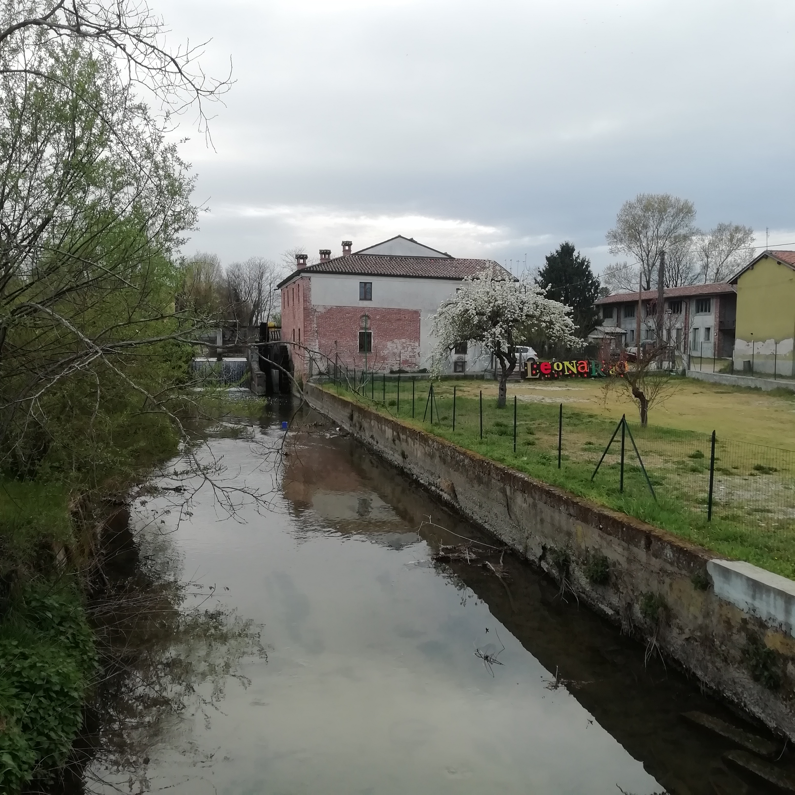
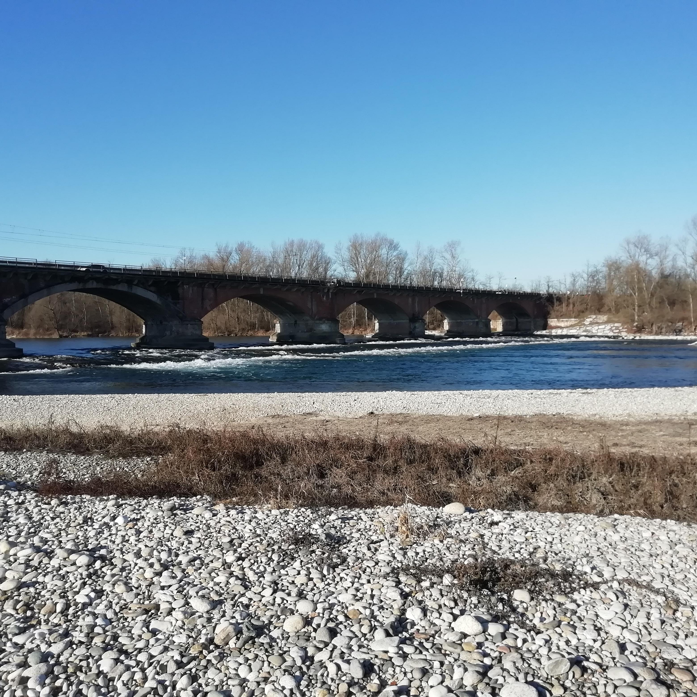

<!DOCTYPE html>
<head>
    <meta http-equiv="content-type" content="text/html; charset=UTF-8" />

        <script>
            L_NO_TOUCH = false;
            L_DISABLE_3D = false;
        </script>

<style>html, body {width: 100%;height: 100%;margin: 0;padding: 0;}</style>
<style>#map {position:absolute;top:0;bottom:0;right:0;left:0;}</style>
<script src="lib/Leaflet/leaflet.js"></script>
<link rel="stylesheet" href="lib/EasyButton-master/src/easy-button.css">
<script src="lib/EasyButton-master/src/easy-button.js"></script>
<script src="js_scripts/jquery-1.12.4.min.js"></script>
<script src="js_scripts/bootstrap.min.js"></script>
<script src="lib/Leaflet/leaflet.awesome-markers.js"></script>
<link rel="stylesheet" href="lib/Leaflet/leaflet.css"/>
<link rel="stylesheet" href="css/bootstrap.min.css"/>
<link rel="stylesheet" href="css/bootstrap-theme.min.css"/>
<link rel="stylesheet" href="css/font-awesome.min.css"/>
<link rel="stylesheet" href="lib/Leaflet/leaflet.awesome-markers.css"/>
<link rel="stylesheet" href="lib/Leaflet/leaflet.awesome.rotate.min.css"/>

            <meta name="viewport" content="width=device-width,
                initial-scale=1.0, maximum-scale=1.0, user-scalable=no" />
            <style>
                #map_885a2243c9854e18a49510e30bd220c1 {
                    position: relative;
                    width: 100.0%;
                    height: 100.0%;
                    left: 0.0%;
                    top: 0.0%;
                }
            </style>

</head>
<body>

            <div class="folium-map" id="map_885a2243c9854e18a49510e30bd220c1" ></div>

</body>
<script>


            var marker_5a798c68811f400cac004821e1ec1297 = L.marker(
                [45.335276, 8.828578],
                {}
            );


        var custom_icon_3c2ab789406f448dbf06d3491f8f89a5 = L.icon({"iconSize": [30, 30], "iconUrl": "https://emojipedia-us.s3.dualstack.us-west-1.amazonaws.com/thumbs/160/microsoft/74/cloud_2601.png "});
        marker_5a798c68811f400cac004821e1ec1297.setIcon(custom_icon_3c2ab789406f448dbf06d3491f8f89a5);


        var popup_3fcc6f2e7b884d9f84d4fd977fd19bb5 = L.popup({"maxWidth": "270"});


            var html_c5c3c640bb824b11bfee3d8878749b74 = $(`<div id="html_c5c3c640bb824b11bfee3d8878749b74" style="width: 100.0%; height: 100.0%;"><h1 style = "font-size: 30px;"><b>3 Navigli</b></h1><br><a href="mailto:info@ecologiaacustica.org?subject=PAESAGGIO SONORO --- [segnalazione] --- audio: 3 Navigli"><i><br>Facci sapere cosa ne pensi di questo audio!</a><audio id="audio_AL_45.335276, 8.828578" loop> <source src="dati/AL_45.335276, 8.828578/3NAVIGLI-converted.mp3" type="audio/mpeg"> </audio></div>`)[0];
            popup_3fcc6f2e7b884d9f84d4fd977fd19bb5.setContent(html_c5c3c640bb824b11bfee3d8878749b74);


        marker_5a798c68811f400cac004821e1ec1297.bindPopup(popup_3fcc6f2e7b884d9f84d4fd977fd19bb5)
marker_5a798c68811f400cac004821e1ec1297.on('click', function (e) {this.openPopup(); document.getElementById('audio_AL_45.335276, 8.828578').play();});
        ;


            var marker_93e8f1571597481a9e19beeb267641b4 = L.marker(
                [45.320201, 8.856242],
                {}
            );


        var custom_icon_6e71a9e4f40a46089276b755bbd6c650 = L.icon({"iconSize": [30, 30], "iconUrl": "https://emojipedia-us.s3.dualstack.us-west-1.amazonaws.com/thumbs/160/microsoft/74/ambulance_1f691.png "});
        marker_93e8f1571597481a9e19beeb267641b4.setIcon(custom_icon_6e71a9e4f40a46089276b755bbd6c650);


        var popup_876a9dc934f742389ebfbf56762a122c = L.popup({"maxWidth": "270"});


            var html_587b6cb0a89f465ba0c689964f94f379 = $(`<div id="html_587b6cb0a89f465ba0c689964f94f379" style="width: 100.0%; height: 100.0%;"><h1 style = "font-size: 30px;"><b>Ambulanza via Cavour</b></h1><a href="mailto:info@ecologiaacustica.org?subject=PAESAGGIO SONORO --- [segnalazione] --- audio: Ambulanza via Cavour"><i><br>Facci sapere cosa ne pensi di questo audio!</a><audio id="audio_AL_AMBULANZA CORSO CAVOUR" loop> <source src="dati/AL_AMBULANZA CORSO CAVOUR/ambulanza via cavour-converted.mp3" type="audio/mpeg"> </audio></div>`)[0];
            popup_876a9dc934f742389ebfbf56762a122c.setContent(html_587b6cb0a89f465ba0c689964f94f379);


        marker_93e8f1571597481a9e19beeb267641b4.bindPopup(popup_876a9dc934f742389ebfbf56762a122c)
marker_93e8f1571597481a9e19beeb267641b4.on('click', function (e) {this.openPopup(); document.getElementById('audio_AL_AMBULANZA CORSO CAVOUR').play();});
        ;


            var marker_cbcb722bf40243e79a12f37656babb52 = L.marker(
                [45.316128, 8.85024],
                {}
            );


        var custom_icon_aded9842398d43138500497a040142d8 = L.icon({"iconSize": [30, 30], "iconUrl": "https://emojipedia-us.s3.dualstack.us-west-1.amazonaws.com/thumbs/160/microsoft/74/ambulance_1f691.png "});
        marker_cbcb722bf40243e79a12f37656babb52.setIcon(custom_icon_aded9842398d43138500497a040142d8);


        var popup_c9f52d8a4099463f9d4b69a37e81abfd = L.popup({"maxWidth": "270"});


            var html_f0c8a4c0e6ee4fcf85cfcabee1f0949c = $(`<div id="html_f0c8a4c0e6ee4fcf85cfcabee1f0949c" style="width: 100.0%; height: 100.0%;"><h1 style = "font-size: 30px;"><b>Ambulanza corso Garibaldi</b></h1><a href="mailto:info@ecologiaacustica.org?subject=PAESAGGIO SONORO --- [segnalazione] --- audio: Ambulanza corso Garibaldi"><i><br>Facci sapere cosa ne pensi di questo audio!</a><audio id="audio_AL_AMBULANZA CORSO GARIBALDI" loop> <source src="dati/AL_AMBULANZA CORSO GARIBALDI/ambulanza corso garibaldi-converted.mp3" type="audio/mpeg"> </audio></div>`)[0];
            popup_c9f52d8a4099463f9d4b69a37e81abfd.setContent(html_f0c8a4c0e6ee4fcf85cfcabee1f0949c);


        marker_cbcb722bf40243e79a12f37656babb52.bindPopup(popup_c9f52d8a4099463f9d4b69a37e81abfd)
marker_cbcb722bf40243e79a12f37656babb52.on('click', function (e) {this.openPopup(); document.getElementById('audio_AL_AMBULANZA CORSO GARIBALDI').play();});
        ;


            var marker_0188d85c5b1148dc83525e3c776245b3 = L.marker(
                [45.299802, 8.831145],
                {}
            );


        var custom_icon_a3cc1e5592df40e1834c0fe198493b36 = L.icon({"iconSize": [30, 30], "iconUrl": "https://emojipedia-us.s3.dualstack.us-west-1.amazonaws.com/thumbs/160/microsoft/74/gear_2699.png "});
        marker_0188d85c5b1148dc83525e3c776245b3.setIcon(custom_icon_a3cc1e5592df40e1834c0fe198493b36);


        var popup_6e3b498019554bd0a1ca3ee9e2ca90d1 = L.popup({"maxWidth": "270"});


            var html_ebecc1d2d8454d33a3ed43c10c400cbd = $(`<div id="html_ebecc1d2d8454d33a3ed43c10c400cbd" style="width: 100.0%; height: 100.0%;"><h1 style = "font-size: 30px;"><b>Rottamaio</b></h1><br><a href="mailto:info@ecologiaacustica.org?subject=PAESAGGIO SONORO --- [segnalazione] --- audio: Rottamaio"><i><br>Facci sapere cosa ne pensi di questo audio!</a><audio id="audio_AL_AUTODEMOLIZIONI PICCHIO" loop> <source src="dati/AL_AUTODEMOLIZIONI PICCHIO/ROTTAMAIO PICCHIO-converted.mp3" type="audio/mpeg"> </audio></div>`)[0];
            popup_6e3b498019554bd0a1ca3ee9e2ca90d1.setContent(html_ebecc1d2d8454d33a3ed43c10c400cbd);


        marker_0188d85c5b1148dc83525e3c776245b3.bindPopup(popup_6e3b498019554bd0a1ca3ee9e2ca90d1)
marker_0188d85c5b1148dc83525e3c776245b3.on('click', function (e) {this.openPopup(); document.getElementById('audio_AL_AUTODEMOLIZIONI PICCHIO').play();});
        ;


            var marker_48de5002f6644604906294cc82445a19 = L.marker(
                [45.327416, 8.839585],
                {}
            );


        var custom_icon_b986477c49904fcc8ae8541c001c13cc = L.icon({"iconSize": [30, 30], "iconUrl": "https://emojipedia-us.s3.dualstack.us-west-1.amazonaws.com/thumbs/160/microsoft/74/gear_2699.png "});
        marker_48de5002f6644604906294cc82445a19.setIcon(custom_icon_b986477c49904fcc8ae8541c001c13cc);


        var popup_c3eb464d154a49d9aab4904bfccbe59b = L.popup({"maxWidth": "270"});


            var html_07aa9acf16f745cb83020f79c001f6c9 = $(`<div id="html_07aa9acf16f745cb83020f79c001f6c9" style="width: 100.0%; height: 100.0%;"><h1 style = "font-size: 30px;"><b>Autolavaggio</b></h1><br><a href="mailto:info@ecologiaacustica.org?subject=PAESAGGIO SONORO --- [segnalazione] --- audio: Autolavaggio"><i><br>Facci sapere cosa ne pensi di questo audio!</a><audio id="audio_AL_AUTOLAVAGGIO SEVEN WASH" loop> <source src="dati/AL_AUTOLAVAGGIO SEVEN WASH/AUTOLavaggio  seven wash-converted.mp3" type="audio/mpeg"> </audio></div>`)[0];
            popup_c3eb464d154a49d9aab4904bfccbe59b.setContent(html_07aa9acf16f745cb83020f79c001f6c9);


        marker_48de5002f6644604906294cc82445a19.bindPopup(popup_c3eb464d154a49d9aab4904bfccbe59b)
marker_48de5002f6644604906294cc82445a19.on('click', function (e) {this.openPopup(); document.getElementById('audio_AL_AUTOLAVAGGIO SEVEN WASH').play();});
        ;


            var marker_0f983f3e3ffa4eb7bfac0530afb91685 = L.marker(
                [45.320629, 8.909743],
                {}
            );


        var custom_icon_e96bc946ee744cca8257f9f2299f0600 = L.icon({"iconSize": [30, 30], "iconUrl": "https://emojipedia-us.s3.dualstack.us-west-1.amazonaws.com/thumbs/160/microsoft/209/people-holding-hands_1f9d1-200d-1f91d-200d-1f9d1.png "});
        marker_0f983f3e3ffa4eb7bfac0530afb91685.setIcon(custom_icon_e96bc946ee744cca8257f9f2299f0600);


        var popup_a87da02f713e4ea083914b8a0e88a94d = L.popup({"maxWidth": "270"});


            var html_39a1458dc6f843ea99d52b6ff5df0f34 = $(`<div id="html_39a1458dc6f843ea99d52b6ff5df0f34" style="width: 100.0%; height: 100.0%;"><h1 style = "font-size: 30px;"><b>Anziani</b></h1><br><a href="mailto:info@ecologiaacustica.org?subject=PAESAGGIO SONORO --- [segnalazione] --- audio: Anziani"><i><br>Facci sapere cosa ne pensi di questo audio!</a><audio id="audio_AL_AYALA ANZIANI" loop> <source src="dati/AL_AYALA ANZIANI/ayala anziani-converted.mp3" type="audio/mpeg"> </audio></div>`)[0];
            popup_a87da02f713e4ea083914b8a0e88a94d.setContent(html_39a1458dc6f843ea99d52b6ff5df0f34);


        marker_0f983f3e3ffa4eb7bfac0530afb91685.bindPopup(popup_a87da02f713e4ea083914b8a0e88a94d)
marker_0f983f3e3ffa4eb7bfac0530afb91685.on('click', function (e) {this.openPopup(); document.getElementById('audio_AL_AYALA ANZIANI').play();});
        ;


            var marker_de52005b79c1486a92f729626bad1b86 = L.marker(
                [45.316647, 8.857617],
                {}
            );


        var custom_icon_cc63f06bc04b45e798896844d55188bd = L.icon({"iconSize": [30, 30], "iconUrl": "https://emojipedia-us.s3.dualstack.us-west-1.amazonaws.com/thumbs/160/microsoft/74/church_26ea.png "});
        marker_de52005b79c1486a92f729626bad1b86.setIcon(custom_icon_cc63f06bc04b45e798896844d55188bd);


        var popup_db80d48ee396491a9f8d27f3d0819279 = L.popup({"maxWidth": "270"});


            var html_c7c771eddd504773af7ea57083d965f7 = $(`<div id="html_c7c771eddd504773af7ea57083d965f7" style="width: 100.0%; height: 100.0%;"><h1 style = "font-size: 30px;"><b>Campane in castello</b></h1><br><a href="mailto:info@ecologiaacustica.org?subject=PAESAGGIO SONORO --- [segnalazione] --- audio: Campane in castello"><i><br>Facci sapere cosa ne pensi di questo audio!</a><audio id="audio_AL_CAMPANE CASTELLO" loop> <source src="dati/AL_CAMPANE CASTELLO/campane castello-converted.mp3" type="audio/mpeg"> </audio></div>`)[0];
            popup_db80d48ee396491a9f8d27f3d0819279.setContent(html_c7c771eddd504773af7ea57083d965f7);


        marker_de52005b79c1486a92f729626bad1b86.bindPopup(popup_db80d48ee396491a9f8d27f3d0819279)
marker_de52005b79c1486a92f729626bad1b86.on('click', function (e) {this.openPopup(); document.getElementById('audio_AL_CAMPANE CASTELLO').play();});
        ;


            var marker_3b3950bb9f86421ba171fc555451de03 = L.marker(
                [45.3235, 8.8529],
                {}
            );


        var custom_icon_fe4159415c5f40fd99a4e7d654a4d4ac = L.icon({"iconSize": [30, 30], "iconUrl": "https://emojipedia-us.s3.dualstack.us-west-1.amazonaws.com/thumbs/160/microsoft/74/church_26ea.png "});
        marker_3b3950bb9f86421ba171fc555451de03.setIcon(custom_icon_fe4159415c5f40fd99a4e7d654a4d4ac);


        var popup_1c3a74b59a4e412fa52680902944ad01 = L.popup({"maxWidth": "270"});


            var html_f69eada63f6145f4ab5fb053eebc7373 = $(`<div id="html_f69eada63f6145f4ab5fb053eebc7373" style="width: 100.0%; height: 100.0%;"><h1 style = "font-size: 30px;"><b>Campana Immacolata</b></h1><br><a href="mailto:info@ecologiaacustica.org?subject=PAESAGGIO SONORO --- [segnalazione] --- audio: Campana Immacolata"><i><br>Facci sapere cosa ne pensi di questo audio!</a><audio id="audio_AL_CAMPANE IMMACOLATA" loop> <source src="dati/AL_CAMPANE IMMACOLATA/campane immacolata-converted.mp3" type="audio/mpeg"> </audio></div>`)[0];
            popup_1c3a74b59a4e412fa52680902944ad01.setContent(html_f69eada63f6145f4ab5fb053eebc7373);


        marker_3b3950bb9f86421ba171fc555451de03.bindPopup(popup_1c3a74b59a4e412fa52680902944ad01)
marker_3b3950bb9f86421ba171fc555451de03.on('click', function (e) {this.openPopup(); document.getElementById('audio_AL_CAMPANE IMMACOLATA').play();});
        ;


            var marker_a40030da8a8b44f8b0128614bd5b44d7 = L.marker(
                [45.318809, 8.853754],
                {}
            );


        var custom_icon_84839ffae5fc4ed58d8fd99b3b73303a = L.icon({"iconSize": [30, 30], "iconUrl": "https://emojipedia-us.s3.dualstack.us-west-1.amazonaws.com/thumbs/160/microsoft/74/church_26ea.png "});
        marker_a40030da8a8b44f8b0128614bd5b44d7.setIcon(custom_icon_84839ffae5fc4ed58d8fd99b3b73303a);


        var popup_e97222ed6b444741b94e92fdbffd0057 = L.popup({"maxWidth": "270"});


            var html_3b62a392708643d6a6f5fd4f9115de6e = $(`<div id="html_3b62a392708643d6a6f5fd4f9115de6e" style="width: 100.0%; height: 100.0%;"><h1 style = "font-size: 30px;"><b>Campana San Bernardo</b></h1><br><a href="mailto:info@ecologiaacustica.org?subject=PAESAGGIO SONORO --- [segnalazione] --- audio: Campana San Bernardo"><i><br>Facci sapere cosa ne pensi di questo audio!</a><audio id="audio_AL_CAMPANE SAN BERNARDO" loop> <source src="dati/AL_CAMPANE SAN BERNARDO/campane san bernardo-converted.mp3" type="audio/mpeg"> </audio></div>`)[0];
            popup_e97222ed6b444741b94e92fdbffd0057.setContent(html_3b62a392708643d6a6f5fd4f9115de6e);


        marker_a40030da8a8b44f8b0128614bd5b44d7.bindPopup(popup_e97222ed6b444741b94e92fdbffd0057)
marker_a40030da8a8b44f8b0128614bd5b44d7.on('click', function (e) {this.openPopup(); document.getElementById('audio_AL_CAMPANE SAN BERNARDO').play();});
        ;


            var marker_f29ab328dc964d0b84aaf54f06cf8fd4 = L.marker(
                [45.312951, 8.855561],
                {}
            );


        var custom_icon_6408723160ed4e54894ca49ce4339531 = L.icon({"iconSize": [30, 30], "iconUrl": "https://emojipedia-us.s3.dualstack.us-west-1.amazonaws.com/thumbs/160/microsoft/74/church_26ea.png "});
        marker_f29ab328dc964d0b84aaf54f06cf8fd4.setIcon(custom_icon_6408723160ed4e54894ca49ce4339531);


        var popup_869232077a0e424ebe611a353fa42343 = L.popup({"maxWidth": "270"});


            var html_6390b2e7ae9a4977ac13a04423d27ef2 = $(`<div id="html_6390b2e7ae9a4977ac13a04423d27ef2" style="width: 100.0%; height: 100.0%;"><h1 style = "font-size: 30px;"><b>Campane Via Rossini</b></h1><a href="mailto:info@ecologiaacustica.org?subject=PAESAGGIO SONORO --- [segnalazione] --- audio: Campane Via Rossini"><i><br>Facci sapere cosa ne pensi di questo audio!</a><audio id="audio_AL_CAMPANE SS CROCIFISSO VIA ROSSINI" loop> <source src="dati/AL_CAMPANE SS CROCIFISSO VIA ROSSINI/CAMPANE SS CROCIFISSO VIA ROSSINI-converted.mp3" type="audio/mpeg"> </audio></div>`)[0];
            popup_869232077a0e424ebe611a353fa42343.setContent(html_6390b2e7ae9a4977ac13a04423d27ef2);


        marker_f29ab328dc964d0b84aaf54f06cf8fd4.bindPopup(popup_869232077a0e424ebe611a353fa42343)
marker_f29ab328dc964d0b84aaf54f06cf8fd4.on('click', function (e) {this.openPopup(); document.getElementById('audio_AL_CAMPANE SS CROCIFISSO VIA ROSSINI').play();});
        ;


            var marker_a5e560996d4e472bb0417b1096cdc213 = L.marker(
                [45.318437, 8.8622353],
                {}
            );


        var custom_icon_b68844ef573241db8e71540f6ed55e74 = L.icon({"iconSize": [30, 30], "iconUrl": "https://emojipedia-us.s3.dualstack.us-west-1.amazonaws.com/thumbs/160/microsoft/74/gear_2699.png "});
        marker_a5e560996d4e472bb0417b1096cdc213.setIcon(custom_icon_b68844ef573241db8e71540f6ed55e74);


        var popup_6c2182fa2f2a4c839eaa7d6b205ed3f9 = L.popup({"maxWidth": "270"});


            var html_46ca3fb9a5af44a7a97f937471b3228a = $(`<div id="html_46ca3fb9a5af44a7a97f937471b3228a" style="width: 100.0%; height: 100.0%;"><h1 style = "font-size: 30px;"><b>Cancello</b></h1><a href="mailto:info@ecologiaacustica.org?subject=PAESAGGIO SONORO --- [segnalazione] --- audio: Cancello"><i><br>Facci sapere cosa ne pensi di questo audio!</a><audio id="audio_AL_CANCELLO VIA CARDUCCI 9" loop> <source src="dati/AL_CANCELLO VIA CARDUCCI 9/cancello via carducci 9-converted.mp3" type="audio/mpeg"> </audio></div>`)[0];
            popup_6c2182fa2f2a4c839eaa7d6b205ed3f9.setContent(html_46ca3fb9a5af44a7a97f937471b3228a);


        marker_a5e560996d4e472bb0417b1096cdc213.bindPopup(popup_6c2182fa2f2a4c839eaa7d6b205ed3f9)
marker_a5e560996d4e472bb0417b1096cdc213.on('click', function (e) {this.openPopup(); document.getElementById('audio_AL_CANCELLO VIA CARDUCCI 9').play();});
        ;


            var marker_76932994da8b4e39a974abdd16961e04 = L.marker(
                [45.316329, 8.856831],
                {}
            );


        var custom_icon_956d89036fe040ee877abb313292fc7d = L.icon({"iconSize": [30, 30], "iconUrl": "https://emojipedia-us.s3.dualstack.us-west-1.amazonaws.com/thumbs/160/microsoft/74/cloud_2601.png "});
        marker_76932994da8b4e39a974abdd16961e04.setIcon(custom_icon_956d89036fe040ee877abb313292fc7d);


        var popup_130ed19a2d4643939b0d75624ab106b5 = L.popup({"maxWidth": "270"});


            var html_59a4bfa1c2694e9bb5eab7abe9f3c3de = $(`<div id="html_59a4bfa1c2694e9bb5eab7abe9f3c3de" style="width: 100.0%; height: 100.0%;"><h1 style = "font-size: 30px;"><b>Castello</b></h1><br><a href="mailto:info@ecologiaacustica.org?subject=PAESAGGIO SONORO --- [segnalazione] --- audio: Castello"><i><br>Facci sapere cosa ne pensi di questo audio!</a><audio id="audio_AL_CASTELLO" loop> <source src="dati/AL_CASTELLO/AL_CASTELLO-converted.mp3" type="audio/mpeg"> </audio></div>`)[0];
            popup_130ed19a2d4643939b0d75624ab106b5.setContent(html_59a4bfa1c2694e9bb5eab7abe9f3c3de);


        marker_76932994da8b4e39a974abdd16961e04.bindPopup(popup_130ed19a2d4643939b0d75624ab106b5)
marker_76932994da8b4e39a974abdd16961e04.on('click', function (e) {this.openPopup(); document.getElementById('audio_AL_CASTELLO').play();});
        ;


            var marker_944289a0f5fb4257a88f9e5c1f5ddd1f = L.marker(
                [45.316545, 8.856341],
                {}
            );


        var custom_icon_9be1db14df8e4499914da31bb4cdf535 = L.icon({"iconSize": [30, 30], "iconUrl": "https://emojipedia-us.s3.dualstack.us-west-1.amazonaws.com/thumbs/160/microsoft/74/bird_1f426.png "});
        marker_944289a0f5fb4257a88f9e5c1f5ddd1f.setIcon(custom_icon_9be1db14df8e4499914da31bb4cdf535);


        var popup_792a5e5a59a54520ade0e27aab09b258 = L.popup({"maxWidth": "270"});


            var html_27f21e6b56f14fddade1c7ccb2910900 = $(`<div id="html_27f21e6b56f14fddade1c7ccb2910900" style="width: 100.0%; height: 100.0%;"><h1 style = "font-size: 30px;"><b>Cavallerizza</b></h1><br><a href="mailto:info@ecologiaacustica.org?subject=PAESAGGIO SONORO --- [segnalazione] --- audio: Cavallerizza"><i><br>Facci sapere cosa ne pensi di questo audio!</a><audio id="audio_AL_CAVALLERIZZA CON CONDIZIONATORE E UCCELLINI" loop> <source src="dati/AL_CAVALLERIZZA CON CONDIZIONATORE E UCCELLINI/cavallerizza senza bimbi ma con condizionatore iniziale e non-converted.mp3" type="audio/mpeg"> </audio></div>`)[0];
            popup_792a5e5a59a54520ade0e27aab09b258.setContent(html_27f21e6b56f14fddade1c7ccb2910900);


        marker_944289a0f5fb4257a88f9e5c1f5ddd1f.bindPopup(popup_792a5e5a59a54520ade0e27aab09b258)
marker_944289a0f5fb4257a88f9e5c1f5ddd1f.on('click', function (e) {this.openPopup(); document.getElementById('audio_AL_CAVALLERIZZA CON CONDIZIONATORE E UCCELLINI').play();});
        ;


            var marker_653bf9fa41724c6c9c785290868ef935 = L.marker(
                [45.347941, 8.849416],
                {}
            );


        var custom_icon_6f32e08aa7f84f83980abf661593c677 = L.icon({"iconSize": [30, 30], "iconUrl": "https://emojipedia-us.s3.dualstack.us-west-1.amazonaws.com/thumbs/160/microsoft/74/cloud_2601.png "});
        marker_653bf9fa41724c6c9c785290868ef935.setIcon(custom_icon_6f32e08aa7f84f83980abf661593c677);


        var popup_dbbefe91827541e1b6fa7a30f6862cc7 = L.popup({"maxWidth": "270"});


            var html_ad8db2b0b8354584bb69910e5481c525 = $(`<div id="html_ad8db2b0b8354584bb69910e5481c525" style="width: 100.0%; height: 100.0%;"><h1 style = "font-size: 30px;"><b>Ramo dei Prati</b></h1><br><a href="mailto:info@ecologiaacustica.org?subject=PAESAGGIO SONORO --- [segnalazione] --- audio: Ramo dei Prati"><i><br>Facci sapere cosa ne pensi di questo audio!</a><audio id="audio_AL_CHIESA BUCCELLA" loop> <source src="dati/AL_CHIESA BUCCELLA/RAMO DEI PRATI-converted.mp3" type="audio/mpeg"> </audio></div>`)[0];
            popup_dbbefe91827541e1b6fa7a30f6862cc7.setContent(html_ad8db2b0b8354584bb69910e5481c525);


        marker_653bf9fa41724c6c9c785290868ef935.bindPopup(popup_dbbefe91827541e1b6fa7a30f6862cc7)
marker_653bf9fa41724c6c9c785290868ef935.on('click', function (e) {this.openPopup(); document.getElementById('audio_AL_CHIESA BUCCELLA').play();});
        ;


            var marker_d09dd217bb51477c8ece3c4e212954ca = L.marker(
                [45.324436, 8.835918],
                {}
            );


        var custom_icon_e5bb2addda7341e4a38fb7e35ea9bf8a = L.icon({"iconSize": [30, 30], "iconUrl": "https://emojipedia-us.s3.dualstack.us-west-1.amazonaws.com/thumbs/160/microsoft/74/cloud_2601.png "});
        marker_d09dd217bb51477c8ece3c4e212954ca.setIcon(custom_icon_e5bb2addda7341e4a38fb7e35ea9bf8a);


        var popup_cea42b49dadc46c48f2c44e56bbb885f = L.popup({"maxWidth": "270"});


            var html_7c0c281e2c1f4233b52c0d3b6c64687a = $(`<div id="html_7c0c281e2c1f4233b52c0d3b6c64687a" style="width: 100.0%; height: 100.0%;"><h1 style = "font-size: 30px;"><b>Chiesa Battù</b></h1><br><a href="mailto:info@ecologiaacustica.org?subject=PAESAGGIO SONORO --- [segnalazione] --- audio: Chiesa Battù"><i><br>Facci sapere cosa ne pensi di questo audio!</a><audio id="audio_AL_CHIESA SANTA MARIA DEL PARTO BATTU" loop> <source src="dati/AL_CHIESA SANTA MARIA DEL PARTO BATTU/STRADA BARBAVARA-converted.mp3" type="audio/mpeg"> </audio></div>`)[0];
            popup_cea42b49dadc46c48f2c44e56bbb885f.setContent(html_7c0c281e2c1f4233b52c0d3b6c64687a);


        marker_d09dd217bb51477c8ece3c4e212954ca.bindPopup(popup_cea42b49dadc46c48f2c44e56bbb885f)
marker_d09dd217bb51477c8ece3c4e212954ca.on('click', function (e) {this.openPopup(); document.getElementById('audio_AL_CHIESA SANTA MARIA DEL PARTO BATTU').play();});
        ;


            var marker_bad9867726634d388b155dfe2a4b2021 = L.marker(
                [45.314712, 8.850959],
                {}
            );


        var custom_icon_7c2fddbdcac040479e228f5778fa0400 = L.icon({"iconSize": [30, 30], "iconUrl": "https://emojipedia-us.s3.dualstack.us-west-1.amazonaws.com/thumbs/160/microsoft/74/automobile_1f697.png "});
        marker_bad9867726634d388b155dfe2a4b2021.setIcon(custom_icon_7c2fddbdcac040479e228f5778fa0400);


        var popup_20937e2f5d3a4e4e806dee5b2b655f80 = L.popup({"maxWidth": "270"});


            var html_1967284decc444909874428e5ec66bbe = $(`<div id="html_1967284decc444909874428e5ec66bbe" style="width: 100.0%; height: 100.0%;"><h1 style = "font-size: 30px;"><b>Traffico corso Torino</b></h1><br><a href="mailto:info@ecologiaacustica.org?subject=PAESAGGIO SONORO --- [segnalazione] --- audio: Traffico corso Torino"><i><br>Facci sapere cosa ne pensi di questo audio!</a><audio id="audio_AL_CORSO TORINO 9 H 18" loop> <source src="dati/AL_CORSO TORINO 9 H 18/corso torino 9 traffico-converted.mp3" type="audio/mpeg"> </audio></div>`)[0];
            popup_20937e2f5d3a4e4e806dee5b2b655f80.setContent(html_1967284decc444909874428e5ec66bbe);


        marker_bad9867726634d388b155dfe2a4b2021.bindPopup(popup_20937e2f5d3a4e4e806dee5b2b655f80)
marker_bad9867726634d388b155dfe2a4b2021.on('click', function (e) {this.openPopup(); document.getElementById('audio_AL_CORSO TORINO 9 H 18').play();});
        ;


            var marker_2397cb17f4424fc29c603efbbebc04df = L.marker(
                [45.31581126, 8.855427057],
                {}
            );


        var custom_icon_4e78c56679d548a28487326a1c2fae14 = L.icon({"iconSize": [30, 30], "iconUrl": "https://emojipedia-us.s3.dualstack.us-west-1.amazonaws.com/thumbs/160/microsoft/74/cross-mark_274c.png "});
        marker_2397cb17f4424fc29c603efbbebc04df.setIcon(custom_icon_4e78c56679d548a28487326a1c2fae14);


        var popup_60834065534b4033a7990b8df26f45a3 = L.popup({"maxWidth": "270"});


            var html_6864f2fbeffd4d8db5d9b433ee6b2ea7 = $(`<div id="html_6864f2fbeffd4d8db5d9b433ee6b2ea7" style="width: 100.0%; height: 100.0%;"><h1 style = "font-size: 30px;"><b>Parco Roncalli</b></h1><br><a href="mailto:info@ecologiaacustica.org?subject=PAESAGGIO SONORO --- [segnalazione] --- audio: Parco Roncalli"><i><br>Facci sapere cosa ne pensi di questo audio!</a><audio id="audio_AL_CORTILE OFFICINE RONCALLI" loop> <source src="dati/AL_CORTILE OFFICINE RONCALLI/parco roncalli con colombi in amore-converted.mp3" type="audio/mpeg"> </audio></div>`)[0];
            popup_60834065534b4033a7990b8df26f45a3.setContent(html_6864f2fbeffd4d8db5d9b433ee6b2ea7);


        marker_2397cb17f4424fc29c603efbbebc04df.bindPopup(popup_60834065534b4033a7990b8df26f45a3)
marker_2397cb17f4424fc29c603efbbebc04df.on('click', function (e) {this.openPopup(); document.getElementById('audio_AL_CORTILE OFFICINE RONCALLI').play();});
        ;


            var marker_280983bd04ea469eb9e5ad6663c73f33 = L.marker(
                [45.318346, 8.855921],
                {}
            );


        var custom_icon_788297e10ac3420786af461084172600 = L.icon({"iconSize": [30, 30], "iconUrl": "https://emojipedia-us.s3.dualstack.us-west-1.amazonaws.com/thumbs/160/microsoft/74/water-wave_1f30a.png "});
        marker_280983bd04ea469eb9e5ad6663c73f33.setIcon(custom_icon_788297e10ac3420786af461084172600);


        var popup_f04ee4069a444b93a57ae13ab5a54df1 = L.popup({"maxWidth": "270"});


            var html_4522eb45a3064f4c962d55df28ffdece = $(`<div id="html_4522eb45a3064f4c962d55df28ffdece" style="width: 100.0%; height: 100.0%;"><h1 style = "font-size: 30px;"><b>San Francesco</b></h1><a href="mailto:info@ecologiaacustica.org?subject=PAESAGGIO SONORO --- [segnalazione] --- audio: San Francesco"><i><br>Facci sapere cosa ne pensi di questo audio!</a><audio id="audio_AL_FONTANA SAN FRANCESCO" loop> <source src="dati/AL_FONTANA SAN FRANCESCO/SAN FRANCESCO-converted.mp3" type="audio/mpeg"> </audio></div>`)[0];
            popup_f04ee4069a444b93a57ae13ab5a54df1.setContent(html_4522eb45a3064f4c962d55df28ffdece);


        marker_280983bd04ea469eb9e5ad6663c73f33.bindPopup(popup_f04ee4069a444b93a57ae13ab5a54df1)
marker_280983bd04ea469eb9e5ad6663c73f33.on('click', function (e) {this.openPopup(); document.getElementById('audio_AL_FONTANA SAN FRANCESCO').play();});
        ;


            var marker_9aaf4c562818425aa4ee77dc72f24c3a = L.marker(
                [45.319, 8.853801],
                {}
            );


        var custom_icon_1f60875695194b4c9f10aff43ee1602b = L.icon({"iconSize": [30, 30], "iconUrl": "https://emojipedia-us.s3.dualstack.us-west-1.amazonaws.com/thumbs/160/microsoft/74/water-wave_1f30a.png "});
        marker_9aaf4c562818425aa4ee77dc72f24c3a.setIcon(custom_icon_1f60875695194b4c9f10aff43ee1602b);


        var popup_a47b2747b94743b28514c2978126b3cb = L.popup({"maxWidth": "270"});


            var html_bb971ce2ac37471f925c8170904019f6 = $(`<div id="html_bb971ce2ac37471f925c8170904019f6" style="width: 100.0%; height: 100.0%;"><h1 style = "font-size: 30px;"><b>San Bernardo</b></h1><br><a href="mailto:info@ecologiaacustica.org?subject=PAESAGGIO SONORO --- [segnalazione] --- audio: San Bernardo"><i><br>Facci sapere cosa ne pensi di questo audio!</a><audio id="audio_AL_FONTANELLA INCROCIO SAN BERNARDO" loop> <source src="dati/AL_FONTANELLA INCROCIO SAN BERNARDO/fontanella san bernardo-converted.mp3" type="audio/mpeg"> </audio></div>`)[0];
            popup_a47b2747b94743b28514c2978126b3cb.setContent(html_bb971ce2ac37471f925c8170904019f6);


        marker_9aaf4c562818425aa4ee77dc72f24c3a.bindPopup(popup_a47b2747b94743b28514c2978126b3cb)
marker_9aaf4c562818425aa4ee77dc72f24c3a.on('click', function (e) {this.openPopup(); document.getElementById('audio_AL_FONTANELLA INCROCIO SAN BERNARDO').play();});
        ;


            var marker_11a2e6e0493144c3a6a76a0d9d909d68 = L.marker(
                [45.320298, 8.849036],
                {}
            );


        var custom_icon_0f49131b074f40de9f9ec3c416a1f0c7 = L.icon({"iconSize": [30, 30], "iconUrl": "https://emojipedia-us.s3.dualstack.us-west-1.amazonaws.com/thumbs/160/microsoft/74/water-wave_1f30a.png "});
        marker_11a2e6e0493144c3a6a76a0d9d909d68.setIcon(custom_icon_0f49131b074f40de9f9ec3c416a1f0c7);


        var popup_9ea0d194e2934e7d9943e740ef9ea46f = L.popup({"maxWidth": "270"});


            var html_68f83e0ab96446bda418a853a84d45d6 = $(`<div id="html_68f83e0ab96446bda418a853a84d45d6" style="width: 100.0%; height: 100.0%;"><h1 style = "font-size: 30px;"><b>Parco in via d'Avalos</b></h1><br><a href="mailto:info@ecologiaacustica.org?subject=PAESAGGIO SONORO --- [segnalazione] --- audio: Parco in via d'Avalos"><i><br>Facci sapere cosa ne pensi di questo audio!</a><audio id="audio_AL_FONTANELLA PARCO VIA DAVALOS" loop> <source src="dati/AL_FONTANELLA PARCO VIA DAVALOS/fontanella parco via d'avalos-converted.mp3" type="audio/mpeg"> </audio></div>`)[0];
            popup_9ea0d194e2934e7d9943e740ef9ea46f.setContent(html_68f83e0ab96446bda418a853a84d45d6);


        marker_11a2e6e0493144c3a6a76a0d9d909d68.bindPopup(popup_9ea0d194e2934e7d9943e740ef9ea46f)
marker_11a2e6e0493144c3a6a76a0d9d909d68.on('click', function (e) {this.openPopup(); document.getElementById('audio_AL_FONTANELLA PARCO VIA DAVALOS').play();});
        ;


            var marker_fda27f4eedfd4936952acf75bb191770 = L.marker(
                [45.319209, 8.911778],
                {}
            );


        var custom_icon_d92ef831b7244b6c89955ef2cc6ca26c = L.icon({"iconSize": [30, 30], "iconUrl": "https://emojipedia-us.s3.dualstack.us-west-1.amazonaws.com/thumbs/160/microsoft/74/bird_1f426.png "});
        marker_fda27f4eedfd4936952acf75bb191770.setIcon(custom_icon_d92ef831b7244b6c89955ef2cc6ca26c);


        var popup_0d2536c2026c4b3f95e8c8eb83b07a86 = L.popup({"maxWidth": "270"});


            var html_e32abbdbbb3043758fe2074b1d7bedc2 = $(`<div id="html_e32abbdbbb3043758fe2074b1d7bedc2" style="width: 100.0%; height: 100.0%;"><h1 style = "font-size: 30px;"><b>Gallinelle</b></h1><br><a href="mailto:info@ecologiaacustica.org?subject=PAESAGGIO SONORO --- [segnalazione] --- audio: Gallinelle"><i><br>Facci sapere cosa ne pensi di questo audio!</a><audio id="audio_AL_GALLINELLE AYALA" loop> <source src="dati/AL_GALLINELLE AYALA/gallinelle ayala-converted.mp3" type="audio/mpeg"> </audio></div>`)[0];
            popup_0d2536c2026c4b3f95e8c8eb83b07a86.setContent(html_e32abbdbbb3043758fe2074b1d7bedc2);


        marker_fda27f4eedfd4936952acf75bb191770.bindPopup(popup_0d2536c2026c4b3f95e8c8eb83b07a86)
marker_fda27f4eedfd4936952acf75bb191770.on('click', function (e) {this.openPopup(); document.getElementById('audio_AL_GALLINELLE AYALA').play();});
        ;


            var marker_ee44cfbffb0745e3a940ca2c9e4ce2c9 = L.marker(
                [45.3163211, 8.8556406],
                {}
            );


        var custom_icon_1af9a0d112fc42c18d15ffbc4b49268c = L.icon({"iconSize": [30, 30], "iconUrl": "https://emojipedia-us.s3.dualstack.us-west-1.amazonaws.com/thumbs/160/microsoft/74/gear_2699.png "});
        marker_ee44cfbffb0745e3a940ca2c9e4ce2c9.setIcon(custom_icon_1af9a0d112fc42c18d15ffbc4b49268c);


        var popup_a7b75be9a81741088778af0adf0eed5e = L.popup({"maxWidth": "270"});


            var html_9768c70d4838409da56cc1edcbd35b54 = $(`<div id="html_9768c70d4838409da56cc1edcbd35b54" style="width: 100.0%; height: 100.0%;"><h1 style = "font-size: 30px;"><b>Tatuaggio</b></h1><br><a href="mailto:info@ecologiaacustica.org?subject=PAESAGGIO SONORO --- [segnalazione] --- audio: Tatuaggio"><i><br>Facci sapere cosa ne pensi di questo audio!</a><audio id="audio_AL_GUNTATOO VIA DEL POPOLO" loop> <source src="dati/AL_GUNTATOO VIA DEL POPOLO/macchinetta tatoo-converted.mp3" type="audio/mpeg"> </audio></div>`)[0];
            popup_a7b75be9a81741088778af0adf0eed5e.setContent(html_9768c70d4838409da56cc1edcbd35b54);


        marker_ee44cfbffb0745e3a940ca2c9e4ce2c9.bindPopup(popup_a7b75be9a81741088778af0adf0eed5e)
marker_ee44cfbffb0745e3a940ca2c9e4ce2c9.on('click', function (e) {this.openPopup(); document.getElementById('audio_AL_GUNTATOO VIA DEL POPOLO').play();});
        ;


            var marker_81f715d35d724a28826aa10994be0cb3 = L.marker(
                [45.31646, 8.87454],
                {}
            );


        var custom_icon_67e24019576e41f389b54f4b5488eafa = L.icon({"iconSize": [30, 30], "iconUrl": "https://emojipedia-us.s3.dualstack.us-west-1.amazonaws.com/thumbs/160/microsoft/209/people-holding-hands_1f9d1-200d-1f91d-200d-1f9d1.png "});
        marker_81f715d35d724a28826aa10994be0cb3.setIcon(custom_icon_67e24019576e41f389b54f4b5488eafa);


        var popup_a410f98aad574b889dee9dbb08bfd439 = L.popup({"maxWidth": "270"});


            var html_06f419ad7a60489d9e52cb99e7e3d3f7 = $(`<div id="html_06f419ad7a60489d9e52cb99e7e3d3f7" style="width: 100.0%; height: 100.0%;"><h1 style = "font-size: 30px;"><b>Luna Park</b></h1><br><a href="mailto:info@ecologiaacustica.org?subject=PAESAGGIO SONORO --- [segnalazione] --- audio: Luna Park"><i><br>Facci sapere cosa ne pensi di questo audio!</a><audio id="audio_AL_LUNA PARK" loop> <source src="dati/AL_LUNA PARK/luna park-converted.mp3" type="audio/mpeg"> </audio></div>`)[0];
            popup_a410f98aad574b889dee9dbb08bfd439.setContent(html_06f419ad7a60489d9e52cb99e7e3d3f7);


        marker_81f715d35d724a28826aa10994be0cb3.bindPopup(popup_a410f98aad574b889dee9dbb08bfd439)
marker_81f715d35d724a28826aa10994be0cb3.on('click', function (e) {this.openPopup(); document.getElementById('audio_AL_LUNA PARK').play();});
        ;


            var marker_24a4fd150cfd418b82f1b29d1f24a71b = L.marker(
                [45.288236, 8.904653],
                {}
            );


        var custom_icon_83e1f160a90045cb8df426dcefa47c13 = L.icon({"iconSize": [30, 30], "iconUrl": "https://emojipedia-us.s3.dualstack.us-west-1.amazonaws.com/thumbs/160/microsoft/74/cloud_2601.png "});
        marker_24a4fd150cfd418b82f1b29d1f24a71b.setIcon(custom_icon_83e1f160a90045cb8df426dcefa47c13);


        var popup_7c04d9ae803e40f99434771d82aea2a4 = L.popup({"maxWidth": "270"});


            var html_c0e07dfefd364930922e7e6e39ab660b = $(`<div id="html_c0e07dfefd364930922e7e6e39ab660b" style="width: 100.0%; height: 100.0%;"><h1 style = "font-size: 30px;"><b>Marcite</b></h1><br><a href="mailto:info@ecologiaacustica.org?subject=PAESAGGIO SONORO --- [segnalazione] --- audio: Marcite"><i><br>Facci sapere cosa ne pensi di questo audio!</a><audio id="audio_AL_MARCITE SFORZESCA" loop> <source src="dati/AL_MARCITE SFORZESCA/marcite sforzesca-converted.mp3" type="audio/mpeg"> </audio></div>`)[0];
            popup_7c04d9ae803e40f99434771d82aea2a4.setContent(html_c0e07dfefd364930922e7e6e39ab660b);


        marker_24a4fd150cfd418b82f1b29d1f24a71b.bindPopup(popup_7c04d9ae803e40f99434771d82aea2a4)
marker_24a4fd150cfd418b82f1b29d1f24a71b.on('click', function (e) {this.openPopup(); document.getElementById('audio_AL_MARCITE SFORZESCA').play();});
        ;


            var marker_4e7750be530247db87a141b7996c8ff1 = L.marker(
                [45.315997, 8.850214],
                {}
            );


        var custom_icon_2848dbee0de14001b50fb09b6063007f = L.icon({"iconSize": [30, 30], "iconUrl": "https://emojipedia-us.s3.dualstack.us-west-1.amazonaws.com/thumbs/160/microsoft/74/cloud_2601.png "});
        marker_4e7750be530247db87a141b7996c8ff1.setIcon(custom_icon_2848dbee0de14001b50fb09b6063007f);


        var popup_75a451ab30ed48b1a37ca2f5ce6aa2d6 = L.popup({"maxWidth": "270"});


            var html_cb26109ac72d468fb35b6d27797bace6 = $(`<div id="html_cb26109ac72d468fb35b6d27797bace6" style="width: 100.0%; height: 100.0%;"><h1 style = "font-size: 30px;"><b>Mercato</b></h1><br><a href="mailto:info@ecologiaacustica.org?subject=PAESAGGIO SONORO --- [segnalazione] --- audio: Mercato"><i><br>Facci sapere cosa ne pensi di questo audio!</a><audio id="audio_AL_MERCATO" loop> <source src="dati/AL_MERCATO/mercato-converted.mp3" type="audio/mpeg"> </audio></div>`)[0];
            popup_75a451ab30ed48b1a37ca2f5ce6aa2d6.setContent(html_cb26109ac72d468fb35b6d27797bace6);


        marker_4e7750be530247db87a141b7996c8ff1.bindPopup(popup_75a451ab30ed48b1a37ca2f5ce6aa2d6)
marker_4e7750be530247db87a141b7996c8ff1.on('click', function (e) {this.openPopup(); document.getElementById('audio_AL_MERCATO').play();});
        ;


            var marker_d2b1e0d373704d57bae63981513def71 = L.marker(
                [45.318856, 8.850043],
                {}
            );


        var custom_icon_460c65d774244ba08bbe8780b4dd8f67 = L.icon({"iconSize": [30, 30], "iconUrl": "https://emojipedia-us.s3.dualstack.us-west-1.amazonaws.com/thumbs/160/microsoft/74/motor-scooter_1f6f5.png "});
        marker_d2b1e0d373704d57bae63981513def71.setIcon(custom_icon_460c65d774244ba08bbe8780b4dd8f67);


        var popup_e616675b4b534454823b1084266f9a02 = L.popup({"maxWidth": "270"});


            var html_2f621293261145b0af7305222c145147 = $(`<div id="html_2f621293261145b0af7305222c145147" style="width: 100.0%; height: 100.0%;"><h1 style = "font-size: 30px;"><b>Motoretta in via d'Avalos</b></h1><a href="mailto:info@ecologiaacustica.org?subject=PAESAGGIO SONORO --- [segnalazione] --- audio: Motoretta in via d'Avalos"><i><br>Facci sapere cosa ne pensi di questo audio!</a><audio id="audio_AL_MOTORINO VIA DAVALOS" loop> <source src="dati/AL_MOTORINO VIA DAVALOS/motoretta via d'avalos-converted.mp3" type="audio/mpeg"> </audio></div>`)[0];
            popup_e616675b4b534454823b1084266f9a02.setContent(html_2f621293261145b0af7305222c145147);


        marker_d2b1e0d373704d57bae63981513def71.bindPopup(popup_e616675b4b534454823b1084266f9a02)
marker_d2b1e0d373704d57bae63981513def71.on('click', function (e) {this.openPopup(); document.getElementById('audio_AL_MOTORINO VIA DAVALOS').play();});
        ;


            var marker_75d12fa276cd40268c58e032fcc4551f = L.marker(
                [45.315875, 8.85167],
                {}
            );


        var custom_icon_0c7db3fd09c54a108a4dce5b0be0db72 = L.icon({"iconSize": [30, 30], "iconUrl": "https://emojipedia-us.s3.dualstack.us-west-1.amazonaws.com/thumbs/160/microsoft/74/gear_2699.png "});
        marker_75d12fa276cd40268c58e032fcc4551f.setIcon(custom_icon_0c7db3fd09c54a108a4dce5b0be0db72);


        var popup_2efe88f06aa44a3d873b677f8c691c7a = L.popup({"maxWidth": "270"});


            var html_d57f35fdbcb349cd89badbc68c0dd093 = $(`<div id="html_d57f35fdbcb349cd89badbc68c0dd093" style="width: 100.0%; height: 100.0%;"><h1 style = "font-size: 30px;"><b>Motosega</b></h1><br><a href="mailto:info@ecologiaacustica.org?subject=PAESAGGIO SONORO --- [segnalazione] --- audio: Motosega"><i><br>Facci sapere cosa ne pensi di questo audio!</a><audio id="audio_AL_MOTOSEGA PARCO PARRI" loop> <source src="dati/AL_MOTOSEGA PARCO PARRI/MOTOSEGA-converted.mp3" type="audio/mpeg"> </audio></div>`)[0];
            popup_2efe88f06aa44a3d873b677f8c691c7a.setContent(html_d57f35fdbcb349cd89badbc68c0dd093);


        marker_75d12fa276cd40268c58e032fcc4551f.bindPopup(popup_2efe88f06aa44a3d873b677f8c691c7a)
marker_75d12fa276cd40268c58e032fcc4551f.on('click', function (e) {this.openPopup(); document.getElementById('audio_AL_MOTOSEGA PARCO PARRI').play();});
        ;


            var marker_f4d1d2266c204498a587bddb0aa86892 = L.marker(
                [45.314191, 8.854374],
                {}
            );


        var custom_icon_738ef52e879a4cc89208416191c597db = L.icon({"iconSize": [30, 30], "iconUrl": "https://emojipedia-us.s3.dualstack.us-west-1.amazonaws.com/thumbs/160/microsoft/74/cloud_2601.png "});
        marker_f4d1d2266c204498a587bddb0aa86892.setIcon(custom_icon_738ef52e879a4cc89208416191c597db);


        var popup_c6d57251c6af4665935641cf93724a21 = L.popup({"maxWidth": "270"});


            var html_915f483ae6fc4b52978d8256030f0d8f = $(`<div id="html_915f483ae6fc4b52978d8256030f0d8f" style="width: 100.0%; height: 100.0%;"><h1 style = "font-size: 30px;"><b>Mulino in via Mulini</b></h1><br><a href="mailto:info@ecologiaacustica.org?subject=PAESAGGIO SONORO --- [segnalazione] --- audio: Mulino in via Mulini"><i><br>Facci sapere cosa ne pensi di questo audio!</a><audio id="audio_AL_MULINO VIA MULINI" loop> <source src="dati/AL_MULINO VIA MULINI/MULINO VIA MULINI-converted.mp3" type="audio/mpeg"> </audio></div>`)[0];
            popup_c6d57251c6af4665935641cf93724a21.setContent(html_915f483ae6fc4b52978d8256030f0d8f);


        marker_f4d1d2266c204498a587bddb0aa86892.bindPopup(popup_c6d57251c6af4665935641cf93724a21)
marker_f4d1d2266c204498a587bddb0aa86892.on('click', function (e) {this.openPopup(); document.getElementById('audio_AL_MULINO VIA MULINI').play();});
        ;


            var marker_3fca6e59e3a84d60a3eca182eaf34969 = L.marker(
                [45.319865, 8.910479],
                {}
            );


        var custom_icon_4fbddb867bf9405f9d217f5722cb99de = L.icon({"iconSize": [30, 30], "iconUrl": "https://emojipedia-us.s3.dualstack.us-west-1.amazonaws.com/thumbs/160/microsoft/74/duck_1f986.png "});
        marker_3fca6e59e3a84d60a3eca182eaf34969.setIcon(custom_icon_4fbddb867bf9405f9d217f5722cb99de);


        var popup_f05af22395f246e38cf2a0c5bc8830db = L.popup({"maxWidth": "270"});


            var html_16b6341c08ef4f7798f1d13805dd3d12 = $(`<div id="html_16b6341c08ef4f7798f1d13805dd3d12" style="width: 100.0%; height: 100.0%;"><h1 style = "font-size: 30px;"><b>Papere all'Ayala</b></h1><br><a href="mailto:info@ecologiaacustica.org?subject=PAESAGGIO SONORO --- [segnalazione] --- audio: Papere all'Ayala"><i><br>Facci sapere cosa ne pensi di questo audio!</a><audio id="audio_AL_PAPERE AYALA" loop> <source src="dati/AL_PAPERE AYALA/papere ayala-converted.mp3" type="audio/mpeg"> </audio></div>`)[0];
            popup_f05af22395f246e38cf2a0c5bc8830db.setContent(html_16b6341c08ef4f7798f1d13805dd3d12);


        marker_3fca6e59e3a84d60a3eca182eaf34969.bindPopup(popup_f05af22395f246e38cf2a0c5bc8830db)
marker_3fca6e59e3a84d60a3eca182eaf34969.on('click', function (e) {this.openPopup(); document.getElementById('audio_AL_PAPERE AYALA').play();});
        ;


            var marker_d723e5a7b9084bc09216322a736589dc = L.marker(
                [45.327984, 8.849464],
                {}
            );


        var custom_icon_f305496f0ead4048b4f93c46c950b611 = L.icon({"iconSize": [30, 30], "iconUrl": "https://emojipedia-us.s3.dualstack.us-west-1.amazonaws.com/thumbs/160/microsoft/74/evergreen-tree_1f332.png "});
        marker_d723e5a7b9084bc09216322a736589dc.setIcon(custom_icon_f305496f0ead4048b4f93c46c950b611);


        var popup_065eda818c78409e9a02e68b43ab5a91 = L.popup({"maxWidth": "270"});


            var html_f29cabc7f4414645a6dc2a7236e71294 = $(`<div id="html_f29cabc7f4414645a6dc2a7236e71294" style="width: 100.0%; height: 100.0%;"><h1 style = "font-size: 30px;"><b>Parco Calistenico</b></h1><br><a href="mailto:info@ecologiaacustica.org?subject=PAESAGGIO SONORO --- [segnalazione] --- audio: Parco Calistenico"><i><br>Facci sapere cosa ne pensi di questo audio!</a><audio id="audio_AL_PARCHETTO CALISTHENICS" loop> <source src="dati/AL_PARCHETTO CALISTHENICS/CALISTENICO-converted.mp3" type="audio/mpeg"> </audio></div>`)[0];
            popup_065eda818c78409e9a02e68b43ab5a91.setContent(html_f29cabc7f4414645a6dc2a7236e71294);


        marker_d723e5a7b9084bc09216322a736589dc.bindPopup(popup_065eda818c78409e9a02e68b43ab5a91)
marker_d723e5a7b9084bc09216322a736589dc.on('click', function (e) {this.openPopup(); document.getElementById('audio_AL_PARCHETTO CALISTHENICS').play();});
        ;


            var marker_38a759a66a5744d18f8ff8d270481f91 = L.marker(
                [45.319685, 8.855579],
                {}
            );


        var custom_icon_6b5556852d9541379bd3d8f6014acb4f = L.icon({"iconSize": [30, 30], "iconUrl": "https://emojipedia-us.s3.dualstack.us-west-1.amazonaws.com/thumbs/160/microsoft/74/evergreen-tree_1f332.png "});
        marker_38a759a66a5744d18f8ff8d270481f91.setIcon(custom_icon_6b5556852d9541379bd3d8f6014acb4f);


        var popup_4c4959044f7e42b5932e31e0a42feb7c = L.popup({"maxWidth": "270"});


            var html_7c8652170823400b9f7ef56e9a826885 = $(`<div id="html_7c8652170823400b9f7ef56e9a826885" style="width: 100.0%; height: 100.0%;"><h1 style = "font-size: 30px;"><b>Parco alla biblioteca</b></h1><br><a href="mailto:info@ecologiaacustica.org?subject=PAESAGGIO SONORO --- [segnalazione] --- audio: Parco alla biblioteca"><i><br>Facci sapere cosa ne pensi di questo audio!</a><audio id="audio_AL_PARCO BIBLIOTECA" loop> <source src="dati/AL_PARCO BIBLIOTECA/parco biblioteca-converted.mp3" type="audio/mpeg"> </audio></div>`)[0];
            popup_4c4959044f7e42b5932e31e0a42feb7c.setContent(html_7c8652170823400b9f7ef56e9a826885);


        marker_38a759a66a5744d18f8ff8d270481f91.bindPopup(popup_4c4959044f7e42b5932e31e0a42feb7c)
marker_38a759a66a5744d18f8ff8d270481f91.on('click', function (e) {this.openPopup(); document.getElementById('audio_AL_PARCO BIBLIOTECA').play();});
        ;


            var marker_01638142e6194fb88415e62c72c2344a = L.marker(
                [45.316255, 8.851266],
                {}
            );


        var custom_icon_8a08881dc91544828f26b26aca3bcac3 = L.icon({"iconSize": [30, 30], "iconUrl": "https://emojipedia-us.s3.dualstack.us-west-1.amazonaws.com/thumbs/160/microsoft/74/evergreen-tree_1f332.png "});
        marker_01638142e6194fb88415e62c72c2344a.setIcon(custom_icon_8a08881dc91544828f26b26aca3bcac3);


        var popup_1a6503c50bef4f34bb8da63f3e954221 = L.popup({"maxWidth": "270"});


            var html_48e8e0cda3084623bfb89969385922cb = $(`<div id="html_48e8e0cda3084623bfb89969385922cb" style="width: 100.0%; height: 100.0%;"><h1 style = "font-size: 30px;"><b>Parco Parri</b></h1><br><a href="mailto:info@ecologiaacustica.org?subject=PAESAGGIO SONORO --- [segnalazione] --- audio: Parco Parri"><i><br>Facci sapere cosa ne pensi di questo audio!</a><audio id="audio_AL_PARCO PARRI" loop> <source src="dati/AL_PARCO PARRI/AL_PARCO PARRI-converted.mp3" type="audio/mpeg"> </audio></div>`)[0];
            popup_1a6503c50bef4f34bb8da63f3e954221.setContent(html_48e8e0cda3084623bfb89969385922cb);


        marker_01638142e6194fb88415e62c72c2344a.bindPopup(popup_1a6503c50bef4f34bb8da63f3e954221)
marker_01638142e6194fb88415e62c72c2344a.on('click', function (e) {this.openPopup(); document.getElementById('audio_AL_PARCO PARRI').play();});
        ;


            var marker_f9c4938326f74b7c9166e6618afa2e76 = L.marker(
                [45.3189, 8.86105],
                {}
            );


        var custom_icon_2197e212c6f24b69bbe41f940e3c7510 = L.icon({"iconSize": [30, 30], "iconUrl": "https://emojipedia-us.s3.dualstack.us-west-1.amazonaws.com/thumbs/160/microsoft/74/evergreen-tree_1f332.png "});
        marker_f9c4938326f74b7c9166e6618afa2e76.setIcon(custom_icon_2197e212c6f24b69bbe41f940e3c7510);


        var popup_04391999884849f980ef93ac8559a9a4 = L.popup({"maxWidth": "270"});


            var html_7d0b4236fde1426f8978edfa3bff08bb = $(`<div id="html_7d0b4236fde1426f8978edfa3bff08bb" style="width: 100.0%; height: 100.0%;"><h1 style = "font-size: 30px;"><b>Parco Regina Margherita</b></h1><a href="mailto:info@ecologiaacustica.org?subject=PAESAGGIO SONORO --- [segnalazione] --- audio: Parco Regina Margherita"><i><br>Facci sapere cosa ne pensi di questo audio!</a><audio id="audio_AL_PARCO REGINA MARGHERITA CON BIMBI" loop> <source src="dati/AL_PARCO REGINA MARGHERITA CON BIMBI/parco regina margherita bambini-converted.mp3" type="audio/mpeg"> </audio></div>`)[0];
            popup_04391999884849f980ef93ac8559a9a4.setContent(html_7d0b4236fde1426f8978edfa3bff08bb);


        marker_f9c4938326f74b7c9166e6618afa2e76.bindPopup(popup_04391999884849f980ef93ac8559a9a4)
marker_f9c4938326f74b7c9166e6618afa2e76.on('click', function (e) {this.openPopup(); document.getElementById('audio_AL_PARCO REGINA MARGHERITA CON BIMBI').play();});
        ;


            var marker_edc9e85855804eeb926b15453d5146e4 = L.marker(
                [45.320439, 8.849083],
                {}
            );


        var custom_icon_29cb395a69224ffd8d0f68c3964f13f1 = L.icon({"iconSize": [30, 30], "iconUrl": "https://emojipedia-us.s3.dualstack.us-west-1.amazonaws.com/thumbs/160/microsoft/74/evergreen-tree_1f332.png "});
        marker_edc9e85855804eeb926b15453d5146e4.setIcon(custom_icon_29cb395a69224ffd8d0f68c3964f13f1);


        var popup_917c943bd2784f8abbee83fd43b9ee05 = L.popup({"maxWidth": "270"});


            var html_a95e5cadae2749db8288cb4f0186e764 = $(`<div id="html_a95e5cadae2749db8288cb4f0186e764" style="width: 100.0%; height: 100.0%;"><h1 style = "font-size: 30px;"><b>Parchetto di via d'Avalos</b></h1><br><a href="mailto:info@ecologiaacustica.org?subject=PAESAGGIO SONORO --- [segnalazione] --- audio: Parchetto di via d'Avalos"><i><br>Facci sapere cosa ne pensi di questo audio!</a><audio id="audio_AL_PARCO VIA DAVALOS" loop> <source src="dati/AL_PARCO VIA DAVALOS/parchetto via d'avalos-converted.mp3" type="audio/mpeg"> </audio></div>`)[0];
            popup_917c943bd2784f8abbee83fd43b9ee05.setContent(html_a95e5cadae2749db8288cb4f0186e764);


        marker_edc9e85855804eeb926b15453d5146e4.bindPopup(popup_917c943bd2784f8abbee83fd43b9ee05)
marker_edc9e85855804eeb926b15453d5146e4.on('click', function (e) {this.openPopup(); document.getElementById('audio_AL_PARCO VIA DAVALOS').play();});
        ;


            var marker_4e1b98dd4edd4906b810d7f3ffa9a372 = L.marker(
                [45.313775, 8.856216],
                {}
            );


        var custom_icon_b0e287a9f7434b7bbf4ae0e3230b7eeb = L.icon({"iconSize": [30, 30], "iconUrl": "https://emojipedia-us.s3.dualstack.us-west-1.amazonaws.com/thumbs/160/microsoft/74/evergreen-tree_1f332.png "});
        marker_4e1b98dd4edd4906b810d7f3ffa9a372.setIcon(custom_icon_b0e287a9f7434b7bbf4ae0e3230b7eeb);


        var popup_2408ed0013fb44618c02329d2922d0b5 = L.popup({"maxWidth": "270"});


            var html_7825ed659adc4ddcbfa5c66569457cff = $(`<div id="html_7825ed659adc4ddcbfa5c66569457cff" style="width: 100.0%; height: 100.0%;"><h1 style = "font-size: 30px;"><b>Via della Costa</b></h1><br><a href="mailto:info@ecologiaacustica.org?subject=PAESAGGIO SONORO --- [segnalazione] --- audio: Via della Costa"><i><br>Facci sapere cosa ne pensi di questo audio!</a><audio id="audio_AL_PARCO VIA DELLA COSTA" loop> <source src="dati/AL_PARCO VIA DELLA COSTA/VIA DELLA COSTA-converted.mp3" type="audio/mpeg"> </audio></div>`)[0];
            popup_2408ed0013fb44618c02329d2922d0b5.setContent(html_7825ed659adc4ddcbfa5c66569457cff);


        marker_4e1b98dd4edd4906b810d7f3ffa9a372.bindPopup(popup_2408ed0013fb44618c02329d2922d0b5)
marker_4e1b98dd4edd4906b810d7f3ffa9a372.on('click', function (e) {this.openPopup(); document.getElementById('audio_AL_PARCO VIA DELLA COSTA').play();});
        ;


            var marker_b5e15a2749f3451188fcefc90af03a89 = L.marker(
                [45.316907, 8.856889],
                {}
            );


        var custom_icon_3b13349966ed47be9946b59dd4229b68 = L.icon({"iconSize": [30, 30], "iconUrl": "https://emojipedia-us.s3.dualstack.us-west-1.amazonaws.com/thumbs/160/microsoft/74/cloud_2601.png "});
        marker_b5e15a2749f3451188fcefc90af03a89.setIcon(custom_icon_3b13349966ed47be9946b59dd4229b68);


        var popup_732d3d0fa5dd484eabd45001efd002e5 = L.popup({"maxWidth": "270"});


            var html_4c813cce187746559399fb1c52d7b376 = $(`<div id="html_4c813cce187746559399fb1c52d7b376" style="width: 100.0%; height: 100.0%;"><h1 style = "font-size: 30px;"><b>Scuderia</b></h1><a href="mailto:info@ecologiaacustica.org?subject=PAESAGGIO SONORO --- [segnalazione] --- audio: Scuderia"><i><br>Facci sapere cosa ne pensi di questo audio!</a><audio id="audio_AL_PASSI SU GRATE SCUDERIA" loop> <source src="dati/AL_PASSI SU GRATE SCUDERIA/PASSI SCUDERIA-converted.mp3" type="audio/mpeg"> </audio></div>`)[0];
            popup_732d3d0fa5dd484eabd45001efd002e5.setContent(html_4c813cce187746559399fb1c52d7b376);


        marker_b5e15a2749f3451188fcefc90af03a89.bindPopup(popup_732d3d0fa5dd484eabd45001efd002e5)
marker_b5e15a2749f3451188fcefc90af03a89.on('click', function (e) {this.openPopup(); document.getElementById('audio_AL_PASSI SU GRATE SCUDERIA').play();});
        ;


            var marker_f49f83162dc84d229f536b4654d5fec1 = L.marker(
                [45.3342072, 8.8276286],
                {}
            );


        var custom_icon_e76512f6b727478484cad392a9a15c62 = L.icon({"iconSize": [30, 30], "iconUrl": "https://emojipedia-us.s3.dualstack.us-west-1.amazonaws.com/thumbs/160/microsoft/74/cloud_2601.png "});
        marker_f49f83162dc84d229f536b4654d5fec1.setIcon(custom_icon_e76512f6b727478484cad392a9a15c62);


        var popup_7447cfb12e394e3196b4da38a0a1bf1e = L.popup({"maxWidth": "270"});


            var html_41ff6f42e944442cad5fd499f89efa08 = $(`<div id="html_41ff6f42e944442cad5fd499f89efa08" style="width: 100.0%; height: 100.0%;"><h1 style = "font-size: 30px;"><b>3 Navigli</b></h1><br><a href="mailto:info@ecologiaacustica.org?subject=PAESAGGIO SONORO --- [segnalazione] --- audio: 3 Navigli"><i><br>Facci sapere cosa ne pensi di questo audio!</a><audio id="audio_AL_PASSI SU PONTE 45,3342072 8,8276286" loop> <source src="dati/AL_PASSI SU PONTE 45,3342072 8,8276286/PASSI SU PONTE DI LEGNO 3 NAVIGLI-converted.mp3" type="audio/mpeg"> </audio></div>`)[0];
            popup_7447cfb12e394e3196b4da38a0a1bf1e.setContent(html_41ff6f42e944442cad5fd499f89efa08);


        marker_f49f83162dc84d229f536b4654d5fec1.bindPopup(popup_7447cfb12e394e3196b4da38a0a1bf1e)
marker_f49f83162dc84d229f536b4654d5fec1.on('click', function (e) {this.openPopup(); document.getElementById('audio_AL_PASSI SU PONTE 45,3342072 8,8276286').play();});
        ;


            var marker_052f03a97e8746b89bc13319954bfddb = L.marker(
                [45.315474, 8.854798],
                {}
            );


        var custom_icon_7cbd6627058b4c2a870a4c8439c48fec = L.icon({"iconSize": [30, 30], "iconUrl": "https://emojipedia-us.s3.dualstack.us-west-1.amazonaws.com/thumbs/160/microsoft/74/gear_2699.png "});
        marker_052f03a97e8746b89bc13319954bfddb.setIcon(custom_icon_7cbd6627058b4c2a870a4c8439c48fec);


        var popup_8191662129ab4a9ba2f22e3b7354b95e = L.popup({"maxWidth": "270"});


            var html_1c72803378a744bc84e5279eb98b6cb8 = $(`<div id="html_1c72803378a744bc84e5279eb98b6cb8" style="width: 100.0%; height: 100.0%;"><h1 style = "font-size: 30px;"><b>Ex tribunale</b></h1><br><a href="mailto:info@ecologiaacustica.org?subject=PAESAGGIO SONORO --- [segnalazione] --- audio: Ex tribunale"><i><br>Facci sapere cosa ne pensi di questo audio!</a><audio id="audio_AL_PIAZZETTA EX TRIBUNALE CON LAVORI IN CORSO" loop> <source src="dati/AL_PIAZZETTA EX TRIBUNALE CON LAVORI IN CORSO/piazzetta ex tribunale-converted.mp3" type="audio/mpeg"> </audio></div>`)[0];
            popup_8191662129ab4a9ba2f22e3b7354b95e.setContent(html_1c72803378a744bc84e5279eb98b6cb8);


        marker_052f03a97e8746b89bc13319954bfddb.bindPopup(popup_8191662129ab4a9ba2f22e3b7354b95e)
marker_052f03a97e8746b89bc13319954bfddb.on('click', function (e) {this.openPopup(); document.getElementById('audio_AL_PIAZZETTA EX TRIBUNALE CON LAVORI IN CORSO').play();});
        ;


            var marker_f91f240993454e5daaaccd098387393e = L.marker(
                [45.318301, 8.858539],
                {}
            );


        var custom_icon_e62acaccd9d94b1fa7e00fecb19713c9 = L.icon({"iconSize": [30, 30], "iconUrl": "https://emojipedia-us.s3.dualstack.us-west-1.amazonaws.com/thumbs/160/microsoft/74/cloud_2601.png "});
        marker_f91f240993454e5daaaccd098387393e.setIcon(custom_icon_e62acaccd9d94b1fa7e00fecb19713c9);


        var popup_ec116973464446278d8230a59f222a32 = L.popup({"maxWidth": "270"});


            var html_ce8109eee71c408f93925590c1daaf9b = $(`<div id="html_ce8109eee71c408f93925590c1daaf9b" style="width: 100.0%; height: 100.0%;"><h1 style = "font-size: 30px;"><b>Piazza San Dionigi</b></h1><br><a href="mailto:info@ecologiaacustica.org?subject=PAESAGGIO SONORO --- [segnalazione] --- audio: Piazza San Dionigi"><i><br>Facci sapere cosa ne pensi di questo audio!</a><audio id="audio_AL_PIAZZETTA SAN DIONIGI H 16" loop> <source src="dati/AL_PIAZZETTA SAN DIONIGI H 16/piazza san dionigi-converted.mp3" type="audio/mpeg"> </audio></div>`)[0];
            popup_ec116973464446278d8230a59f222a32.setContent(html_ce8109eee71c408f93925590c1daaf9b);


        marker_f91f240993454e5daaaccd098387393e.bindPopup(popup_ec116973464446278d8230a59f222a32)
marker_f91f240993454e5daaaccd098387393e.on('click', function (e) {this.openPopup(); document.getElementById('audio_AL_PIAZZETTA SAN DIONIGI H 16').play();});
        ;


            var marker_b7baccc72dac4083978e8e819c9f3904 = L.marker(
                [45.315835, 8.85622],
                {}
            );


        var custom_icon_b0a88f9477014b09b9dbaa2c21bbb87a = L.icon({"iconSize": [30, 30], "iconUrl": "https://emojipedia-us.s3.dualstack.us-west-1.amazonaws.com/thumbs/160/microsoft/74/cloud_2601.png "});
        marker_b7baccc72dac4083978e8e819c9f3904.setIcon(custom_icon_b0a88f9477014b09b9dbaa2c21bbb87a);


        var popup_a1a62403871e4c66a29332638efbe443 = L.popup({"maxWidth": "270"});


            var html_5b124e7d0ecc4cd48cb1e2230069d91e = $(`<div id="html_5b124e7d0ecc4cd48cb1e2230069d91e" style="width: 100.0%; height: 100.0%;"><h1 style = "font-size: 30px;"><b>Portone</b></h1><br><a href="mailto:info@ecologiaacustica.org?subject=PAESAGGIO SONORO --- [segnalazione] --- audio: Portone"><i><br>Facci sapere cosa ne pensi di questo audio!</a><audio id="audio_AL_PORTONE CASTELLO VIA DEL POPOLO" loop> <source src="dati/AL_PORTONE CASTELLO VIA DEL POPOLO/PORTONE CASTELLO VIA DEL POPOLO-converted.mp3" type="audio/mpeg"> </audio></div>`)[0];
            popup_a1a62403871e4c66a29332638efbe443.setContent(html_5b124e7d0ecc4cd48cb1e2230069d91e);


        marker_b7baccc72dac4083978e8e819c9f3904.bindPopup(popup_a1a62403871e4c66a29332638efbe443)
marker_b7baccc72dac4083978e8e819c9f3904.on('click', function (e) {this.openPopup(); document.getElementById('audio_AL_PORTONE CASTELLO VIA DEL POPOLO').play();});
        ;


            var marker_88356edcdd1d4bae97dd844d6b907dbd = L.marker(
                [45.31571, 8.85073],
                {}
            );


        var custom_icon_53235e08f83f4e1ebaa2b0f557c0b06c = L.icon({"iconSize": [30, 30], "iconUrl": "https://emojipedia-us.s3.dualstack.us-west-1.amazonaws.com/thumbs/160/microsoft/74/police-cars-revolving-light_1f6a8.png "});
        marker_88356edcdd1d4bae97dd844d6b907dbd.setIcon(custom_icon_53235e08f83f4e1ebaa2b0f557c0b06c);


        var popup_e804480b4e5442ccb2460d4422a3b012 = L.popup({"maxWidth": "270"});


            var html_71f5a440c7d04927a6c361be72143e9c = $(`<div id="html_71f5a440c7d04927a6c361be72143e9c" style="width: 100.0%; height: 100.0%;"><h1 style = "font-size: 30px;"><b>Pulisci strada</b></h1><a href="mailto:info@ecologiaacustica.org?subject=PAESAGGIO SONORO --- [segnalazione] --- audio: Pulisci strada"><i><br>Facci sapere cosa ne pensi di questo audio!</a><audio id="audio_AL_PULISCI STRADA MERCATO" loop> <source src="dati/AL_PULISCI STRADA MERCATO/pulisci strada piazza mercato-converted.mp3" type="audio/mpeg"> </audio></div>`)[0];
            popup_e804480b4e5442ccb2460d4422a3b012.setContent(html_71f5a440c7d04927a6c361be72143e9c);


        marker_88356edcdd1d4bae97dd844d6b907dbd.bindPopup(popup_e804480b4e5442ccb2460d4422a3b012)
marker_88356edcdd1d4bae97dd844d6b907dbd.on('click', function (e) {this.openPopup(); document.getElementById('audio_AL_PULISCI STRADA MERCATO').play();});
        ;


            var marker_5a2140b917ab4334af039a759df30f7e = L.marker(
                [45.343385, 8.862481],
                {}
            );


        var custom_icon_ae74e79ff6ae4c1c8bab8d69d8b078bc = L.icon({"iconSize": [30, 30], "iconUrl": "https://emojipedia-us.s3.dualstack.us-west-1.amazonaws.com/thumbs/160/microsoft/74/cloud_2601.png "});
        marker_5a2140b917ab4334af039a759df30f7e.setIcon(custom_icon_ae74e79ff6ae4c1c8bab8d69d8b078bc);


        var popup_97c650abcdba45819f0a5b18e83f7328 = L.popup({"maxWidth": "270"});


            var html_fa535cdce81f4ee1af5ab7e2f1ce59fd = $(`<div id="html_fa535cdce81f4ee1af5ab7e2f1ce59fd" style="width: 100.0%; height: 100.0%;"><h1 style = "font-size: 30px;"><b>Ramo delle streghe</b></h1><br><a href="mailto:info@ecologiaacustica.org?subject=PAESAGGIO SONORO --- [segnalazione] --- audio: Ramo delle streghe"><i><br>Facci sapere cosa ne pensi di questo audio!</a><audio id="audio_AL_RAMO DELLE STREGHE" loop> <source src="dati/AL_RAMO DELLE STREGHE/AL_RAMO-converted.mp3" type="audio/mpeg"> </audio></div>`)[0];
            popup_97c650abcdba45819f0a5b18e83f7328.setContent(html_fa535cdce81f4ee1af5ab7e2f1ce59fd);


        marker_5a2140b917ab4334af039a759df30f7e.bindPopup(popup_97c650abcdba45819f0a5b18e83f7328)
marker_5a2140b917ab4334af039a759df30f7e.on('click', function (e) {this.openPopup(); document.getElementById('audio_AL_RAMO DELLE STREGHE').play();});
        ;


            var marker_a94081aa20994923ab9c2cec06849652 = L.marker(
                [45.2991274, 8.9470802],
                {}
            );


        var custom_icon_e1c72112b7f649d9b83ee62b08c4f56d = L.icon({"iconSize": [30, 30], "iconUrl": "https://emojipedia-us.s3.dualstack.us-west-1.amazonaws.com/thumbs/160/microsoft/74/cloud_2601.png "});
        marker_a94081aa20994923ab9c2cec06849652.setIcon(custom_icon_e1c72112b7f649d9b83ee62b08c4f56d);


        var popup_8f8981812e6040be8b442b10326afc6d = L.popup({"maxWidth": "270"});


            var html_bc678a6a5f144bab9d85ab63b59e7ade = $(`<div id="html_bc678a6a5f144bab9d85ab63b59e7ade" style="width: 100.0%; height: 100.0%;"><h1 style = "font-size: 30px;"><b>Sabbioni</b></h1><a href="mailto:info@ecologiaacustica.org?subject=PAESAGGIO SONORO --- [segnalazione] --- audio: Sabbioni"><i><br>Facci sapere cosa ne pensi di questo audio!</a><audio id="audio_AL_SABBIONI 45.2991274, 8.9470802" loop> <source src="dati/AL_SABBIONI 45.2991274, 8.9470802/sabbioni-converted.mp3" type="audio/mpeg"> </audio></div>`)[0];
            popup_8f8981812e6040be8b442b10326afc6d.setContent(html_bc678a6a5f144bab9d85ab63b59e7ade);


        marker_a94081aa20994923ab9c2cec06849652.bindPopup(popup_8f8981812e6040be8b442b10326afc6d)
marker_a94081aa20994923ab9c2cec06849652.on('click', function (e) {this.openPopup(); document.getElementById('audio_AL_SABBIONI 45.2991274, 8.9470802').play();});
        ;


            var marker_b06a6aca75cc48809c5243530345ca8e = L.marker(
                [45.318379, 8.855859],
                {}
            );


        var custom_icon_2274b9f573204ef4b79ddf596432ea3e = L.icon({"iconSize": [30, 30], "iconUrl": "https://emojipedia-us.s3.dualstack.us-west-1.amazonaws.com/thumbs/160/microsoft/74/water-wave_1f30a.png "});
        marker_b06a6aca75cc48809c5243530345ca8e.setIcon(custom_icon_2274b9f573204ef4b79ddf596432ea3e);


        var popup_47d03a98ed8b45dbb04e6c71c42aa726 = L.popup({"maxWidth": "270"});


            var html_eca8baccb99f4db5b6f502b8fe90e901 = $(`<div id="html_eca8baccb99f4db5b6f502b8fe90e901" style="width: 100.0%; height: 100.0%;"><h1 style = "font-size: 30px;"><b>San Francesco</b></h1><br><a href="mailto:info@ecologiaacustica.org?subject=PAESAGGIO SONORO --- [segnalazione] --- audio: San Francesco"><i><br>Facci sapere cosa ne pensi di questo audio!</a><audio id="audio_AL_SAN FRANCESCO" loop> <source src="dati/AL_SAN FRANCESCO/SAN FRANCESCO-converted.mp3" type="audio/mpeg"> </audio></div>`)[0];
            popup_47d03a98ed8b45dbb04e6c71c42aa726.setContent(html_eca8baccb99f4db5b6f502b8fe90e901);


        marker_b06a6aca75cc48809c5243530345ca8e.bindPopup(popup_47d03a98ed8b45dbb04e6c71c42aa726)
marker_b06a6aca75cc48809c5243530345ca8e.on('click', function (e) {this.openPopup(); document.getElementById('audio_AL_SAN FRANCESCO').play();});
        ;


            var marker_9cf02f99dce8493eb2ea11b6378f9bf5 = L.marker(
                [45.316856, 8.856851],
                {}
            );


        var custom_icon_643f7da70c3744c8ac99be373816308c = L.icon({"iconSize": [30, 30], "iconUrl": "https://emojipedia-us.s3.dualstack.us-west-1.amazonaws.com/thumbs/160/microsoft/74/cloud_2601.png "});
        marker_9cf02f99dce8493eb2ea11b6378f9bf5.setIcon(custom_icon_643f7da70c3744c8ac99be373816308c);


        var popup_967ef53b875f4031bc40fd111c85153f = L.popup({"maxWidth": "270"});


            var html_99b0a19c4adf42939c7913faa4362e2c = $(`<div id="html_99b0a19c4adf42939c7913faa4362e2c" style="width: 100.0%; height: 100.0%;"><h1 style = "font-size: 30px;"><b>Scuderia</b></h1><br><a href="mailto:info@ecologiaacustica.org?subject=PAESAGGIO SONORO --- [segnalazione] --- audio: Scuderia"><i><br>Facci sapere cosa ne pensi di questo audio!</a><audio id="audio_AL_SCUDERIA CON PASSI" loop> <source src="dati/AL_SCUDERIA CON PASSI/AL_SCUDERIE CASTELLO CON PASSI-converted.mp3" type="audio/mpeg"> </audio></div>`)[0];
            popup_967ef53b875f4031bc40fd111c85153f.setContent(html_99b0a19c4adf42939c7913faa4362e2c);


        marker_9cf02f99dce8493eb2ea11b6378f9bf5.bindPopup(popup_967ef53b875f4031bc40fd111c85153f)
marker_9cf02f99dce8493eb2ea11b6378f9bf5.on('click', function (e) {this.openPopup(); document.getElementById('audio_AL_SCUDERIA CON PASSI').play();});
        ;


            var marker_4ab68d66f1b240218d2b755f94397e7e = L.marker(
                [45.315358, 8.851655],
                {}
            );


        var custom_icon_684ea5b369754dd1a9f3c82c4b17a15f = L.icon({"iconSize": [30, 30], "iconUrl": "https://emojipedia-us.s3.dualstack.us-west-1.amazonaws.com/thumbs/160/microsoft/74/gear_2699.png "});
        marker_4ab68d66f1b240218d2b755f94397e7e.setIcon(custom_icon_684ea5b369754dd1a9f3c82c4b17a15f);


        var popup_e072562076ff41e2a30862b72c464f00 = L.popup({"maxWidth": "270"});


            var html_96741ea08d404233a7a46ac508a5830d = $(`<div id="html_96741ea08d404233a7a46ac508a5830d" style="width: 100.0%; height: 100.0%;"><h1 style = "font-size: 30px;"><b>Soffiafoglie</b></h1><a href="mailto:info@ecologiaacustica.org?subject=PAESAGGIO SONORO --- [segnalazione] --- audio: Soffiafoglie"><i><br>Facci sapere cosa ne pensi di questo audio!</a><audio id="audio_AL_SOFFIAFOGLIE PARCO PARRI" loop> <source src="dati/AL_SOFFIAFOGLIE PARCO PARRI/AL_SOFFIAFOGLIE-converted.mp3" type="audio/mpeg"> </audio></div>`)[0];
            popup_e072562076ff41e2a30862b72c464f00.setContent(html_96741ea08d404233a7a46ac508a5830d);


        marker_4ab68d66f1b240218d2b755f94397e7e.bindPopup(popup_e072562076ff41e2a30862b72c464f00)
marker_4ab68d66f1b240218d2b755f94397e7e.on('click', function (e) {this.openPopup(); document.getElementById('audio_AL_SOFFIAFOGLIE PARCO PARRI').play();});
        ;


            var marker_9d36bc601a2b4b388b85c0166f0cae55 = L.marker(
                [45.292741, 8.926659],
                {}
            );


        var custom_icon_d635700b85594ec8bd2ba5bb0d43299e = L.icon({"iconSize": [30, 30], "iconUrl": "https://emojipedia-us.s3.dualstack.us-west-1.amazonaws.com/thumbs/160/microsoft/209/people-holding-hands_1f9d1-200d-1f91d-200d-1f9d1.png "});
        marker_9d36bc601a2b4b388b85c0166f0cae55.setIcon(custom_icon_d635700b85594ec8bd2ba5bb0d43299e);


        var popup_98801cb0bc8b438c8da21620d7b5e42c = L.popup({"maxWidth": "270"});


            var html_d8c798e14e174e44b88c5aba89638f17 = $(`<div id="html_d8c798e14e174e44b88c5aba89638f17" style="width: 100.0%; height: 100.0%;"><h1 style = "font-size: 30px;"><b>Spari nei Ronchi</b></h1><a href="mailto:info@ecologiaacustica.org?subject=PAESAGGIO SONORO --- [segnalazione] --- audio: Spari nei Ronchi"><i><br>Facci sapere cosa ne pensi di questo audio!</a><audio id="audio_AL_SPARI NEL BOSCO RONCHI" loop> <source src="dati/AL_SPARI NEL BOSCO RONCHI/spari nel bosco dei ronchi-converted.mp3" type="audio/mpeg"> </audio></div>`)[0];
            popup_98801cb0bc8b438c8da21620d7b5e42c.setContent(html_d8c798e14e174e44b88c5aba89638f17);


        marker_9d36bc601a2b4b388b85c0166f0cae55.bindPopup(popup_98801cb0bc8b438c8da21620d7b5e42c)
marker_9d36bc601a2b4b388b85c0166f0cae55.on('click', function (e) {this.openPopup(); document.getElementById('audio_AL_SPARI NEL BOSCO RONCHI').play();});
        ;


            var marker_7ff379f47c3745f48fdfb0168b4a45af = L.marker(
                [45.32535058, 8.835110804],
                {}
            );


        var custom_icon_1d3cf466641f46c1b658576a083b63ff = L.icon({"iconSize": [30, 30], "iconUrl": "https://emojipedia-us.s3.dualstack.us-west-1.amazonaws.com/thumbs/160/microsoft/74/cloud_2601.png "});
        marker_7ff379f47c3745f48fdfb0168b4a45af.setIcon(custom_icon_1d3cf466641f46c1b658576a083b63ff);


        var popup_f9bf69608f384649b2917a2967982cbf = L.popup({"maxWidth": "270"});


            var html_6346c0d04248469a8954c6054f361154 = $(`<div id="html_6346c0d04248469a8954c6054f361154" style="width: 100.0%; height: 100.0%;"><h1 style = "font-size: 30px;"><b>Strada Barbavara</b></h1><br><a href="mailto:info@ecologiaacustica.org?subject=PAESAGGIO SONORO --- [segnalazione] --- audio: Strada Barbavara"><i><br>Facci sapere cosa ne pensi di questo audio!</a><audio id="audio_AL_STRADA BARBAVARA" loop> <source src="dati/AL_STRADA BARBAVARA/BATTù-converted.mp3" type="audio/mpeg"> </audio></div>`)[0];
            popup_f9bf69608f384649b2917a2967982cbf.setContent(html_6346c0d04248469a8954c6054f361154);


        marker_7ff379f47c3745f48fdfb0168b4a45af.bindPopup(popup_f9bf69608f384649b2917a2967982cbf)
marker_7ff379f47c3745f48fdfb0168b4a45af.on('click', function (e) {this.openPopup(); document.getElementById('audio_AL_STRADA BARBAVARA').play();});
        ;


            var marker_f0661a36336e45a7bb1584ed944a8462 = L.marker(
                [45.315874, 8.858551],
                {}
            );


        var custom_icon_089c93f46c5e4930857bdc168dbebc72 = L.icon({"iconSize": [30, 30], "iconUrl": "https://emojipedia-us.s3.dualstack.us-west-1.amazonaws.com/thumbs/160/microsoft/74/cloud_2601.png "});
        marker_f0661a36336e45a7bb1584ed944a8462.setIcon(custom_icon_089c93f46c5e4930857bdc168dbebc72);


        var popup_1d367264bb914369946206e9eca0ea0e = L.popup({"maxWidth": "270"});


            var html_3407e811d44d469f8eb017f6ef540079 = $(`<div id="html_3407e811d44d469f8eb017f6ef540079" style="width: 100.0%; height: 100.0%;"><h1 style = "font-size: 30px;"><b>Strada coperta</b></h1><br><a href="mailto:info@ecologiaacustica.org?subject=PAESAGGIO SONORO --- [segnalazione] --- audio: Strada coperta"><i><br>Facci sapere cosa ne pensi di questo audio!</a><audio id="audio_AL_STRADA COPERTA" loop> <source src="dati/AL_STRADA COPERTA/strada coperta sopra portone-converted.mp3" type="audio/mpeg"> </audio></div>`)[0];
            popup_1d367264bb914369946206e9eca0ea0e.setContent(html_3407e811d44d469f8eb017f6ef540079);


        marker_f0661a36336e45a7bb1584ed944a8462.bindPopup(popup_1d367264bb914369946206e9eca0ea0e)
marker_f0661a36336e45a7bb1584ed944a8462.on('click', function (e) {this.openPopup(); document.getElementById('audio_AL_STRADA COPERTA').play();});
        ;


            var marker_86cf5de9fc494400b880eb1be2e54fc3 = L.marker(
                [45.315986, 8.858249],
                {}
            );


        var custom_icon_32cffcab74424c2a8017d96f2a68d9d9 = L.icon({"iconSize": [30, 30], "iconUrl": "https://emojipedia-us.s3.dualstack.us-west-1.amazonaws.com/thumbs/160/microsoft/74/cloud_2601.png "});
        marker_86cf5de9fc494400b880eb1be2e54fc3.setIcon(custom_icon_32cffcab74424c2a8017d96f2a68d9d9);


        var popup_8f499814c77e42df84e5a78c677418bc = L.popup({"maxWidth": "270"});


            var html_b0ef67a776aa4bcaa11d4c73ed05fb4f = $(`<div id="html_b0ef67a776aa4bcaa11d4c73ed05fb4f" style="width: 100.0%; height: 100.0%;"><h1 style = "font-size: 30px;"><b>Strada sotterranea</b></h1><br><a href="mailto:info@ecologiaacustica.org?subject=PAESAGGIO SONORO --- [segnalazione] --- audio: Strada sotterranea"><i><br>Facci sapere cosa ne pensi di questo audio!</a><audio id="audio_AL_STRADA SOTTERRANEA" loop> <source src="dati/AL_STRADA SOTTERRANEA/STRADA SOTTERRANEA-converted.mp3" type="audio/mpeg"> </audio></div>`)[0];
            popup_8f499814c77e42df84e5a78c677418bc.setContent(html_b0ef67a776aa4bcaa11d4c73ed05fb4f);


        marker_86cf5de9fc494400b880eb1be2e54fc3.bindPopup(popup_8f499814c77e42df84e5a78c677418bc)
marker_86cf5de9fc494400b880eb1be2e54fc3.on('click', function (e) {this.openPopup(); document.getElementById('audio_AL_STRADA SOTTERRANEA').play();});
        ;


            var marker_7fac8adb0ad040639c5991ad650225b9 = L.marker(
                [45.313771, 8.804277],
                {}
            );


        var custom_icon_f80d35818c8f49c4a1637718975bd751 = L.icon({"iconSize": [30, 30], "iconUrl": "https://emojipedia-us.s3.dualstack.us-west-1.amazonaws.com/thumbs/160/microsoft/74/cloud_2601.png "});
        marker_7fac8adb0ad040639c5991ad650225b9.setIcon(custom_icon_f80d35818c8f49c4a1637718975bd751);


        var popup_ea94abbac3cd48a7b40997cba6b12a8f = L.popup({"maxWidth": "270"});


            var html_bb11ab354adc4d24a816b7f32f296b29 = $(`<div id="html_bb11ab354adc4d24a816b7f32f296b29" style="width: 100.0%; height: 100.0%;"><h1 style = "font-size: 30px;"><b>Strada Vignazza</b></h1><br><a href="mailto:info@ecologiaacustica.org?subject=PAESAGGIO SONORO --- [segnalazione] --- audio: Strada Vignazza"><i><br>Facci sapere cosa ne pensi di questo audio!</a><audio id="audio_AL_STRADA VIGNAZZA" loop> <source src="dati/AL_STRADA VIGNAZZA/strada vignazza piccolini su terdoppio-converted.mp3" type="audio/mpeg"> </audio></div>`)[0];
            popup_ea94abbac3cd48a7b40997cba6b12a8f.setContent(html_bb11ab354adc4d24a816b7f32f296b29);


        marker_7fac8adb0ad040639c5991ad650225b9.bindPopup(popup_ea94abbac3cd48a7b40997cba6b12a8f)
marker_7fac8adb0ad040639c5991ad650225b9.on('click', function (e) {this.openPopup(); document.getElementById('audio_AL_STRADA VIGNAZZA').play();});
        ;


            var marker_a54f2fadd4cf4a41bfabc725c21ba0a6 = L.marker(
                [45.318815, 8.80616],
                {}
            );


        var custom_icon_c748980dca8546729224f73aa18e0b20 = L.icon({"iconSize": [30, 30], "iconUrl": "https://emojipedia-us.s3.dualstack.us-west-1.amazonaws.com/thumbs/160/microsoft/74/cloud_2601.png "});
        marker_a54f2fadd4cf4a41bfabc725c21ba0a6.setIcon(custom_icon_c748980dca8546729224f73aa18e0b20);


        var popup_1e18cb8c75e64299b91c4abf88691e15 = L.popup({"maxWidth": "270"});


            var html_bd06c23f80354d4d9952d47c1144f477 = $(`<div id="html_bd06c23f80354d4d9952d47c1144f477" style="width: 100.0%; height: 100.0%;"><h1 style = "font-size: 30px;"><b>Terdoppio</b></h1><a href="mailto:info@ecologiaacustica.org?subject=PAESAGGIO SONORO --- [segnalazione] --- audio: Terdoppio"><i><br>Facci sapere cosa ne pensi di questo audio!</a><audio id="audio_AL_TERDOPPIO" loop> <source src="dati/AL_TERDOPPIO/TERDOPPIO-converted.mp3" type="audio/mpeg"> </audio></div>`)[0];
            popup_1e18cb8c75e64299b91c4abf88691e15.setContent(html_bd06c23f80354d4d9952d47c1144f477);


        marker_a54f2fadd4cf4a41bfabc725c21ba0a6.bindPopup(popup_1e18cb8c75e64299b91c4abf88691e15)
marker_a54f2fadd4cf4a41bfabc725c21ba0a6.on('click', function (e) {this.openPopup(); document.getElementById('audio_AL_TERDOPPIO').play();});
        ;


            var marker_52e543058314429194b5be6d5a73b773 = L.marker(
                [45.316615, 8.856478],
                {}
            );


        var custom_icon_6109bc7214764e6a83dc4d4f61b0f957 = L.icon({"iconSize": [30, 30], "iconUrl": "https://emojipedia-us.s3.dualstack.us-west-1.amazonaws.com/thumbs/160/microsoft/74/bird_1f426.png "});
        marker_52e543058314429194b5be6d5a73b773.setIcon(custom_icon_6109bc7214764e6a83dc4d4f61b0f957);


        var popup_88601195d18940a6b8fc9c4f2c87a355 = L.popup({"maxWidth": "270"});


            var html_16e066887b294335944f0330f4a01b1f = $(`<div id="html_16e066887b294335944f0330f4a01b1f" style="width: 100.0%; height: 100.0%;"><h1 style = "font-size: 30px;"><b>Uccellini in Cavallerizza</b></h1><a href="mailto:info@ecologiaacustica.org?subject=PAESAGGIO SONORO --- [segnalazione] --- audio: Uccellini in Cavallerizza"><i><br>Facci sapere cosa ne pensi di questo audio!</a><audio id="audio_AL_UCCELLINI CAVALLERIZZA" loop> <source src="dati/AL_UCCELLINI CAVALLERIZZA/UCCELLINI CAVALLERIZZA-converted.mp3" type="audio/mpeg"> </audio></div>`)[0];
            popup_88601195d18940a6b8fc9c4f2c87a355.setContent(html_16e066887b294335944f0330f4a01b1f);


        marker_52e543058314429194b5be6d5a73b773.bindPopup(popup_88601195d18940a6b8fc9c4f2c87a355)
marker_52e543058314429194b5be6d5a73b773.on('click', function (e) {this.openPopup(); document.getElementById('audio_AL_UCCELLINI CAVALLERIZZA').play();});
        ;


            var marker_18158ef2c7fb469e9549f0131b883ea3 = L.marker(
                [45.316539, 8.853459],
                {}
            );


        var custom_icon_d2b9ae49dbf04aa094144d554610aa76 = L.icon({"iconSize": [30, 30], "iconUrl": "https://emojipedia-us.s3.dualstack.us-west-1.amazonaws.com/thumbs/160/microsoft/209/people-holding-hands_1f9d1-200d-1f91d-200d-1f9d1.png "});
        marker_18158ef2c7fb469e9549f0131b883ea3.setIcon(custom_icon_d2b9ae49dbf04aa094144d554610aa76);


        var popup_681eb47ff7294f238ddf8243062d140a = L.popup({"maxWidth": "270"});


            var html_11e8705457eb4964945fafc36132081c = $(`<div id="html_11e8705457eb4964945fafc36132081c" style="width: 100.0%; height: 100.0%;"><h1 style = "font-size: 30px;"><b>Scuola Vidari</b></h1><br><a href="mailto:info@ecologiaacustica.org?subject=PAESAGGIO SONORO --- [segnalazione] --- audio: Scuola Vidari"><i><br>Facci sapere cosa ne pensi di questo audio!</a><audio id="audio_AL_USCITA SCUOLA VIDARI" loop> <source src="dati/AL_USCITA SCUOLA VIDARI/uscita scuola vidari-converted.mp3" type="audio/mpeg"> </audio></div>`)[0];
            popup_681eb47ff7294f238ddf8243062d140a.setContent(html_11e8705457eb4964945fafc36132081c);


        marker_18158ef2c7fb469e9549f0131b883ea3.bindPopup(popup_681eb47ff7294f238ddf8243062d140a)
marker_18158ef2c7fb469e9549f0131b883ea3.on('click', function (e) {this.openPopup(); document.getElementById('audio_AL_USCITA SCUOLA VIDARI').play();});
        ;


            var marker_401e5208b41c4d13a93c87c4a5b1f024 = L.marker(
                [45.310196, 8.812298],
                {}
            );


        var custom_icon_02148f5a949c4b2fb02cd54b5d5cd3a9 = L.icon({"iconSize": [30, 30], "iconUrl": "https://emojipedia-us.s3.dualstack.us-west-1.amazonaws.com/thumbs/160/microsoft/74/cloud_2601.png "});
        marker_401e5208b41c4d13a93c87c4a5b1f024.setIcon(custom_icon_02148f5a949c4b2fb02cd54b5d5cd3a9);


        var popup_30e8c3edc76241739bae56981d832c87 = L.popup({"maxWidth": "270"});


            var html_fb487e59b34544698d46dc8d9737137a = $(`<div id="html_fb487e59b34544698d46dc8d9737137a" style="width: 100.0%; height: 100.0%;"><h1 style = "font-size: 30px;"><b>Via Castellana</b></h1><a href="mailto:info@ecologiaacustica.org?subject=PAESAGGIO SONORO --- [segnalazione] --- audio: Via Castellana"><i><br>Facci sapere cosa ne pensi di questo audio!</a><audio id="audio_AL_VIA CASTELLANA" loop> <source src="dati/AL_VIA CASTELLANA/VIA CASTELLANA-converted.mp3" type="audio/mpeg"> </audio></div>`)[0];
            popup_30e8c3edc76241739bae56981d832c87.setContent(html_fb487e59b34544698d46dc8d9737137a);


        marker_401e5208b41c4d13a93c87c4a5b1f024.bindPopup(popup_30e8c3edc76241739bae56981d832c87)
marker_401e5208b41c4d13a93c87c4a5b1f024.on('click', function (e) {this.openPopup(); document.getElementById('audio_AL_VIA CASTELLANA').play();});
        ;


            var marker_8dcd7442744343288d9f7428cbfff64d = L.marker(
                [45.3193062, 8.8490252],
                {}
            );


        var custom_icon_0fcb0e11a9174969b783cc5d4f353e09 = L.icon({"iconSize": [30, 30], "iconUrl": "https://emojipedia-us.s3.dualstack.us-west-1.amazonaws.com/thumbs/160/microsoft/74/cloud_2601.png "});
        marker_8dcd7442744343288d9f7428cbfff64d.setIcon(custom_icon_0fcb0e11a9174969b783cc5d4f353e09);


        var popup_3414b3114d97490ab89db8417ad10a22 = L.popup({"maxWidth": "270"});


            var html_00cc7308db5f46a8ac6c77b114c2a1d5 = $(`<div id="html_00cc7308db5f46a8ac6c77b114c2a1d5" style="width: 100.0%; height: 100.0%;"><h1 style = "font-size: 30px;"><b>Via d'Avalos</b></h1><br><a href="mailto:info@ecologiaacustica.org?subject=PAESAGGIO SONORO --- [segnalazione] --- audio: Via d'Avalos"><i><br>Facci sapere cosa ne pensi di questo audio!</a><audio id="audio_AL_VIA DAVALOS" loop> <source src="dati/AL_VIA DAVALOS/via davalos-converted.mp3" type="audio/mpeg"> </audio></div>`)[0];
            popup_3414b3114d97490ab89db8417ad10a22.setContent(html_00cc7308db5f46a8ac6c77b114c2a1d5);


        marker_8dcd7442744343288d9f7428cbfff64d.bindPopup(popup_3414b3114d97490ab89db8417ad10a22)
marker_8dcd7442744343288d9f7428cbfff64d.on('click', function (e) {this.openPopup(); document.getElementById('audio_AL_VIA DAVALOS').play();});
        ;


            var marker_e86e76375ef3426f8f454e49840fe495 = L.marker(
                [45.315128, 8.857423],
                {}
            );


        var custom_icon_e005b8e4dcfc44b8bb7a8c993e497098 = L.icon({"iconSize": [30, 30], "iconUrl": "https://emojipedia-us.s3.dualstack.us-west-1.amazonaws.com/thumbs/160/microsoft/74/cloud_2601.png "});
        marker_e86e76375ef3426f8f454e49840fe495.setIcon(custom_icon_e005b8e4dcfc44b8bb7a8c993e497098);


        var popup_6b13bbe8417f48e39ef9a1610bf470c0 = L.popup({"maxWidth": "270"});


            var html_bc261b4158984d2cb0ea1e1e585319a2 = $(`<div id="html_bc261b4158984d2cb0ea1e1e585319a2" style="width: 100.0%; height: 100.0%;"><h1 style = "font-size: 30px;"><b>Via Ribeira</b></h1><br><a href="mailto:info@ecologiaacustica.org?subject=PAESAGGIO SONORO --- [segnalazione] --- audio: Via Ribeira"><i><br>Facci sapere cosa ne pensi di questo audio!</a><audio id="audio_AL_VIA RIBEIRA" loop> <source src="dati/AL_VIA RIBEIRA/VIA RIBEIRA-converted.mp3" type="audio/mpeg"> </audio></div>`)[0];
            popup_6b13bbe8417f48e39ef9a1610bf470c0.setContent(html_bc261b4158984d2cb0ea1e1e585319a2);


        marker_e86e76375ef3426f8f454e49840fe495.bindPopup(popup_6b13bbe8417f48e39ef9a1610bf470c0)
marker_e86e76375ef3426f8f454e49840fe495.on('click', function (e) {this.openPopup(); document.getElementById('audio_AL_VIA RIBEIRA').play();});
        ;


            var marker_e27d00be26f94c379fac918178a26afc = L.marker(
                [45.316508, 8.85865],
                {}
            );


        var custom_icon_fe4727a04e914d1081e6e56ab4fae753 = L.icon({"iconSize": [30, 30], "iconUrl": "https://emojipedia-us.s3.dualstack.us-west-1.amazonaws.com/thumbs/160/microsoft/74/cloud_2601.png "});
        marker_e27d00be26f94c379fac918178a26afc.setIcon(custom_icon_fe4727a04e914d1081e6e56ab4fae753);


        var popup_87c5f66225af4bdb89c660d47d457226 = L.popup({"maxWidth": "270"});


            var html_e1f518b508444bffb3aa86b3d739fb25 = $(`<div id="html_e1f518b508444bffb3aa86b3d739fb25" style="width: 100.0%; height: 100.0%;"><h1 style = "font-size: 30px;"><b>Via XX Settembre</b></h1><br><a href="mailto:info@ecologiaacustica.org?subject=PAESAGGIO SONORO --- [segnalazione] --- audio: Via XX Settembre"><i><br>Facci sapere cosa ne pensi di questo audio!</a><audio id="audio_AL_VIA XX SETTEMBRE" loop> <source src="dati/AL_VIA XX SETTEMBRE/via XX settembre-converted.mp3" type="audio/mpeg"> </audio></div>`)[0];
            popup_87c5f66225af4bdb89c660d47d457226.setContent(html_e1f518b508444bffb3aa86b3d739fb25);


        marker_e27d00be26f94c379fac918178a26afc.bindPopup(popup_87c5f66225af4bdb89c660d47d457226)
marker_e27d00be26f94c379fac918178a26afc.on('click', function (e) {this.openPopup(); document.getElementById('audio_AL_VIA XX SETTEMBRE').play();});
        ;


            var marker_1c4b9d03a6674c84bdab92979febebb3 = L.marker(
                [45.319, 8.851353],
                {}
            );


        var custom_icon_96c65b79260f40598a4bc3730023bdc6 = L.icon({"iconSize": [30, 30], "iconUrl": "https://emojipedia-us.s3.dualstack.us-west-1.amazonaws.com/thumbs/160/microsoft/74/cloud_2601.png "});
        marker_1c4b9d03a6674c84bdab92979febebb3.setIcon(custom_icon_96c65b79260f40598a4bc3730023bdc6);


        var popup_b1606b0856df4e538b56bd26fb65d7f2 = L.popup({"maxWidth": "270"});


            var html_8e9db9d16188483ebbea276f351f6908 = $(`<div id="html_8e9db9d16188483ebbea276f351f6908" style="width: 100.0%; height: 100.0%;"><h1 style = "font-size: 30px;"><b>Vicolo Mezzanabigli</b></h1><br><a href="mailto:info@ecologiaacustica.org?subject=PAESAGGIO SONORO --- [segnalazione] --- audio: Vicolo Mezzanabigli"><i><br>Facci sapere cosa ne pensi di questo audio!</a><audio id="audio_AL_VICOLO MEZZANABIGLI" loop> <source src="dati/AL_VICOLO MEZZANABIGLI/vicolo mezzanabigli 2-converted.mp3" type="audio/mpeg"> </audio></div>`)[0];
            popup_b1606b0856df4e538b56bd26fb65d7f2.setContent(html_8e9db9d16188483ebbea276f351f6908);


        marker_1c4b9d03a6674c84bdab92979febebb3.bindPopup(popup_b1606b0856df4e538b56bd26fb65d7f2)
marker_1c4b9d03a6674c84bdab92979febebb3.on('click', function (e) {this.openPopup(); document.getElementById('audio_AL_VICOLO MEZZANABIGLI').play();});
        ;


            var marker_f6485ef49e3a47589b333073bca097e6 = L.marker(
                [45.302898, 8.934893],
                {}
            );


        var custom_icon_de8f6bfbaadd4a27a45c03c415223356 = L.icon({"iconSize": [30, 30], "iconUrl": "https://emojipedia-us.s3.dualstack.us-west-1.amazonaws.com/thumbs/160/microsoft/153/swan_1f9a2.png "});
        marker_f6485ef49e3a47589b333073bca097e6.setIcon(custom_icon_de8f6bfbaadd4a27a45c03c415223356);


        var popup_8b6eae5d2f3142ce85170f625a5daf54 = L.popup({"maxWidth": "270"});


            var html_b7b26cef3e2a454dbd752a4dd75e926d = $(`<div id="html_b7b26cef3e2a454dbd752a4dd75e926d" style="width: 100.0%; height: 100.0%;"><h1 style = "font-size: 30px;"><b>Lapide Boselli</b></h1><a href="mailto:info@ecologiaacustica.org?subject=PAESAGGIO SONORO --- [segnalazione] --- audio: Lapide Boselli"><i><br>Facci sapere cosa ne pensi di questo audio!</a><audio id="audio_AL_VOLO CIGNI LAPIDE BOSELLI" loop> <source src="dati/AL_VOLO CIGNI LAPIDE BOSELLI/volo cigni lapide boselli-converted.mp3" type="audio/mpeg"> </audio></div>`)[0];
            popup_8b6eae5d2f3142ce85170f625a5daf54.setContent(html_b7b26cef3e2a454dbd752a4dd75e926d);


        marker_f6485ef49e3a47589b333073bca097e6.bindPopup(popup_8b6eae5d2f3142ce85170f625a5daf54)
marker_f6485ef49e3a47589b333073bca097e6.on('click', function (e) {this.openPopup(); document.getElementById('audio_AL_VOLO CIGNI LAPIDE BOSELLI').play();});
        ;


            var marker_2a333cf95be64ad1b9b0106947a3b81d = L.marker(
                [45.325122, 8.850307],
                {}
            );


        var custom_icon_3428f627c8f6447aac7d8e2348725235 = L.icon({"iconSize": [30, 30], "iconUrl": "https://emojipedia-us.s3.dualstack.us-west-1.amazonaws.com/thumbs/160/microsoft/74/cloud_2601.png "});
        marker_2a333cf95be64ad1b9b0106947a3b81d.setIcon(custom_icon_3428f627c8f6447aac7d8e2348725235);


        var popup_2f172d4dd11d41c0acfc836f5b6e4251 = L.popup({"maxWidth": "270"});


            var html_701be77f77414766bb03075d435a8bf7 = $(`<div id="html_701be77f77414766bb03075d435a8bf7" style="width: 100.0%; height: 100.0%;"><h1 style = "font-size: 30px;"><b>L'Addolarata</b></h1><br><a href="mailto:info@ecologiaacustica.org?subject=PAESAGGIO SONORO --- [segnalazione] --- audio: L'Addolarata"><i><br>Facci sapere cosa ne pensi di questo audio!</a><audio id="audio_GU_ADDOLORATA" loop> <source src="dati/GU_ADDOLORATA/ZOOM0041_elab-converted.mp3" type="audio/mpeg"> </audio></div>`)[0];
            popup_2f172d4dd11d41c0acfc836f5b6e4251.setContent(html_701be77f77414766bb03075d435a8bf7);


        marker_2a333cf95be64ad1b9b0106947a3b81d.bindPopup(popup_2f172d4dd11d41c0acfc836f5b6e4251)
marker_2a333cf95be64ad1b9b0106947a3b81d.on('click', function (e) {this.openPopup(); document.getElementById('audio_GU_ADDOLORATA').play();});
        ;


            var marker_50aa4a6921e04590829477c446cb67aa = L.marker(
                [45.30644102, 8.889899845],
                {}
            );


        var custom_icon_4c67779fa0da469c8b7c9ba389a6e590 = L.icon({"iconSize": [30, 30], "iconUrl": "https://emojipedia-us.s3.dualstack.us-west-1.amazonaws.com/thumbs/160/microsoft/74/cloud_2601.png "});
        marker_50aa4a6921e04590829477c446cb67aa.setIcon(custom_icon_4c67779fa0da469c8b7c9ba389a6e590);


        var popup_2547e8a3309a499aa8dd623d48be8957 = L.popup({"maxWidth": "270"});


            var html_fc0f63cc3db2414f96649e1f3c86ae04 = $(`<div id="html_fc0f63cc3db2414f96649e1f3c86ae04" style="width: 100.0%; height: 100.0%;"><h1 style = "font-size: 30px;"><b>Agriturismo Coldiretti</b></h1><br><a href="mailto:info@ecologiaacustica.org?subject=PAESAGGIO SONORO --- [segnalazione] --- audio: Agriturismo Coldiretti"><i><br>Facci sapere cosa ne pensi di questo audio!</a><audio id="audio_GU_AGRITURISMO_COLDIRETTI" loop> <source src="dati/GU_AGRITURISMO_COLDIRETTI/ZOOM0025_elab-converted.mp3" type="audio/mpeg"> </audio></div>`)[0];
            popup_2547e8a3309a499aa8dd623d48be8957.setContent(html_fc0f63cc3db2414f96649e1f3c86ae04);


        marker_50aa4a6921e04590829477c446cb67aa.bindPopup(popup_2547e8a3309a499aa8dd623d48be8957)
marker_50aa4a6921e04590829477c446cb67aa.on('click', function (e) {this.openPopup(); document.getElementById('audio_GU_AGRITURISMO_COLDIRETTI').play();});
        ;


            var marker_d24c7bd3d4304ca0aa0ebd0a8ae6a949 = L.marker(
                [45.284964, 8.866013],
                {}
            );


        var custom_icon_29e66ede213141fc9d95cf3c4bef4dc2 = L.icon({"iconSize": [30, 30], "iconUrl": "https://emojipedia-us.s3.dualstack.us-west-1.amazonaws.com/thumbs/160/microsoft/74/cloud_2601.png "});
        marker_d24c7bd3d4304ca0aa0ebd0a8ae6a949.setIcon(custom_icon_29e66ede213141fc9d95cf3c4bef4dc2);


        var popup_74ed02790b9641e38bcb9d2b8db7cd71 = L.popup({"maxWidth": "270"});


            var html_32af51340da540209a05de8c05e4d344 = $(`<div id="html_32af51340da540209a05de8c05e4d344" style="width: 100.0%; height: 100.0%;"><h1 style = "font-size: 30px;"><b>Via Pace della Sforzesca</b></h1><br><a href="mailto:info@ecologiaacustica.org?subject=PAESAGGIO SONORO --- [segnalazione] --- audio: Via Pace della Sforzesca"><i><br>Facci sapere cosa ne pensi di questo audio!</a><audio id="audio_GU_BATTAGLIA_SFORZESCA_1" loop> <source src="dati/GU_BATTAGLIA_SFORZESCA_1/ZOOM0028_elab-converted.mp3" type="audio/mpeg"> </audio></div>`)[0];
            popup_74ed02790b9641e38bcb9d2b8db7cd71.setContent(html_32af51340da540209a05de8c05e4d344);


        marker_d24c7bd3d4304ca0aa0ebd0a8ae6a949.bindPopup(popup_74ed02790b9641e38bcb9d2b8db7cd71)
marker_d24c7bd3d4304ca0aa0ebd0a8ae6a949.on('click', function (e) {this.openPopup(); document.getElementById('audio_GU_BATTAGLIA_SFORZESCA_1').play();});
        ;


            var marker_168007cba60f41fb9eefa9e62937511e = L.marker(
                [45.28298, 8.865029],
                {}
            );


        var custom_icon_011d4ca8e2ac4496b805e109d24effa6 = L.icon({"iconSize": [30, 30], "iconUrl": "https://emojipedia-us.s3.dualstack.us-west-1.amazonaws.com/thumbs/160/microsoft/74/small-airplane_1f6e9.png "});
        marker_168007cba60f41fb9eefa9e62937511e.setIcon(custom_icon_011d4ca8e2ac4496b805e109d24effa6);


        var popup_fa1b39521bba4cc1879b04087708d604 = L.popup({"maxWidth": "270"});


            var html_3aa4ba47c44f481c8a91eebc26eba5b5 = $(`<div id="html_3aa4ba47c44f481c8a91eebc26eba5b5" style="width: 100.0%; height: 100.0%;"><h1 style = "font-size: 30px;"><b>Aliante</b></h1><br><a href="mailto:info@ecologiaacustica.org?subject=PAESAGGIO SONORO --- [segnalazione] --- audio: Aliante"><i><br>Facci sapere cosa ne pensi di questo audio!</a><audio id="audio_GU_BATTAGLIA_SFORZESCA_2" loop> <source src="dati/GU_BATTAGLIA_SFORZESCA_2/ZOOM0029_elab-converted.mp3" type="audio/mpeg"> </audio></div>`)[0];
            popup_fa1b39521bba4cc1879b04087708d604.setContent(html_3aa4ba47c44f481c8a91eebc26eba5b5);


        marker_168007cba60f41fb9eefa9e62937511e.bindPopup(popup_fa1b39521bba4cc1879b04087708d604)
marker_168007cba60f41fb9eefa9e62937511e.on('click', function (e) {this.openPopup(); document.getElementById('audio_GU_BATTAGLIA_SFORZESCA_2').play();});
        ;


            var marker_126926015e0e491997fed30cb2207d5c = L.marker(
                [45.283684, 8.859826],
                {}
            );


        var custom_icon_6d6d0fbd31bc427d8c77a24e2f8d432c = L.icon({"iconSize": [30, 30], "iconUrl": "https://emojipedia-us.s3.dualstack.us-west-1.amazonaws.com/thumbs/160/microsoft/209/people-holding-hands_1f9d1-200d-1f91d-200d-1f9d1.png "});
        marker_126926015e0e491997fed30cb2207d5c.setIcon(custom_icon_6d6d0fbd31bc427d8c77a24e2f8d432c);


        var popup_2188771115034fb8acad27f8fe9c798e = L.popup({"maxWidth": "270"});


            var html_ee893b133d1443c2ae89c90a3900f308 = $(`<div id="html_ee893b133d1443c2ae89c90a3900f308" style="width: 100.0%; height: 100.0%;"><h1 style = "font-size: 30px;"><b>Gioventù</b></h1><br><a href="mailto:info@ecologiaacustica.org?subject=PAESAGGIO SONORO --- [segnalazione] --- audio: Gioventù"><i><br>Facci sapere cosa ne pensi di questo audio!</a><audio id="audio_GU_BATTAGLIA_SFORZESCA_3" loop> <source src="dati/GU_BATTAGLIA_SFORZESCA_3/ZOOM0032_elab-converted.mp3" type="audio/mpeg"> </audio></div>`)[0];
            popup_2188771115034fb8acad27f8fe9c798e.setContent(html_ee893b133d1443c2ae89c90a3900f308);


        marker_126926015e0e491997fed30cb2207d5c.bindPopup(popup_2188771115034fb8acad27f8fe9c798e)
marker_126926015e0e491997fed30cb2207d5c.on('click', function (e) {this.openPopup(); document.getElementById('audio_GU_BATTAGLIA_SFORZESCA_3').play();});
        ;


            var marker_64f9b28e25fd48478bb5fbecdd0e80b8 = L.marker(
                [45.283238, 8.855915],
                {}
            );


        var custom_icon_72078f9c7d5b43bdb83657c74834fae5 = L.icon({"iconSize": [30, 30], "iconUrl": "https://emojipedia-us.s3.dualstack.us-west-1.amazonaws.com/thumbs/160/microsoft/74/high-voltage-sign_26a1.png "});
        marker_64f9b28e25fd48478bb5fbecdd0e80b8.setIcon(custom_icon_72078f9c7d5b43bdb83657c74834fae5);


        var popup_cde875e2be6b4a9f982bf91e9f919d39 = L.popup({"maxWidth": "270"});


            var html_e03999cd3ccb4177918a3142e5363a93 = $(`<div id="html_e03999cd3ccb4177918a3142e5363a93" style="width: 100.0%; height: 100.0%;"><h1 style = "font-size: 30px;"><b>Energia pulita</b></h1><br><a href="mailto:info@ecologiaacustica.org?subject=PAESAGGIO SONORO --- [segnalazione] --- audio: Energia pulita"><i><br>Facci sapere cosa ne pensi di questo audio!</a><audio id="audio_GU_BATTAGLIA_SFORZESCA_4" loop> <source src="dati/GU_BATTAGLIA_SFORZESCA_4/ZOOM0036_elab-converted.mp3" type="audio/mpeg"> </audio></div>`)[0];
            popup_cde875e2be6b4a9f982bf91e9f919d39.setContent(html_e03999cd3ccb4177918a3142e5363a93);


        marker_64f9b28e25fd48478bb5fbecdd0e80b8.bindPopup(popup_cde875e2be6b4a9f982bf91e9f919d39)
marker_64f9b28e25fd48478bb5fbecdd0e80b8.on('click', function (e) {this.openPopup(); document.getElementById('audio_GU_BATTAGLIA_SFORZESCA_4').play();});
        ;


            var marker_9a78fc8baa76441ab7d7e65b123e7aab = L.marker(
                [45.284372, 8.8599],
                {}
            );


        var custom_icon_a54ba97eed3a405ea376bd08920a196e = L.icon({"iconSize": [30, 30], "iconUrl": "https://emojipedia-us.s3.dualstack.us-west-1.amazonaws.com/thumbs/160/microsoft/74/bird_1f426.png "});
        marker_9a78fc8baa76441ab7d7e65b123e7aab.setIcon(custom_icon_a54ba97eed3a405ea376bd08920a196e);


        var popup_2afad2853bb6457aa8adba2b35c01169 = L.popup({"maxWidth": "270"});


            var html_7f240675963347eda7fb9da1a7231b0f = $(`<div id="html_7f240675963347eda7fb9da1a7231b0f" style="width: 100.0%; height: 100.0%;"><h1 style = "font-size: 30px;"><b>I ragazzi sono andati a casa</b></h1><br><a href="mailto:info@ecologiaacustica.org?subject=PAESAGGIO SONORO --- [segnalazione] --- audio: I ragazzi sono andati a casa"><i><br>Facci sapere cosa ne pensi di questo audio!</a><audio id="audio_GU_BATTAGLIA_SFORZESCA_5" loop> <source src="dati/GU_BATTAGLIA_SFORZESCA_5/ZOOM0037_elab-converted.mp3" type="audio/mpeg"> </audio></div>`)[0];
            popup_2afad2853bb6457aa8adba2b35c01169.setContent(html_7f240675963347eda7fb9da1a7231b0f);


        marker_9a78fc8baa76441ab7d7e65b123e7aab.bindPopup(popup_2afad2853bb6457aa8adba2b35c01169)
marker_9a78fc8baa76441ab7d7e65b123e7aab.on('click', function (e) {this.openPopup(); document.getElementById('audio_GU_BATTAGLIA_SFORZESCA_5').play();});
        ;


            var marker_27675010044f4465917f2ce1c6055dba = L.marker(
                [45.286434, 8.859578],
                {}
            );


        var custom_icon_8bae81e544904313911b1905a14a4a08 = L.icon({"iconSize": [30, 30], "iconUrl": "https://emojipedia-us.s3.dualstack.us-west-1.amazonaws.com/thumbs/160/microsoft/74/water-wave_1f30a.png "});
        marker_27675010044f4465917f2ce1c6055dba.setIcon(custom_icon_8bae81e544904313911b1905a14a4a08);


        var popup_34dea0fa544649a38ceda0481bc84035 = L.popup({"maxWidth": "270"});


            var html_74aea99185444909bbf173e7e2e081d5 = $(`<div id="html_74aea99185444909bbf173e7e2e081d5" style="width: 100.0%; height: 100.0%;"><h1 style = "font-size: 30px;"><b>Roggia</b></h1><br><a href="mailto:info@ecologiaacustica.org?subject=PAESAGGIO SONORO --- [segnalazione] --- audio: Roggia"><i><br>Facci sapere cosa ne pensi di questo audio!</a><audio id="audio_GU_BATTAGLIA_SFORZESCA_6" loop> <source src="dati/GU_BATTAGLIA_SFORZESCA_6/ZOOM0038_elab-converted.mp3" type="audio/mpeg"> </audio></div>`)[0];
            popup_34dea0fa544649a38ceda0481bc84035.setContent(html_74aea99185444909bbf173e7e2e081d5);


        marker_27675010044f4465917f2ce1c6055dba.bindPopup(popup_34dea0fa544649a38ceda0481bc84035)
marker_27675010044f4465917f2ce1c6055dba.on('click', function (e) {this.openPopup(); document.getElementById('audio_GU_BATTAGLIA_SFORZESCA_6').play();});
        ;


            var marker_eb57c976730441b4b647c93e6ab6255a = L.marker(
                [45.304524, 8.863342],
                {}
            );


        var custom_icon_1c7c1acc222e4f7f85f99b59caf23a36 = L.icon({"iconSize": [30, 30], "iconUrl": "https://emojipedia-us.s3.dualstack.us-west-1.amazonaws.com/thumbs/160/microsoft/74/dog_1f415.png "});
        marker_eb57c976730441b4b647c93e6ab6255a.setIcon(custom_icon_1c7c1acc222e4f7f85f99b59caf23a36);


        var popup_118ea664e624470aa72ef8921643c8f7 = L.popup({"maxWidth": "270"});


            var html_4dcf0e4f1c7f469aafa1ddbb052ce415 = $(`<div id="html_4dcf0e4f1c7f469aafa1ddbb052ce415" style="width: 100.0%; height: 100.0%;"><h1 style = "font-size: 30px;"><b>Bastardini</b></h1><a href="mailto:info@ecologiaacustica.org?subject=PAESAGGIO SONORO --- [segnalazione] --- audio: Bastardini"><i><br>Facci sapere cosa ne pensi di questo audio!</a><audio id="audio_GU_BERCLEDA_CANI" loop> <source src="dati/GU_BERCLEDA_CANI/ZOOM0036_elab-converted.mp3" type="audio/mpeg"> </audio></div>`)[0];
            popup_118ea664e624470aa72ef8921643c8f7.setContent(html_4dcf0e4f1c7f469aafa1ddbb052ce415);


        marker_eb57c976730441b4b647c93e6ab6255a.bindPopup(popup_118ea664e624470aa72ef8921643c8f7)
marker_eb57c976730441b4b647c93e6ab6255a.on('click', function (e) {this.openPopup(); document.getElementById('audio_GU_BERCLEDA_CANI').play();});
        ;


            var marker_075239b2e74f476897dfdf45145b543f = L.marker(
                [45.305648, 8.863469],
                {}
            );


        var custom_icon_1371253d18d7497985aa05e377256559 = L.icon({"iconSize": [30, 30], "iconUrl": "https://emojipedia-us.s3.dualstack.us-west-1.amazonaws.com/thumbs/160/microsoft/209/people-holding-hands_1f9d1-200d-1f91d-200d-1f9d1.png "});
        marker_075239b2e74f476897dfdf45145b543f.setIcon(custom_icon_1371253d18d7497985aa05e377256559);


        var popup_51e1b83493b24ed386e08ef220d25bf2 = L.popup({"maxWidth": "270"});


            var html_99ecd1696b144a9fbca88a50bf159812 = $(`<div id="html_99ecd1696b144a9fbca88a50bf159812" style="width: 100.0%; height: 100.0%;"><h1 style = "font-size: 30px;"><b>Fresa</b></h1><a href="mailto:info@ecologiaacustica.org?subject=PAESAGGIO SONORO --- [segnalazione] --- audio: Fresa"><i><br>Facci sapere cosa ne pensi di questo audio!</a><audio id="audio_GU_BERCLEDA_INDUSTRIA" loop> <source src="dati/GU_BERCLEDA_INDUSTRIA/ZOOM0024_elab-converted.mp3" type="audio/mpeg"> </audio></div>`)[0];
            popup_51e1b83493b24ed386e08ef220d25bf2.setContent(html_99ecd1696b144a9fbca88a50bf159812);


        marker_075239b2e74f476897dfdf45145b543f.bindPopup(popup_51e1b83493b24ed386e08ef220d25bf2)
marker_075239b2e74f476897dfdf45145b543f.on('click', function (e) {this.openPopup(); document.getElementById('audio_GU_BERCLEDA_INDUSTRIA').play();});
        ;


            var marker_5b621ea6397e4706a437d2a106b476bc = L.marker(
                [45.305114, 8.863925],
                {}
            );


        var custom_icon_3b3578547ec04171898918b0d3a47c61 = L.icon({"iconSize": [30, 30], "iconUrl": "https://emojipedia-us.s3.dualstack.us-west-1.amazonaws.com/thumbs/160/microsoft/74/gear_2699.png "});
        marker_5b621ea6397e4706a437d2a106b476bc.setIcon(custom_icon_3b3578547ec04171898918b0d3a47c61);


        var popup_4b4272058e4147ca86e7cbf3c19e55ca = L.popup({"maxWidth": "270"});


            var html_338bc2d3eeab45aa8c6add5bc156aa7d = $(`<div id="html_338bc2d3eeab45aa8c6add5bc156aa7d" style="width: 100.0%; height: 100.0%;"><h1 style = "font-size: 30px;"><b>Telecamera</b></h1><br><a href="mailto:info@ecologiaacustica.org?subject=PAESAGGIO SONORO --- [segnalazione] --- audio: Telecamera"><i><br>Facci sapere cosa ne pensi di questo audio!</a><audio id="audio_GU_BERCLEDA_TELECAMERA" loop> <source src="dati/GU_BERCLEDA_TELECAMERA/ZOOM0023_elab-converted.mp3" type="audio/mpeg"> </audio></div>`)[0];
            popup_4b4272058e4147ca86e7cbf3c19e55ca.setContent(html_338bc2d3eeab45aa8c6add5bc156aa7d);


        marker_5b621ea6397e4706a437d2a106b476bc.bindPopup(popup_4b4272058e4147ca86e7cbf3c19e55ca)
marker_5b621ea6397e4706a437d2a106b476bc.on('click', function (e) {this.openPopup(); document.getElementById('audio_GU_BERCLEDA_TELECAMERA').play();});
        ;


            var marker_e859b86d81d148668af19ddf31390095 = L.marker(
                [45.322263, 8.864828],
                {}
            );


        var custom_icon_6d24dbfce9b743cdb63d81a5951326d8 = L.icon({"iconSize": [30, 30], "iconUrl": "https://emojipedia-us.s3.dualstack.us-west-1.amazonaws.com/thumbs/160/microsoft/74/high-voltage-sign_26a1.png "});
        marker_e859b86d81d148668af19ddf31390095.setIcon(custom_icon_6d24dbfce9b743cdb63d81a5951326d8);


        var popup_3df06004c35a4cc3b3dfdd705744ff9e = L.popup({"maxWidth": "270"});


            var html_b5dbab3a86af403a865baee852799c69 = $(`<div id="html_b5dbab3a86af403a865baee852799c69" style="width: 100.0%; height: 100.0%;"><h1 style = "font-size: 30px;"><b>Via Carlo Goldoni</b></h1><br><a href="mailto:info@ecologiaacustica.org?subject=PAESAGGIO SONORO --- [segnalazione] --- audio: Via Carlo Goldoni"><i><br>Facci sapere cosa ne pensi di questo audio!</a><audio id="audio_GU_BESTE_ENEL" loop> <source src="dati/GU_BESTE_ENEL/ZOOM0031_elab-converted.mp3" type="audio/mpeg"> </audio></div>`)[0];
            popup_3df06004c35a4cc3b3dfdd705744ff9e.setContent(html_b5dbab3a86af403a865baee852799c69);


        marker_e859b86d81d148668af19ddf31390095.bindPopup(popup_3df06004c35a4cc3b3dfdd705744ff9e)
marker_e859b86d81d148668af19ddf31390095.on('click', function (e) {this.openPopup(); document.getElementById('audio_GU_BESTE_ENEL').play();});
        ;


            var marker_f0f933815e3946a1ac52637c24421a70 = L.marker(
                [45.30406137, 8.864040971],
                {}
            );


        var custom_icon_f56075059cc5413d81726116002897dd = L.icon({"iconSize": [30, 30], "iconUrl": "https://emojipedia-us.s3.dualstack.us-west-1.amazonaws.com/thumbs/160/microsoft/209/people-holding-hands_1f9d1-200d-1f91d-200d-1f9d1.png "});
        marker_f0f933815e3946a1ac52637c24421a70.setIcon(custom_icon_f56075059cc5413d81726116002897dd);


        var popup_981835c6ef074f5086c63cc3d4ceabe5 = L.popup({"maxWidth": "270"});


            var html_01fc59bee2a848e992fe85b77c22af73 = $(`<div id="html_01fc59bee2a848e992fe85b77c22af73" style="width: 100.0%; height: 100.0%;"><h1 style = "font-size: 30px;"><b>Campestre</b></h1><br><a href="mailto:info@ecologiaacustica.org?subject=PAESAGGIO SONORO --- [segnalazione] --- audio: Campestre"><i><br>Facci sapere cosa ne pensi di questo audio!</a><audio id="audio_GU_CAMPESTRE" loop> <source src="dati/GU_CAMPESTRE/ZOOM0034_elab-converted.mp3" type="audio/mpeg"> </audio></div>`)[0];
            popup_981835c6ef074f5086c63cc3d4ceabe5.setContent(html_01fc59bee2a848e992fe85b77c22af73);


        marker_f0f933815e3946a1ac52637c24421a70.bindPopup(popup_981835c6ef074f5086c63cc3d4ceabe5)
marker_f0f933815e3946a1ac52637c24421a70.on('click', function (e) {this.openPopup(); document.getElementById('audio_GU_CAMPESTRE').play();});
        ;


            var marker_9a73510dd8984ba9986b9d3f94888af1 = L.marker(
                [45.33842032, 8.87050925],
                {}
            );


        var custom_icon_cf9d8bc47bd341da89ca9e49e2cee1a8 = L.icon({"iconSize": [30, 30], "iconUrl": "https://emojipedia-us.s3.dualstack.us-west-1.amazonaws.com/thumbs/160/microsoft/74/small-airplane_1f6e9.png "});
        marker_9a73510dd8984ba9986b9d3f94888af1.setIcon(custom_icon_cf9d8bc47bd341da89ca9e49e2cee1a8);


        var popup_8bc784b8a9764b549eaa63b504281758 = L.popup({"maxWidth": "270"});


            var html_79461635a85a475781f9ec2266ef11fe = $(`<div id="html_79461635a85a475781f9ec2266ef11fe" style="width: 100.0%; height: 100.0%;"><h1 style = "font-size: 30px;"><b>Centrale Enel</b></h1><br><a href="mailto:info@ecologiaacustica.org?subject=PAESAGGIO SONORO --- [segnalazione] --- audio: Centrale Enel"><i><br>Facci sapere cosa ne pensi di questo audio!</a><audio id="audio_GU_CENTRALE_ENEL_v2" loop> <source src="dati/GU_CENTRALE_ENEL_v2/ZOOM0037_aereo_acqua_elab-converted.mp3" type="audio/mpeg"> </audio></div>`)[0];
            popup_8bc784b8a9764b549eaa63b504281758.setContent(html_79461635a85a475781f9ec2266ef11fe);


        marker_9a73510dd8984ba9986b9d3f94888af1.bindPopup(popup_8bc784b8a9764b549eaa63b504281758)
marker_9a73510dd8984ba9986b9d3f94888af1.on('click', function (e) {this.openPopup(); document.getElementById('audio_GU_CENTRALE_ENEL_v2').play();});
        ;


            var marker_403d382b3ba242e382f18098cb87f3c1 = L.marker(
                [45.302728, 8.853031],
                {}
            );


        var custom_icon_4a24d6557c104a5390543e8e4f1d6b3f = L.icon({"iconSize": [30, 30], "iconUrl": "https://emojipedia-us.s3.dualstack.us-west-1.amazonaws.com/thumbs/160/microsoft/74/church_26ea.png "});
        marker_403d382b3ba242e382f18098cb87f3c1.setIcon(custom_icon_4a24d6557c104a5390543e8e4f1d6b3f);


        var popup_0550d2c912f1497a9f4453a71344b135 = L.popup({"maxWidth": "270"});


            var html_4d56b60eb4764367a960ca1e671c88c2 = $(`<div id="html_4d56b60eb4764367a960ca1e671c88c2" style="width: 100.0%; height: 100.0%;"><h1 style = "font-size: 30px;"><b>Chiesa del Cuore</b></h1><br><a href="mailto:info@ecologiaacustica.org?subject=PAESAGGIO SONORO --- [segnalazione] --- audio: Chiesa del Cuore"><i><br>Facci sapere cosa ne pensi di questo audio!</a><audio id="audio_GU_CHIESA_DEL_CUORE" loop> <source src="dati/GU_CHIESA_DEL_CUORE/campana sacro cuore-converted.mp3" type="audio/mpeg"> </audio></div>`)[0];
            popup_0550d2c912f1497a9f4453a71344b135.setContent(html_4d56b60eb4764367a960ca1e671c88c2);


        marker_403d382b3ba242e382f18098cb87f3c1.bindPopup(popup_0550d2c912f1497a9f4453a71344b135)
marker_403d382b3ba242e382f18098cb87f3c1.on('click', function (e) {this.openPopup(); document.getElementById('audio_GU_CHIESA_DEL_CUORE').play();});
        ;


            var marker_50c640b20d644830a5c915afe1e33350 = L.marker(
                [45.323524, 8.881894],
                {}
            );


        var custom_icon_fcd973375ef6434c978b333c0ba9f299 = L.icon({"iconSize": [30, 30], "iconUrl": "https://emojipedia-us.s3.dualstack.us-west-1.amazonaws.com/thumbs/160/microsoft/74/church_26ea.png "});
        marker_50c640b20d644830a5c915afe1e33350.setIcon(custom_icon_fcd973375ef6434c978b333c0ba9f299);


        var popup_128c009fe7084907afe447692c12dd8f = L.popup({"maxWidth": "270"});


            var html_aaf2737021fb4d73b48be6409d918b86 = $(`<div id="html_aaf2737021fb4d73b48be6409d918b86" style="width: 100.0%; height: 100.0%;"><h1 style = "font-size: 30px;"><b>Cristo Re</b></h1><br><a href="mailto:info@ecologiaacustica.org?subject=PAESAGGIO SONORO --- [segnalazione] --- audio: Cristo Re"><i><br>Facci sapere cosa ne pensi di questo audio!</a><audio id="audio_GU_CRISTORE" loop> <source src="dati/GU_CRISTORE/cristo re-converted.mp3" type="audio/mpeg"> </audio></div>`)[0];
            popup_128c009fe7084907afe447692c12dd8f.setContent(html_aaf2737021fb4d73b48be6409d918b86);


        marker_50c640b20d644830a5c915afe1e33350.bindPopup(popup_128c009fe7084907afe447692c12dd8f)
marker_50c640b20d644830a5c915afe1e33350.on('click', function (e) {this.openPopup(); document.getElementById('audio_GU_CRISTORE').play();});
        ;


            var marker_3fe7792a688447cbbc2ad03defe686c9 = L.marker(
                [45.31211904, 8.860001045],
                {}
            );


        var custom_icon_c029fb6d6df245ab8a36a3e3de32d095 = L.icon({"iconSize": [30, 30], "iconUrl": "https://emojipedia-us.s3.dualstack.us-west-1.amazonaws.com/thumbs/160/microsoft/74/water-wave_1f30a.png "});
        marker_3fe7792a688447cbbc2ad03defe686c9.setIcon(custom_icon_c029fb6d6df245ab8a36a3e3de32d095);


        var popup_e08b0d23d0084f3884281b45fa3033b6 = L.popup({"maxWidth": "270"});


            var html_43d77221174c4045b5ff2dbf62fd9a01 = $(`<div id="html_43d77221174c4045b5ff2dbf62fd9a01" style="width: 100.0%; height: 100.0%;"><h1 style = "font-size: 30px;"><b>Giacchetta Canale</b></h1><a href="mailto:info@ecologiaacustica.org?subject=PAESAGGIO SONORO --- [segnalazione] --- audio: Giacchetta Canale"><i><br>Facci sapere cosa ne pensi di questo audio!</a><audio id="audio_GU_GIACCHETTA_CANALE" loop> <source src="dati/GU_GIACCHETTA_CANALE/ZOOM0027_elab-converted.mp3" type="audio/mpeg"> </audio></div>`)[0];
            popup_e08b0d23d0084f3884281b45fa3033b6.setContent(html_43d77221174c4045b5ff2dbf62fd9a01);


        marker_3fe7792a688447cbbc2ad03defe686c9.bindPopup(popup_e08b0d23d0084f3884281b45fa3033b6)
marker_3fe7792a688447cbbc2ad03defe686c9.on('click', function (e) {this.openPopup(); document.getElementById('audio_GU_GIACCHETTA_CANALE').play();});
        ;


            var marker_63e4981ee6c1484ca56e9101b6cd3732 = L.marker(
                [45.29917137, 8.905742693],
                {}
            );


        var custom_icon_98d3b6cea1b44780bdfdc02794b44532 = L.icon({"iconSize": [30, 30], "iconUrl": "https://emojipedia-us.s3.dualstack.us-west-1.amazonaws.com/thumbs/160/microsoft/74/water-wave_1f30a.png "});
        marker_63e4981ee6c1484ca56e9101b6cd3732.setIcon(custom_icon_98d3b6cea1b44780bdfdc02794b44532);


        var popup_45d09b3d1f584953ae0912651e5e1bcc = L.popup({"maxWidth": "270"});


            var html_7a6e07e5625244d0a0baa195c5ed284a = $(`<div id="html_7a6e07e5625244d0a0baa195c5ed284a" style="width: 100.0%; height: 100.0%;"><h1 style = "font-size: 30px;"><b>Laghetto dei piccoli</b></h1><br><a href="mailto:info@ecologiaacustica.org?subject=PAESAGGIO SONORO --- [segnalazione] --- audio: Laghetto dei piccoli"><i><br>Facci sapere cosa ne pensi di questo audio!</a><audio id="audio_GU_LAGHETTO_DEI_PICCOLI" loop> <source src="dati/GU_LAGHETTO_DEI_PICCOLI/ZOOM0033_elab-converted.mp3" type="audio/mpeg"> </audio></div>`)[0];
            popup_45d09b3d1f584953ae0912651e5e1bcc.setContent(html_7a6e07e5625244d0a0baa195c5ed284a);


        marker_63e4981ee6c1484ca56e9101b6cd3732.bindPopup(popup_45d09b3d1f584953ae0912651e5e1bcc)
marker_63e4981ee6c1484ca56e9101b6cd3732.on('click', function (e) {this.openPopup(); document.getElementById('audio_GU_LAGHETTO_DEI_PICCOLI').play();});
        ;


            var marker_19e5508c868c43d78a7f245abde55892 = L.marker(
                [45.3200354, 8.855686002],
                {}
            );


        var custom_icon_5e393de3ad7042b181086137c70d779c = L.icon({"iconSize": [30, 30], "iconUrl": "https://emojipedia-us.s3.dualstack.us-west-1.amazonaws.com/thumbs/160/microsoft/74/automobile_1f697.png "});
        marker_19e5508c868c43d78a7f245abde55892.setIcon(custom_icon_5e393de3ad7042b181086137c70d779c);


        var popup_eb3f806f51d34cf8b653d24887157882 = L.popup({"maxWidth": "270"});


            var html_9b6f9f8b18f9495fb6d295457622eef5 = $(`<div id="html_9b6f9f8b18f9495fb6d295457622eef5" style="width: 100.0%; height: 100.0%;"><h1 style = "font-size: 30px;"><b>Pavè</b></h1><br><a href="mailto:info@ecologiaacustica.org?subject=PAESAGGIO SONORO --- [segnalazione] --- audio: Pavè"><i><br>Facci sapere cosa ne pensi di questo audio!</a><audio id="audio_GU_MADONNA_7_DOLORI" loop> <source src="dati/GU_MADONNA_7_DOLORI/ZOOM0023_elab-converted.mp3" type="audio/mpeg"> </audio></div>`)[0];
            popup_eb3f806f51d34cf8b653d24887157882.setContent(html_9b6f9f8b18f9495fb6d295457622eef5);


        marker_19e5508c868c43d78a7f245abde55892.bindPopup(popup_eb3f806f51d34cf8b653d24887157882)
marker_19e5508c868c43d78a7f245abde55892.on('click', function (e) {this.openPopup(); document.getElementById('audio_GU_MADONNA_7_DOLORI').play();});
        ;


            var marker_8afb691bbef443e7a6c3327462813190 = L.marker(
                [45.31246512, 8.883821165],
                {}
            );


        var custom_icon_d35bf056f022435fa2d3065b45df2e5a = L.icon({"iconSize": [30, 30], "iconUrl": "https://emojipedia-us.s3.dualstack.us-west-1.amazonaws.com/thumbs/160/microsoft/74/cat_1f408.png "});
        marker_8afb691bbef443e7a6c3327462813190.setIcon(custom_icon_d35bf056f022435fa2d3065b45df2e5a);


        var popup_a1f417e46cd44aa289967a8004df5184 = L.popup({"maxWidth": "270"});


            var html_e112aaa523454ca5bac49cb00713f168 = $(`<div id="html_e112aaa523454ca5bac49cb00713f168" style="width: 100.0%; height: 100.0%;"><h1 style = "font-size: 30px;"><b>Miciopolis</b></h1><br><a href="mailto:info@ecologiaacustica.org?subject=PAESAGGIO SONORO --- [segnalazione] --- audio: Miciopolis"><i><br>Facci sapere cosa ne pensi di questo audio!</a><audio id="audio_GU_MICIOPOLIS" loop> <source src="dati/GU_MICIOPOLIS/ZOOM0022_elab-converted.mp3" type="audio/mpeg"> </audio></div>`)[0];
            popup_a1f417e46cd44aa289967a8004df5184.setContent(html_e112aaa523454ca5bac49cb00713f168);


        marker_8afb691bbef443e7a6c3327462813190.bindPopup(popup_a1f417e46cd44aa289967a8004df5184)
marker_8afb691bbef443e7a6c3327462813190.on('click', function (e) {this.openPopup(); document.getElementById('audio_GU_MICIOPOLIS').play();});
        ;


            var marker_0e7ff0ea05604ea8a9cd9088b1ad7bd8 = L.marker(
                [45.33092487, 8.861099374],
                {}
            );


        var custom_icon_1f80b516f0b24571b94d1f21c7c52c97 = L.icon({"iconSize": [30, 30], "iconUrl": "https://emojipedia-us.s3.dualstack.us-west-1.amazonaws.com/thumbs/160/microsoft/74/water-wave_1f30a.png "});
        marker_0e7ff0ea05604ea8a9cd9088b1ad7bd8.setIcon(custom_icon_1f80b516f0b24571b94d1f21c7c52c97);


        var popup_cedf8fa140af4ed5b832e3ca0ca7bf12 = L.popup({"maxWidth": "270"});


            var html_4fc9eebef0b64e478a93e1ad32d15b56 = $(`<div id="html_4fc9eebef0b64e478a93e1ad32d15b56" style="width: 100.0%; height: 100.0%;"><h1 style = "font-size: 30px;"><b>Morabassa</b></h1><br><a href="mailto:info@ecologiaacustica.org?subject=PAESAGGIO SONORO --- [segnalazione] --- audio: Morabassa"><i><br>Facci sapere cosa ne pensi di questo audio!</a><audio id="audio_GU_MOLINO_MORABASSA_v1" loop> <source src="dati/GU_MOLINO_MORABASSA_v1/ZOOM0034_elab-converted.mp3" type="audio/mpeg"> </audio></div>`)[0];
            popup_cedf8fa140af4ed5b832e3ca0ca7bf12.setContent(html_4fc9eebef0b64e478a93e1ad32d15b56);


        marker_0e7ff0ea05604ea8a9cd9088b1ad7bd8.bindPopup(popup_cedf8fa140af4ed5b832e3ca0ca7bf12)
marker_0e7ff0ea05604ea8a9cd9088b1ad7bd8.on('click', function (e) {this.openPopup(); document.getElementById('audio_GU_MOLINO_MORABASSA_v1').play();});
        ;


            var marker_a93fda40053f41998f185c28fe85be75 = L.marker(
                [45.33069287, 8.861060113],
                {}
            );


        var custom_icon_1d44244f97be4889ad646e5042b5e050 = L.icon({"iconSize": [30, 30], "iconUrl": "https://emojipedia-us.s3.dualstack.us-west-1.amazonaws.com/thumbs/160/microsoft/74/water-wave_1f30a.png "});
        marker_a93fda40053f41998f185c28fe85be75.setIcon(custom_icon_1d44244f97be4889ad646e5042b5e050);


        var popup_86f9f30faac04940909da784651c1771 = L.popup({"maxWidth": "270"});


            var html_9f200923a5994b1dbf869369169adf54 = $(`<div id="html_9f200923a5994b1dbf869369169adf54" style="width: 100.0%; height: 100.0%;"><h1 style = "font-size: 30px;"><b>Morabassa</b></h1><br><a href="mailto:info@ecologiaacustica.org?subject=PAESAGGIO SONORO --- [segnalazione] --- audio: Morabassa"><i><br>Facci sapere cosa ne pensi di questo audio!</a><audio id="audio_GU_MOLINO_MORABASSA_v2" loop> <source src="dati/GU_MOLINO_MORABASSA_v2/ZOOM0035_elab-converted.mp3" type="audio/mpeg"> </audio></div>`)[0];
            popup_86f9f30faac04940909da784651c1771.setContent(html_9f200923a5994b1dbf869369169adf54);


        marker_a93fda40053f41998f185c28fe85be75.bindPopup(popup_86f9f30faac04940909da784651c1771)
marker_a93fda40053f41998f185c28fe85be75.on('click', function (e) {this.openPopup(); document.getElementById('audio_GU_MOLINO_MORABASSA_v2').play();});
        ;


            var marker_75cf00e6ef154ba2b3d0605ec3063b59 = L.marker(
                [45.319612, 8.831613],
                {}
            );


        var custom_icon_0bf41ddaf6e2442d8421aeb673063919 = L.icon({"iconSize": [30, 30], "iconUrl": "https://emojipedia-us.s3.dualstack.us-west-1.amazonaws.com/thumbs/160/microsoft/209/people-holding-hands_1f9d1-200d-1f91d-200d-1f9d1.png "});
        marker_75cf00e6ef154ba2b3d0605ec3063b59.setIcon(custom_icon_0bf41ddaf6e2442d8421aeb673063919);


        var popup_31c152bbe690450ca6431f16095d880f = L.popup({"maxWidth": "270"});


            var html_5ab3164bd7d246eda8d6040830e10662 = $(`<div id="html_5ab3164bd7d246eda8d6040830e10662" style="width: 100.0%; height: 100.0%;"><h1 style = "font-size: 30px;"><b>Palazzetto</b></h1><br><a href="mailto:info@ecologiaacustica.org?subject=PAESAGGIO SONORO --- [segnalazione] --- audio: Palazzetto"><i><br>Facci sapere cosa ne pensi di questo audio!</a><audio id="audio_GU_PALAZZETTO" loop> <source src="dati/GU_PALAZZETTO/palazzetto-converted.mp3" type="audio/mpeg"> </audio></div>`)[0];
            popup_31c152bbe690450ca6431f16095d880f.setContent(html_5ab3164bd7d246eda8d6040830e10662);


        marker_75cf00e6ef154ba2b3d0605ec3063b59.bindPopup(popup_31c152bbe690450ca6431f16095d880f)
marker_75cf00e6ef154ba2b3d0605ec3063b59.on('click', function (e) {this.openPopup(); document.getElementById('audio_GU_PALAZZETTO').play();});
        ;


            var marker_84a788dccbe5458093217d732cd3276a = L.marker(
                [45.33114616, 8.861188604],
                {}
            );


        var custom_icon_86055da400ed4b80aafb9ab5ec434d53 = L.icon({"iconSize": [30, 30], "iconUrl": "https://emojipedia-us.s3.dualstack.us-west-1.amazonaws.com/thumbs/160/microsoft/209/people-holding-hands_1f9d1-200d-1f91d-200d-1f9d1.png "});
        marker_84a788dccbe5458093217d732cd3276a.setIcon(custom_icon_86055da400ed4b80aafb9ab5ec434d53);


        var popup_981f56e69de2430d99302011b178bf0c = L.popup({"maxWidth": "270"});


            var html_66f7a75ec5934dc38180addcfb426f1b = $(`<div id="html_66f7a75ec5934dc38180addcfb426f1b" style="width: 100.0%; height: 100.0%;"><h1 style = "font-size: 30px;"><b>Spari al poligono</b></h1><br><a href="mailto:info@ecologiaacustica.org?subject=PAESAGGIO SONORO --- [segnalazione] --- audio: Spari al poligono"><i><br>Facci sapere cosa ne pensi di questo audio!</a><audio id="audio_GU_POLIGONO" loop> <source src="dati/GU_POLIGONO/poligono-converted.mp3" type="audio/mpeg"> </audio></div>`)[0];
            popup_981f56e69de2430d99302011b178bf0c.setContent(html_66f7a75ec5934dc38180addcfb426f1b);


        marker_84a788dccbe5458093217d732cd3276a.bindPopup(popup_981f56e69de2430d99302011b178bf0c)
marker_84a788dccbe5458093217d732cd3276a.on('click', function (e) {this.openPopup(); document.getElementById('audio_GU_POLIGONO').play();});
        ;


            var marker_4797a8056972496e91965f6ca4b0035d = L.marker(
                [45.34084406, 8.867725439],
                {}
            );


        var custom_icon_e8f08e7e9832415c9d49395dfdace8fd = L.icon({"iconSize": [30, 30], "iconUrl": "https://emojipedia-us.s3.dualstack.us-west-1.amazonaws.com/thumbs/160/microsoft/209/people-holding-hands_1f9d1-200d-1f91d-200d-1f9d1.png "});
        marker_4797a8056972496e91965f6ca4b0035d.setIcon(custom_icon_e8f08e7e9832415c9d49395dfdace8fd);


        var popup_f927e17e95ca4cf586d88a1c6613f4df = L.popup({"maxWidth": "270"});


            var html_2bf6b2fd31b54626a56ba909b608b606 = $(`<div id="html_2bf6b2fd31b54626a56ba909b608b606" style="width: 100.0%; height: 100.0%;"><h1 style = "font-size: 30px;"><b>Rave a Ticino</b></h1><br><a href="mailto:info@ecologiaacustica.org?subject=PAESAGGIO SONORO --- [segnalazione] --- audio: Rave a Ticino"><i><br>Facci sapere cosa ne pensi di questo audio!</a><audio id="audio_GU_RAVE_TISIN_v1" loop> <source src="dati/GU_RAVE_TISIN_v1/ZOOM0025_elab-converted.mp3" type="audio/mpeg"> </audio></div>`)[0];
            popup_f927e17e95ca4cf586d88a1c6613f4df.setContent(html_2bf6b2fd31b54626a56ba909b608b606);


        marker_4797a8056972496e91965f6ca4b0035d.bindPopup(popup_f927e17e95ca4cf586d88a1c6613f4df)
marker_4797a8056972496e91965f6ca4b0035d.on('click', function (e) {this.openPopup(); document.getElementById('audio_GU_RAVE_TISIN_v1').play();});
        ;


            var marker_ae4e5e7551f84575a1de4d0bdf7e27bd = L.marker(
                [45.34220987, 8.865593442],
                {}
            );


        var custom_icon_88d9229fe6e341138100d50375a0365a = L.icon({"iconSize": [30, 30], "iconUrl": "https://emojipedia-us.s3.dualstack.us-west-1.amazonaws.com/thumbs/160/microsoft/209/people-holding-hands_1f9d1-200d-1f91d-200d-1f9d1.png "});
        marker_ae4e5e7551f84575a1de4d0bdf7e27bd.setIcon(custom_icon_88d9229fe6e341138100d50375a0365a);


        var popup_f1b6ec9b5685401aa4176aa47f4d5825 = L.popup({"maxWidth": "270"});


            var html_cfaa721fb0be4b88a91017178f3162d5 = $(`<div id="html_cfaa721fb0be4b88a91017178f3162d5" style="width: 100.0%; height: 100.0%;"><h1 style = "font-size: 30px;"><b>Rave a Ticino</b></h1><br><a href="mailto:info@ecologiaacustica.org?subject=PAESAGGIO SONORO --- [segnalazione] --- audio: Rave a Ticino"><i><br>Facci sapere cosa ne pensi di questo audio!</a><audio id="audio_GU_RAVE_TISIN_v3" loop> <source src="dati/GU_RAVE_TISIN_v3/ZOOM0028_elab-converted.mp3" type="audio/mpeg"> </audio></div>`)[0];
            popup_f1b6ec9b5685401aa4176aa47f4d5825.setContent(html_cfaa721fb0be4b88a91017178f3162d5);


        marker_ae4e5e7551f84575a1de4d0bdf7e27bd.bindPopup(popup_f1b6ec9b5685401aa4176aa47f4d5825)
marker_ae4e5e7551f84575a1de4d0bdf7e27bd.on('click', function (e) {this.openPopup(); document.getElementById('audio_GU_RAVE_TISIN_v3').play();});
        ;


            var marker_df23ad9e090c4037a5dcd292796945eb = L.marker(
                [45.292744, 8.862007],
                {}
            );


        var custom_icon_8f91ac0ed2b8435eb7e20a3d6720e2ba = L.icon({"iconSize": [30, 30], "iconUrl": "https://emojipedia-us.s3.dualstack.us-west-1.amazonaws.com/thumbs/160/microsoft/74/cloud_2601.png "});
        marker_df23ad9e090c4037a5dcd292796945eb.setIcon(custom_icon_8f91ac0ed2b8435eb7e20a3d6720e2ba);


        var popup_e728926e72574e8a8cae055a473414dc = L.popup({"maxWidth": "270"});


            var html_2e911c774a2640da99ead6a878646771 = $(`<div id="html_2e911c774a2640da99ead6a878646771" style="width: 100.0%; height: 100.0%;"><h1 style = "font-size: 30px;"><b>Strada delle ripe alte</b></h1><br><a href="mailto:info@ecologiaacustica.org?subject=PAESAGGIO SONORO --- [segnalazione] --- audio: Strada delle ripe alte"><i><br>Facci sapere cosa ne pensi di questo audio!</a><audio id="audio_GU_RIPE_ALTE" loop> <source src="dati/GU_RIPE_ALTE/ZOOM0024_elab-converted.mp3" type="audio/mpeg"> </audio></div>`)[0];
            popup_e728926e72574e8a8cae055a473414dc.setContent(html_2e911c774a2640da99ead6a878646771);


        marker_df23ad9e090c4037a5dcd292796945eb.bindPopup(popup_e728926e72574e8a8cae055a473414dc)
marker_df23ad9e090c4037a5dcd292796945eb.on('click', function (e) {this.openPopup(); document.getElementById('audio_GU_RIPE_ALTE').play();});
        ;


            var marker_87f98b9e05cf48b9ab46d2b1d4d510bf = L.marker(
                [45.34300948, 8.862928168],
                {}
            );


        var custom_icon_f9ff8f33129341d5a193e92a7fe2b371 = L.icon({"iconSize": [30, 30], "iconUrl": "https://emojipedia-us.s3.dualstack.us-west-1.amazonaws.com/thumbs/160/microsoft/74/bird_1f426.png "});
        marker_87f98b9e05cf48b9ab46d2b1d4d510bf.setIcon(custom_icon_f9ff8f33129341d5a193e92a7fe2b371);


        var popup_00796acf571c46d0bb6673973a3122cd = L.popup({"maxWidth": "270"});


            var html_efb9910673a845ab9e6c30759cee2816 = $(`<div id="html_efb9910673a845ab9e6c30759cee2816" style="width: 100.0%; height: 100.0%;"><h1 style = "font-size: 30px;"><b>Uccelli di Rocca Petrella</b></h1><br><a href="mailto:info@ecologiaacustica.org?subject=PAESAGGIO SONORO --- [segnalazione] --- audio: Uccelli di Rocca Petrella"><i><br>Facci sapere cosa ne pensi di questo audio!</a><audio id="audio_GU_ROCCA_PETRELLA" loop> <source src="dati/GU_ROCCA_PETRELLA/ZOOM0033_elab-converted.mp3" type="audio/mpeg"> </audio></div>`)[0];
            popup_00796acf571c46d0bb6673973a3122cd.setContent(html_efb9910673a845ab9e6c30759cee2816);


        marker_87f98b9e05cf48b9ab46d2b1d4d510bf.bindPopup(popup_00796acf571c46d0bb6673973a3122cd)
marker_87f98b9e05cf48b9ab46d2b1d4d510bf.on('click', function (e) {this.openPopup(); document.getElementById('audio_GU_ROCCA_PETRELLA').play();});
        ;


            var marker_142dfe12986547cfb83224a30fb6371b = L.marker(
                [45.307839, 8.860351],
                {}
            );


        var custom_icon_80511004ab63463d87d21f30b0725203 = L.icon({"iconSize": [30, 30], "iconUrl": "https://emojipedia-us.s3.dualstack.us-west-1.amazonaws.com/thumbs/160/microsoft/74/church_26ea.png "});
        marker_142dfe12986547cfb83224a30fb6371b.setIcon(custom_icon_80511004ab63463d87d21f30b0725203);


        var popup_eb88a01ad9614a1595f406c3c44553eb = L.popup({"maxWidth": "270"});


            var html_05cb8542457a4a68b40afd886d6acc37 = $(`<div id="html_05cb8542457a4a68b40afd886d6acc37" style="width: 100.0%; height: 100.0%;"><h1 style = "font-size: 30px;"><b>Chiesa di San Giovanni e Pio</b></h1><br><a href="mailto:info@ecologiaacustica.org?subject=PAESAGGIO SONORO --- [segnalazione] --- audio: Chiesa di San Giovanni e Pio"><i><br>Facci sapere cosa ne pensi di questo audio!</a><audio id="audio_GU_SANGIOVANNIePIO" loop> <source src="dati/GU_SANGIOVANNIePIO/san giovanni e pio-converted.mp3" type="audio/mpeg"> </audio></div>`)[0];
            popup_eb88a01ad9614a1595f406c3c44553eb.setContent(html_05cb8542457a4a68b40afd886d6acc37);


        marker_142dfe12986547cfb83224a30fb6371b.bindPopup(popup_eb88a01ad9614a1595f406c3c44553eb)
marker_142dfe12986547cfb83224a30fb6371b.on('click', function (e) {this.openPopup(); document.getElementById('audio_GU_SANGIOVANNIePIO').play();});
        ;


            var marker_a65106f7ceb84d929c59decd934cfd90 = L.marker(
                [45.316643, 8.873883],
                {}
            );


        var custom_icon_91238496cacf4c02b6b1342e66d0f920 = L.icon({"iconSize": [30, 30], "iconUrl": "https://emojipedia-us.s3.dualstack.us-west-1.amazonaws.com/thumbs/160/microsoft/74/church_26ea.png "});
        marker_a65106f7ceb84d929c59decd934cfd90.setIcon(custom_icon_91238496cacf4c02b6b1342e66d0f920);


        var popup_e62dae57259548e099d14a135955b45f = L.popup({"maxWidth": "270"});


            var html_8fb147345e0c4cdc93c56ae1d4428634 = $(`<div id="html_8fb147345e0c4cdc93c56ae1d4428634" style="width: 100.0%; height: 100.0%;"><h1 style = "font-size: 30px;"><b>Chiesa di San Giuseppe</b></h1><br><a href="mailto:info@ecologiaacustica.org?subject=PAESAGGIO SONORO --- [segnalazione] --- audio: Chiesa di San Giuseppe"><i><br>Facci sapere cosa ne pensi di questo audio!</a><audio id="audio_GU_SANGIUSEPPE" loop> <source src="dati/GU_SANGIUSEPPE/san giuseppe-converted.mp3" type="audio/mpeg"> </audio></div>`)[0];
            popup_e62dae57259548e099d14a135955b45f.setContent(html_8fb147345e0c4cdc93c56ae1d4428634);


        marker_a65106f7ceb84d929c59decd934cfd90.bindPopup(popup_e62dae57259548e099d14a135955b45f)
marker_a65106f7ceb84d929c59decd934cfd90.on('click', function (e) {this.openPopup(); document.getElementById('audio_GU_SANGIUSEPPE').play();});
        ;


            var marker_627c9deb4f19487f85f9721fe5bd851a = L.marker(
                [45.316287, 8.873868],
                {}
            );


        var custom_icon_a0c046e3d86f42a19a611f4e1799982c = L.icon({"iconSize": [30, 30], "iconUrl": "https://emojipedia-us.s3.dualstack.us-west-1.amazonaws.com/thumbs/160/microsoft/74/bird_1f426.png "});
        marker_627c9deb4f19487f85f9721fe5bd851a.setIcon(custom_icon_a0c046e3d86f42a19a611f4e1799982c);


        var popup_55b9dd45df6a4d05b56af08071ab6f52 = L.popup({"maxWidth": "270"});


            var html_5bcb6c2118714e4c8d9f505e7b919588 = $(`<div id="html_5bcb6c2118714e4c8d9f505e7b919588" style="width: 100.0%; height: 100.0%;"><h1 style = "font-size: 30px;"><b>Via San Giuseppe</b></h1><br><a href="mailto:info@ecologiaacustica.org?subject=PAESAGGIO SONORO --- [segnalazione] --- audio: Via San Giuseppe"><i><br>Facci sapere cosa ne pensi di questo audio!</a><audio id="audio_GU_SANGIUSEPPE_UCCELLINI" loop> <source src="dati/GU_SANGIUSEPPE_UCCELLINI/ZOOM0024_elab-converted.mp3" type="audio/mpeg"> </audio></div>`)[0];
            popup_55b9dd45df6a4d05b56af08071ab6f52.setContent(html_5bcb6c2118714e4c8d9f505e7b919588);


        marker_627c9deb4f19487f85f9721fe5bd851a.bindPopup(popup_55b9dd45df6a4d05b56af08071ab6f52)
marker_627c9deb4f19487f85f9721fe5bd851a.on('click', function (e) {this.openPopup(); document.getElementById('audio_GU_SANGIUSEPPE_UCCELLINI').play();});
        ;


            var marker_5a9deac991554c70b4a592141ec1ef26 = L.marker(
                [45.292295, 8.864371],
                {}
            );


        var custom_icon_a586008fa050444ca38ada1a380196f5 = L.icon({"iconSize": [30, 30], "iconUrl": "https://emojipedia-us.s3.dualstack.us-west-1.amazonaws.com/thumbs/160/microsoft/74/cloud_2601.png "});
        marker_5a9deac991554c70b4a592141ec1ef26.setIcon(custom_icon_a586008fa050444ca38ada1a380196f5);


        var popup_c57327438d6043d098dccbe037426689 = L.popup({"maxWidth": "270"});


            var html_8c904a7b0c74425b982ea6c9b3d14468 = $(`<div id="html_8c904a7b0c74425b982ea6c9b3d14468" style="width: 100.0%; height: 100.0%;"><h1 style = "font-size: 30px;"><b>Marcita</b></h1><br><a href="mailto:info@ecologiaacustica.org?subject=PAESAGGIO SONORO --- [segnalazione] --- audio: Marcita"><i><br>Facci sapere cosa ne pensi di questo audio!</a><audio id="audio_GU_SANTA_MARCITA" loop> <source src="dati/GU_SANTA_MARCITA/passi in marcita-converted.mp3" type="audio/mpeg"> </audio></div>`)[0];
            popup_c57327438d6043d098dccbe037426689.setContent(html_8c904a7b0c74425b982ea6c9b3d14468);


        marker_5a9deac991554c70b4a592141ec1ef26.bindPopup(popup_c57327438d6043d098dccbe037426689)
marker_5a9deac991554c70b4a592141ec1ef26.on('click', function (e) {this.openPopup(); document.getElementById('audio_GU_SANTA_MARCITA').play();});
        ;


            var marker_2cc112be9e134aabb30f503882a3f252 = L.marker(
                [45.306623, 8.860158],
                {}
            );


        var custom_icon_faf1a9d225f1429d973220eb71158ec4 = L.icon({"iconSize": [30, 30], "iconUrl": "https://emojipedia-us.s3.dualstack.us-west-1.amazonaws.com/thumbs/160/microsoft/209/people-holding-hands_1f9d1-200d-1f91d-200d-1f9d1.png "});
        marker_2cc112be9e134aabb30f503882a3f252.setIcon(custom_icon_faf1a9d225f1429d973220eb71158ec4);


        var popup_86cf3aa181f4413da0f11748b36f5c67 = L.popup({"maxWidth": "270"});


            var html_5a7b4442d04747e3ac01d9f6d769dd47 = $(`<div id="html_5a7b4442d04747e3ac01d9f6d769dd47" style="width: 100.0%; height: 100.0%;"><h1 style = "font-size: 30px;"><b>Skate Park</b></h1><br><a href="mailto:info@ecologiaacustica.org?subject=PAESAGGIO SONORO --- [segnalazione] --- audio: Skate Park"><i><br>Facci sapere cosa ne pensi di questo audio!</a><audio id="audio_GU_SKATEPARK" loop> <source src="dati/GU_SKATEPARK/skate park2-converted.mp3" type="audio/mpeg"> </audio></div>`)[0];
            popup_86cf3aa181f4413da0f11748b36f5c67.setContent(html_5a7b4442d04747e3ac01d9f6d769dd47);


        marker_2cc112be9e134aabb30f503882a3f252.bindPopup(popup_86cf3aa181f4413da0f11748b36f5c67)
marker_2cc112be9e134aabb30f503882a3f252.on('click', function (e) {this.openPopup(); document.getElementById('audio_GU_SKATEPARK').play();});
        ;


            var marker_a4b25bd821b54094b1be0e60204c6378 = L.marker(
                [45.33321272, 8.860613964],
                {}
            );


        var custom_icon_5d2bd73f5a1d4add96284365f6941038 = L.icon({"iconSize": [30, 30], "iconUrl": "https://emojipedia-us.s3.dualstack.us-west-1.amazonaws.com/thumbs/160/microsoft/74/cloud_2601.png "});
        marker_a4b25bd821b54094b1be0e60204c6378.setIcon(custom_icon_5d2bd73f5a1d4add96284365f6941038);


        var popup_2da038fd62f7411096f39f264fac8bb4 = L.popup({"maxWidth": "270"});


            var html_92723cffb1744987a6bab76f169cc1ad = $(`<div id="html_92723cffb1744987a6bab76f169cc1ad" style="width: 100.0%; height: 100.0%;"><h1 style = "font-size: 30px;"><b>Campane lontane a Morabassa</b></h1><br><a href="mailto:info@ecologiaacustica.org?subject=PAESAGGIO SONORO --- [segnalazione] --- audio: Campane lontane a Morabassa"><i><br>Facci sapere cosa ne pensi di questo audio!</a><audio id="audio_GU_STRADA_MORABASSA" loop> <source src="dati/GU_STRADA_MORABASSA/ZOOM0032_elab-converted.mp3" type="audio/mpeg"> </audio></div>`)[0];
            popup_2da038fd62f7411096f39f264fac8bb4.setContent(html_92723cffb1744987a6bab76f169cc1ad);


        marker_a4b25bd821b54094b1be0e60204c6378.bindPopup(popup_2da038fd62f7411096f39f264fac8bb4)
marker_a4b25bd821b54094b1be0e60204c6378.on('click', function (e) {this.openPopup(); document.getElementById('audio_GU_STRADA_MORABASSA').play();});
        ;


            var marker_248cd89b3d85419593593d0ecb904087 = L.marker(
                [45.30433837, 8.883231356],
                {}
            );


        var custom_icon_3876b41469b3401f8aaf06a4daee6b4d = L.icon({"iconSize": [30, 30], "iconUrl": "https://emojipedia-us.s3.dualstack.us-west-1.amazonaws.com/thumbs/160/microsoft/74/cloud_2601.png "});
        marker_248cd89b3d85419593593d0ecb904087.setIcon(custom_icon_3876b41469b3401f8aaf06a4daee6b4d);


        var popup_daf84b39a75340baaa3cd8b0de6f3035 = L.popup({"maxWidth": "270"});


            var html_1c52599f45b34d24b3d9d1258f0ecbdb = $(`<div id="html_1c52599f45b34d24b3d9d1258f0ecbdb" style="width: 100.0%; height: 100.0%;"><h1 style = "font-size: 30px;"><b>Strada per la Sforzesca</b></h1><br><a href="mailto:info@ecologiaacustica.org?subject=PAESAGGIO SONORO --- [segnalazione] --- audio: Strada per la Sforzesca"><i><br>Facci sapere cosa ne pensi di questo audio!</a><audio id="audio_GU_STRADA_REBUFFI" loop> <source src="dati/GU_STRADA_REBUFFI/ZOOM0024_elab-converted.mp3" type="audio/mpeg"> </audio></div>`)[0];
            popup_daf84b39a75340baaa3cd8b0de6f3035.setContent(html_1c52599f45b34d24b3d9d1258f0ecbdb);


        marker_248cd89b3d85419593593d0ecb904087.bindPopup(popup_daf84b39a75340baaa3cd8b0de6f3035)
marker_248cd89b3d85419593593d0ecb904087.on('click', function (e) {this.openPopup(); document.getElementById('audio_GU_STRADA_REBUFFI').play();});
        ;


            var marker_c77de7fa907b46e18390b826a33972fd = L.marker(
                [45.29236968, 8.884778005],
                {}
            );


        var custom_icon_b8460b9f6137496d89dd37f33c8232c1 = L.icon({"iconSize": [30, 30], "iconUrl": "https://emojipedia-us.s3.dualstack.us-west-1.amazonaws.com/thumbs/160/microsoft/74/cloud_2601.png "});
        marker_c77de7fa907b46e18390b826a33972fd.setIcon(custom_icon_b8460b9f6137496d89dd37f33c8232c1);


        var popup_ecd97c37ca2b45e9803682d1120ba8bb = L.popup({"maxWidth": "270"});


            var html_b7580e1918084d16a3ef9547bb7ec059 = $(`<div id="html_b7580e1918084d16a3ef9547bb7ec059" style="width: 100.0%; height: 100.0%;"><h1 style = "font-size: 30px;"><b>Cimitero musicale</b></h1><br><a href="mailto:info@ecologiaacustica.org?subject=PAESAGGIO SONORO --- [segnalazione] --- audio: Cimitero musicale"><i><br>Facci sapere cosa ne pensi di questo audio!</a><audio id="audio_GU_STRADA_REBUFFI_v3" loop> <source src="dati/GU_STRADA_REBUFFI_v3/ZOOM0028_elab-converted.mp3" type="audio/mpeg"> </audio></div>`)[0];
            popup_ecd97c37ca2b45e9803682d1120ba8bb.setContent(html_b7580e1918084d16a3ef9547bb7ec059);


        marker_c77de7fa907b46e18390b826a33972fd.bindPopup(popup_ecd97c37ca2b45e9803682d1120ba8bb)
marker_c77de7fa907b46e18390b826a33972fd.on('click', function (e) {this.openPopup(); document.getElementById('audio_GU_STRADA_REBUFFI_v3').play();});
        ;


            var marker_843d8fe7aa784565adb48cac81001f7a = L.marker(
                [45.34097602, 8.879753351],
                {}
            );


        var custom_icon_bd922793fb1e46a88f00391933a7d36e = L.icon({"iconSize": [30, 30], "iconUrl": "https://emojipedia-us.s3.dualstack.us-west-1.amazonaws.com/thumbs/160/microsoft/74/water-wave_1f30a.png "});
        marker_843d8fe7aa784565adb48cac81001f7a.setIcon(custom_icon_bd922793fb1e46a88f00391933a7d36e);


        var popup_1d1d581ac7264463957573aeb3ba49f9 = L.popup({"maxWidth": "270"});


            var html_2582e51636714890b51bedb684a55c1d = $(`<div id="html_2582e51636714890b51bedb684a55c1d" style="width: 100.0%; height: 100.0%;"><h1 style = "font-size: 30px;"><b>Fiume azzurro</b></h1><br><a href="mailto:info@ecologiaacustica.org?subject=PAESAGGIO SONORO --- [segnalazione] --- audio: Fiume azzurro"><i><br>Facci sapere cosa ne pensi di questo audio!</a><audio id="audio_GU_TICINO_v1" loop> <source src="dati/GU_TICINO_v1/ZOOM0024_elab-converted.mp3" type="audio/mpeg"> </audio></div>`)[0];
            popup_1d1d581ac7264463957573aeb3ba49f9.setContent(html_2582e51636714890b51bedb684a55c1d);


        marker_843d8fe7aa784565adb48cac81001f7a.bindPopup(popup_1d1d581ac7264463957573aeb3ba49f9)
marker_843d8fe7aa784565adb48cac81001f7a.on('click', function (e) {this.openPopup(); document.getElementById('audio_GU_TICINO_v1').play();});
        ;


            var marker_3f91e19d8e9e45d1bdfd1eff9ddc42d2 = L.marker(
                [45.34054176, 8.878860663],
                {}
            );


        var custom_icon_12ddb00065e7496c9080a9d91181fd75 = L.icon({"iconSize": [30, 30], "iconUrl": "https://emojipedia-us.s3.dualstack.us-west-1.amazonaws.com/thumbs/160/microsoft/74/water-wave_1f30a.png "});
        marker_3f91e19d8e9e45d1bdfd1eff9ddc42d2.setIcon(custom_icon_12ddb00065e7496c9080a9d91181fd75);


        var popup_8d4385b00bb1441f9789c884848b9902 = L.popup({"maxWidth": "270"});


            var html_172def72a39f4346aff3328573ec5624 = $(`<div id="html_172def72a39f4346aff3328573ec5624" style="width: 100.0%; height: 100.0%;"><h1 style = "font-size: 30px;"><b>Sotto il ponte</b></h1><br><a href="mailto:info@ecologiaacustica.org?subject=PAESAGGIO SONORO --- [segnalazione] --- audio: Sotto il ponte"><i><br>Facci sapere cosa ne pensi di questo audio!</a><audio id="audio_GU_TICINO_v2" loop> <source src="dati/GU_TICINO_v2/ZOOM0025_elab-converted.mp3" type="audio/mpeg"> </audio></div>`)[0];
            popup_8d4385b00bb1441f9789c884848b9902.setContent(html_172def72a39f4346aff3328573ec5624);


        marker_3f91e19d8e9e45d1bdfd1eff9ddc42d2.bindPopup(popup_8d4385b00bb1441f9789c884848b9902)
marker_3f91e19d8e9e45d1bdfd1eff9ddc42d2.on('click', function (e) {this.openPopup(); document.getElementById('audio_GU_TICINO_v2').play();});
        ;


            var marker_98b320f6e0d0467d99cfb69d76e1a1dd = L.marker(
                [45.34069404, 8.878451395],
                {}
            );


        var custom_icon_60ae2c2e3ce14d55a5f48258ce78a9a1 = L.icon({"iconSize": [30, 30], "iconUrl": "https://emojipedia-us.s3.dualstack.us-west-1.amazonaws.com/thumbs/160/microsoft/74/water-wave_1f30a.png "});
        marker_98b320f6e0d0467d99cfb69d76e1a1dd.setIcon(custom_icon_60ae2c2e3ce14d55a5f48258ce78a9a1);


        var popup_e8abd492eb9b42caa4c32a5f7368484d = L.popup({"maxWidth": "270"});


            var html_ae33e0106d7a4ae4b3d8a2f1d1420e55 = $(`<div id="html_ae33e0106d7a4ae4b3d8a2f1d1420e55" style="width: 100.0%; height: 100.0%;"><h1 style = "font-size: 30px;"><b>Fiume azzurro</b></h1><br><a href="mailto:info@ecologiaacustica.org?subject=PAESAGGIO SONORO --- [segnalazione] --- audio: Fiume azzurro"><i><br>Facci sapere cosa ne pensi di questo audio!</a><audio id="audio_GU_TICINO_v3" loop> <source src="dati/GU_TICINO_v3/ZOOM0026_elab-converted.mp3" type="audio/mpeg"> </audio></div>`)[0];
            popup_e8abd492eb9b42caa4c32a5f7368484d.setContent(html_ae33e0106d7a4ae4b3d8a2f1d1420e55);


        marker_98b320f6e0d0467d99cfb69d76e1a1dd.bindPopup(popup_e8abd492eb9b42caa4c32a5f7368484d)
marker_98b320f6e0d0467d99cfb69d76e1a1dd.on('click', function (e) {this.openPopup(); document.getElementById('audio_GU_TICINO_v3').play();});
        ;


            var marker_f16497472aeb4c2bb0b795712f01d8ac = L.marker(
                [45.33987551, 8.88500919],
                {}
            );


        var custom_icon_8591050a766947698980f0f435b584c2 = L.icon({"iconSize": [30, 30], "iconUrl": "https://emojipedia-us.s3.dualstack.us-west-1.amazonaws.com/thumbs/160/microsoft/153/swan_1f9a2.png "});
        marker_f16497472aeb4c2bb0b795712f01d8ac.setIcon(custom_icon_8591050a766947698980f0f435b584c2);


        var popup_822886f8d1f14f19b9c18ca83572861f = L.popup({"maxWidth": "270"});


            var html_bfcc7c3e9ff8495686eaf083d942813c = $(`<div id="html_bfcc7c3e9ff8495686eaf083d942813c" style="width: 100.0%; height: 100.0%;"><h1 style = "font-size: 30px;"><b>Cigni</b></h1><br><a href="mailto:info@ecologiaacustica.org?subject=PAESAGGIO SONORO --- [segnalazione] --- audio: Cigni"><i><br>Facci sapere cosa ne pensi di questo audio!</a><audio id="audio_GU_TICINO_v4" loop> <source src="dati/GU_TICINO_v4/cigni elab puliti-converted.mp3" type="audio/mpeg"> </audio></div>`)[0];
            popup_822886f8d1f14f19b9c18ca83572861f.setContent(html_bfcc7c3e9ff8495686eaf083d942813c);


        marker_f16497472aeb4c2bb0b795712f01d8ac.bindPopup(popup_822886f8d1f14f19b9c18ca83572861f)
marker_f16497472aeb4c2bb0b795712f01d8ac.on('click', function (e) {this.openPopup(); document.getElementById('audio_GU_TICINO_v4').play();});
        ;


            var marker_94fb00fb0ad44becaea0edefe1a223c7 = L.marker(
                [45.311018, 8.860711],
                {}
            );


        var custom_icon_8b2645dce9054e0fab26c6dec21f97b2 = L.icon({"iconSize": [30, 30], "iconUrl": "https://emojipedia-us.s3.dualstack.us-west-1.amazonaws.com/thumbs/160/microsoft/74/train_1f686.png "});
        marker_94fb00fb0ad44becaea0edefe1a223c7.setIcon(custom_icon_8b2645dce9054e0fab26c6dec21f97b2);


        var popup_9f0a9ce98a18460682165880885c54ea = L.popup({"maxWidth": "270"});


            var html_4eaf5cba61184f348cf4620920b63f95 = $(`<div id="html_4eaf5cba61184f348cf4620920b63f95" style="width: 100.0%; height: 100.0%;"><h1 style = "font-size: 30px;"><b>Treno per Mortara</b></h1><br><a href="mailto:info@ecologiaacustica.org?subject=PAESAGGIO SONORO --- [segnalazione] --- audio: Treno per Mortara"><i><br>Facci sapere cosa ne pensi di questo audio!</a><audio id="audio_GU_TRENO_BERCLEDA" loop> <source src="dati/GU_TRENO_BERCLEDA/treno belcreda.mp3" type="audio/mpeg"> </audio></div>`)[0];
            popup_9f0a9ce98a18460682165880885c54ea.setContent(html_4eaf5cba61184f348cf4620920b63f95);


        marker_94fb00fb0ad44becaea0edefe1a223c7.bindPopup(popup_9f0a9ce98a18460682165880885c54ea)
marker_94fb00fb0ad44becaea0edefe1a223c7.on('click', function (e) {this.openPopup(); document.getElementById('audio_GU_TRENO_BERCLEDA').play();});
        ;


            var marker_4aa193da18c8444f83d6f2d89d23045e = L.marker(
                [45.325817, 8.869737],
                {}
            );


        var custom_icon_ab5a59db15e043c083a25f4ff53eb81d = L.icon({"iconSize": [30, 30], "iconUrl": "https://emojipedia-us.s3.dualstack.us-west-1.amazonaws.com/thumbs/160/microsoft/74/train_1f686.png "});
        marker_4aa193da18c8444f83d6f2d89d23045e.setIcon(custom_icon_ab5a59db15e043c083a25f4ff53eb81d);


        var popup_49e3864afa4546fea57b907b0434964a = L.popup({"maxWidth": "270"});


            var html_ca0068529d2b4f459b20bd2604178e2e = $(`<div id="html_ca0068529d2b4f459b20bd2604178e2e" style="width: 100.0%; height: 100.0%;"><h1 style = "font-size: 30px;"><b>Cavalcavia del cimitero</b></h1><br><a href="mailto:info@ecologiaacustica.org?subject=PAESAGGIO SONORO --- [segnalazione] --- audio: Cavalcavia del cimitero"><i><br>Facci sapere cosa ne pensi di questo audio!</a><audio id="audio_GU_TRENO_CIMITERO" loop> <source src="dati/GU_TRENO_CIMITERO/ZOOM0033_elab-converted.mp3" type="audio/mpeg"> </audio></div>`)[0];
            popup_49e3864afa4546fea57b907b0434964a.setContent(html_ca0068529d2b4f459b20bd2604178e2e);


        marker_4aa193da18c8444f83d6f2d89d23045e.bindPopup(popup_49e3864afa4546fea57b907b0434964a)
marker_4aa193da18c8444f83d6f2d89d23045e.on('click', function (e) {this.openPopup(); document.getElementById('audio_GU_TRENO_CIMITERO').play();});
        ;


            var marker_2d9caa4d36b4482d972bde38ccfb9186 = L.marker(
                [45.316204, 8.864677],
                {}
            );


        var custom_icon_9922567db42746c3ba13d9a10b2df7f0 = L.icon({"iconSize": [30, 30], "iconUrl": "https://emojipedia-us.s3.dualstack.us-west-1.amazonaws.com/thumbs/160/microsoft/74/train_1f686.png "});
        marker_2d9caa4d36b4482d972bde38ccfb9186.setIcon(custom_icon_9922567db42746c3ba13d9a10b2df7f0);


        var popup_03994095ff2c4174b130349631603f3f = L.popup({"maxWidth": "270"});


            var html_7f381c3cbac34d4d8ddd1f8238459ad5 = $(`<div id="html_7f381c3cbac34d4d8ddd1f8238459ad5" style="width: 100.0%; height: 100.0%;"><h1 style = "font-size: 30px;"><b>Treno per Milano</b></h1><br><a href="mailto:info@ecologiaacustica.org?subject=PAESAGGIO SONORO --- [segnalazione] --- audio: Treno per Milano"><i><br>Facci sapere cosa ne pensi di questo audio!</a><audio id="audio_GU_TRENO_FERRARI" loop> <source src="dati/GU_TRENO_FERRARI/treno ferrari.mp3" type="audio/mpeg"> </audio></div>`)[0];
            popup_03994095ff2c4174b130349631603f3f.setContent(html_7f381c3cbac34d4d8ddd1f8238459ad5);


        marker_2d9caa4d36b4482d972bde38ccfb9186.bindPopup(popup_03994095ff2c4174b130349631603f3f)
marker_2d9caa4d36b4482d972bde38ccfb9186.on('click', function (e) {this.openPopup(); document.getElementById('audio_GU_TRENO_FERRARI').play();});
        ;


            var marker_acb4b56ba8ac44d1922278eda71e1b42 = L.marker(
                [45.3064081, 8.866924562],
                {}
            );


        var custom_icon_398dc6b2f65c4ac1aef6d35483e74533 = L.icon({"iconSize": [30, 30], "iconUrl": "https://emojipedia-us.s3.dualstack.us-west-1.amazonaws.com/thumbs/160/microsoft/74/water-wave_1f30a.png "});
        marker_acb4b56ba8ac44d1922278eda71e1b42.setIcon(custom_icon_398dc6b2f65c4ac1aef6d35483e74533);


        var popup_3fdd9212b05046c7b967b2173a4f3a97 = L.popup({"maxWidth": "270"});


            var html_f58acc6240fe41c886b9e5e28dfec8ee = $(`<div id="html_f58acc6240fe41c886b9e5e28dfec8ee" style="width: 100.0%; height: 100.0%;"><h1 style = "font-size: 30px;"><b>Canale in via De Chirico</b></h1><br><a href="mailto:info@ecologiaacustica.org?subject=PAESAGGIO SONORO --- [segnalazione] --- audio: Canale in via De Chirico"><i><br>Facci sapere cosa ne pensi di questo audio!</a><audio id="audio_GU_VIA_DE_CHIRICO_CANALE_v2" loop> <source src="dati/GU_VIA_DE_CHIRICO_CANALE_v2/ZOOM0029_elab-converted.mp3" type="audio/mpeg"> </audio></div>`)[0];
            popup_3fdd9212b05046c7b967b2173a4f3a97.setContent(html_f58acc6240fe41c886b9e5e28dfec8ee);


        marker_acb4b56ba8ac44d1922278eda71e1b42.bindPopup(popup_3fdd9212b05046c7b967b2173a4f3a97)
marker_acb4b56ba8ac44d1922278eda71e1b42.on('click', function (e) {this.openPopup(); document.getElementById('audio_GU_VIA_DE_CHIRICO_CANALE_v2').play();});
        ;


            var marker_924b0305195544db85124b78d7754904 = L.marker(
                [45.313838, 8.883707],
                {}
            );


        var custom_icon_56c709de24bd4523992495262c05725d = L.icon({"iconSize": [30, 30], "iconUrl": "https://emojipedia-us.s3.dualstack.us-west-1.amazonaws.com/thumbs/160/microsoft/74/gear_2699.png "});
        marker_924b0305195544db85124b78d7754904.setIcon(custom_icon_56c709de24bd4523992495262c05725d);


        var popup_3b0c98a45af748639127fc60a736507e = L.popup({"maxWidth": "270"});


            var html_fe212e0fd93b4d9b820743d6c9e07147 = $(`<div id="html_fe212e0fd93b4d9b820743d6c9e07147" style="width: 100.0%; height: 100.0%;"><h1 style = "font-size: 30px;"><b>Via Montebello</b></h1><br><a href="mailto:info@ecologiaacustica.org?subject=PAESAGGIO SONORO --- [segnalazione] --- audio: Via Montebello"><i><br>Facci sapere cosa ne pensi di questo audio!</a><audio id="audio_GU_VIA_MONTEBELLO" loop> <source src="dati/GU_VIA_MONTEBELLO/pressa_montebello.mp3" type="audio/mpeg"> </audio></div>`)[0];
            popup_3b0c98a45af748639127fc60a736507e.setContent(html_fe212e0fd93b4d9b820743d6c9e07147);


        marker_924b0305195544db85124b78d7754904.bindPopup(popup_3b0c98a45af748639127fc60a736507e)
marker_924b0305195544db85124b78d7754904.on('click', function (e) {this.openPopup(); document.getElementById('audio_GU_VIA_MONTEBELLO').play();});
        ;


            var marker_63abfcd38c2842d682391bf91dfc29bf = L.marker(
                [45.325631, 8.853339],
                {}
            );


        var custom_icon_5312c90b3557481eaf9253a66cd99d11 = L.icon({"iconSize": [30, 30], "iconUrl": "https://emojipedia-us.s3.dualstack.us-west-1.amazonaws.com/thumbs/160/microsoft/74/dog_1f415.png "});
        marker_63abfcd38c2842d682391bf91dfc29bf.setIcon(custom_icon_5312c90b3557481eaf9253a66cd99d11);


        var popup_5a86522bc0bd4f23b35fa38dda588762 = L.popup({"maxWidth": "270"});


            var html_5f0690129ec147a3ae4ec4b70f433732 = $(`<div id="html_5f0690129ec147a3ae4ec4b70f433732" style="width: 100.0%; height: 100.0%;"><h1 style = "font-size: 30px;"><b>Labrador Nero</b></h1><br><a href="mailto:info@ecologiaacustica.org?subject=PAESAGGIO SONORO --- [segnalazione] --- audio: Labrador Nero"><i><br>Facci sapere cosa ne pensi di questo audio!</a><audio id="audio_GU_VIALE_MONTEGRAPPA_CANE" loop> <source src="dati/GU_VIALE_MONTEGRAPPA_CANE/ZOOM0030_elab-converted.mp3" type="audio/mpeg"> </audio></div>`)[0];
            popup_5a86522bc0bd4f23b35fa38dda588762.setContent(html_5f0690129ec147a3ae4ec4b70f433732);


        marker_63abfcd38c2842d682391bf91dfc29bf.bindPopup(popup_5a86522bc0bd4f23b35fa38dda588762)
marker_63abfcd38c2842d682391bf91dfc29bf.on('click', function (e) {this.openPopup(); document.getElementById('audio_GU_VIALE_MONTEGRAPPA_CANE').play();});
        ;


            var marker_271829cf6bd44d7fb8bde45cb1f02e6b = L.marker(
                [45.3230625, 8.850245651],
                {}
            );


        var custom_icon_43ff67272a4b46beae71ce466234fd5e = L.icon({"iconSize": [30, 30], "iconUrl": "https://emojipedia-us.s3.dualstack.us-west-1.amazonaws.com/thumbs/160/microsoft/74/motor-scooter_1f6f5.png "});
        marker_271829cf6bd44d7fb8bde45cb1f02e6b.setIcon(custom_icon_43ff67272a4b46beae71ce466234fd5e);


        var popup_d9fde53652e343d9a4e3987981e0cd38 = L.popup({"maxWidth": "270"});


            var html_27dec4c94e6c45f094540b075f171010 = $(`<div id="html_27dec4c94e6c45f094540b075f171010" style="width: 100.0%; height: 100.0%;"><h1 style = "font-size: 30px;"><b>Consegna</b></h1><br><a href="mailto:info@ecologiaacustica.org?subject=PAESAGGIO SONORO --- [segnalazione] --- audio: Consegna"><i><br>Facci sapere cosa ne pensi di questo audio!</a><audio id="audio_GU_VIALE_MONTEGRAPPA_PIZZERIA" loop> <source src="dati/GU_VIALE_MONTEGRAPPA_PIZZERIA/pizzeria_elab-converted.mp3" type="audio/mpeg"> </audio></div>`)[0];
            popup_d9fde53652e343d9a4e3987981e0cd38.setContent(html_27dec4c94e6c45f094540b075f171010);


        marker_271829cf6bd44d7fb8bde45cb1f02e6b.bindPopup(popup_d9fde53652e343d9a4e3987981e0cd38)
marker_271829cf6bd44d7fb8bde45cb1f02e6b.on('click', function (e) {this.openPopup(); document.getElementById('audio_GU_VIALE_MONTEGRAPPA_PIZZERIA').play();});
        ;


            var marker_982eb8089c7149ca97317bfb6ea04462 = L.marker(
                [45.299852, 8.855601],
                {}
            );


        var custom_icon_23da2dd904664bbeb8655207a74f5afa = L.icon({"iconSize": [30, 30], "iconUrl": "https://emojipedia-us.s3.dualstack.us-west-1.amazonaws.com/thumbs/160/microsoft/74/automobile_1f697.png "});
        marker_982eb8089c7149ca97317bfb6ea04462.setIcon(custom_icon_23da2dd904664bbeb8655207a74f5afa);


        var popup_9aa0cd63bb9f46fba6d2ac28bb062b83 = L.popup({"maxWidth": "270"});


            var html_bc6c1775370c4744afc969f4e8599151 = $(`<div id="html_bc6c1775370c4744afc969f4e8599151" style="width: 100.0%; height: 100.0%;"><h1 style = "font-size: 30px;"><b>Cavalcavia viale Commercio</b></h1><br><a href="mailto:info@ecologiaacustica.org?subject=PAESAGGIO SONORO --- [segnalazione] --- audio: Cavalcavia viale Commercio"><i><br>Facci sapere cosa ne pensi di questo audio!</a><audio id="audio_MA_45.299852,8.855601 CAVALCAVIA V.LE COMMERCIO" loop> <source src="dati/MA_45.299852,8.855601 CAVALCAVIA V.LE COMMERCIO/45.299852,8.855601 CAVALCAVIA V.LE COMMERCIO-converted.mp3" type="audio/mpeg"> </audio></div>`)[0];
            popup_9aa0cd63bb9f46fba6d2ac28bb062b83.setContent(html_bc6c1775370c4744afc969f4e8599151);


        marker_982eb8089c7149ca97317bfb6ea04462.bindPopup(popup_9aa0cd63bb9f46fba6d2ac28bb062b83)
marker_982eb8089c7149ca97317bfb6ea04462.on('click', function (e) {this.openPopup(); document.getElementById('audio_MA_45.299852,8.855601 CAVALCAVIA V.LE COMMERCIO').play();});
        ;


            var marker_8360fa843ada44beb18646d7ab748c64 = L.marker(
                [45.303684, 8.864683],
                {}
            );


        var custom_icon_8223a6f0219548fcb1c4776f6c26fc92 = L.icon({"iconSize": [30, 30], "iconUrl": "https://emojipedia-us.s3.dualstack.us-west-1.amazonaws.com/thumbs/160/microsoft/74/cloud_2601.png "});
        marker_8360fa843ada44beb18646d7ab748c64.setIcon(custom_icon_8223a6f0219548fcb1c4776f6c26fc92);


        var popup_8f5c7146a4504036ae0e29eccba8c1e5 = L.popup({"maxWidth": "270"});


            var html_90a2949ffc334e9db56f8d9f4957c2e9 = $(`<div id="html_90a2949ffc334e9db56f8d9f4957c2e9" style="width: 100.0%; height: 100.0%;"><h1 style = "font-size: 30px;"><b>Z.I.</b></h1><br><a href="mailto:info@ecologiaacustica.org?subject=PAESAGGIO SONORO --- [segnalazione] --- audio: Z.I."><i><br>Facci sapere cosa ne pensi di questo audio!</a><audio id="audio_MA_45.303684,8.864683 Z.I. 1" loop> <source src="dati/MA_45.303684,8.864683 Z.I. 1/rumore al secondo 49-converted.mp3" type="audio/mpeg"> </audio></div>`)[0];
            popup_8f5c7146a4504036ae0e29eccba8c1e5.setContent(html_90a2949ffc334e9db56f8d9f4957c2e9);


        marker_8360fa843ada44beb18646d7ab748c64.bindPopup(popup_8f5c7146a4504036ae0e29eccba8c1e5)
marker_8360fa843ada44beb18646d7ab748c64.on('click', function (e) {this.openPopup(); document.getElementById('audio_MA_45.303684,8.864683 Z.I. 1').play();});
        ;


            var marker_04e09bb22cb94dce905af60858102a16 = L.marker(
                [45.304215, 8.86764],
                {}
            );


        var custom_icon_25ba2fd78cdc4542b0cc81dff2235739 = L.icon({"iconSize": [30, 30], "iconUrl": "https://emojipedia-us.s3.dualstack.us-west-1.amazonaws.com/thumbs/160/microsoft/74/cloud_2601.png "});
        marker_04e09bb22cb94dce905af60858102a16.setIcon(custom_icon_25ba2fd78cdc4542b0cc81dff2235739);


        var popup_b2a3dff6ae9046e494ae61924114bc38 = L.popup({"maxWidth": "270"});


            var html_47667f8ceed64d8dbd948efd30b50e53 = $(`<div id="html_47667f8ceed64d8dbd948efd30b50e53" style="width: 100.0%; height: 100.0%;"><h1 style = "font-size: 30px;"><b>Z.I.</b></h1><br><a href="mailto:info@ecologiaacustica.org?subject=PAESAGGIO SONORO --- [segnalazione] --- audio: Z.I."><i><br>Facci sapere cosa ne pensi di questo audio!</a><audio id="audio_MA_45.304215,8.867640 Z.I. 2" loop> <source src="dati/MA_45.304215,8.867640 Z.I. 2/ZI2-converted.mp3" type="audio/mpeg"> </audio></div>`)[0];
            popup_b2a3dff6ae9046e494ae61924114bc38.setContent(html_47667f8ceed64d8dbd948efd30b50e53);


        marker_04e09bb22cb94dce905af60858102a16.bindPopup(popup_b2a3dff6ae9046e494ae61924114bc38)
marker_04e09bb22cb94dce905af60858102a16.on('click', function (e) {this.openPopup(); document.getElementById('audio_MA_45.304215,8.867640 Z.I. 2').play();});
        ;


            var marker_dd04579429744039af046819b3e71b9d = L.marker(
                [45.304536, 8.86857],
                {}
            );


        var custom_icon_c5649c5d6892478f9e2a283b4fc5508f = L.icon({"iconSize": [30, 30], "iconUrl": "https://emojipedia-us.s3.dualstack.us-west-1.amazonaws.com/thumbs/160/microsoft/74/cloud_2601.png "});
        marker_dd04579429744039af046819b3e71b9d.setIcon(custom_icon_c5649c5d6892478f9e2a283b4fc5508f);


        var popup_f4adf6cc8df84345808bf535083ed3a1 = L.popup({"maxWidth": "270"});


            var html_a22f64e1d12a4feeb1e3edbf096078d2 = $(`<div id="html_a22f64e1d12a4feeb1e3edbf096078d2" style="width: 100.0%; height: 100.0%;"><h1 style = "font-size: 30px;"><b>Z.I.</b></h1><br><a href="mailto:info@ecologiaacustica.org?subject=PAESAGGIO SONORO --- [segnalazione] --- audio: Z.I."><i><br>Facci sapere cosa ne pensi di questo audio!</a><audio id="audio_MA_45.304536,8.868570 Z.I 3" loop> <source src="dati/MA_45.304536,8.868570 Z.I 3/45.304536,8.868570 Z.I 3-converted.mp3" type="audio/mpeg"> </audio></div>`)[0];
            popup_f4adf6cc8df84345808bf535083ed3a1.setContent(html_a22f64e1d12a4feeb1e3edbf096078d2);


        marker_dd04579429744039af046819b3e71b9d.bindPopup(popup_f4adf6cc8df84345808bf535083ed3a1)
marker_dd04579429744039af046819b3e71b9d.on('click', function (e) {this.openPopup(); document.getElementById('audio_MA_45.304536,8.868570 Z.I 3').play();});
        ;


            var marker_362a4993cc9e4869ab44e3e912921e34 = L.marker(
                [45.304912, 8.855285],
                {}
            );


        var custom_icon_9c236b68f6604e008435fc1d29eb7148 = L.icon({"iconSize": [30, 30], "iconUrl": "https://emojipedia-us.s3.dualstack.us-west-1.amazonaws.com/thumbs/160/microsoft/74/automobile_1f697.png "});
        marker_362a4993cc9e4869ab44e3e912921e34.setIcon(custom_icon_9c236b68f6604e008435fc1d29eb7148);


        var popup_8de3721bc6404385816fcd8719c4b8b3 = L.popup({"maxWidth": "270"});


            var html_444dd4a2c1c7436c859be443cf8458eb = $(`<div id="html_444dd4a2c1c7436c859be443cf8458eb" style="width: 100.0%; height: 100.0%;"><h1 style = "font-size: 30px;"><b>Sottopassaggio strada vecchia per Gambolò</b></h1><br><a href="mailto:info@ecologiaacustica.org?subject=PAESAGGIO SONORO --- [segnalazione] --- audio: Sottopassaggio strada vecchia per Gambolò"><i><br>Facci sapere cosa ne pensi di questo audio!</a><audio id="audio_MA_45.304912,8.855285 SOTTOPASSAGGIO STR. VECCHIA PER GAMBOLO" loop> <source src="dati/MA_45.304912,8.855285 SOTTOPASSAGGIO STR. VECCHIA PER GAMBOLO/45.304912,8.855285 SOTTOPASSAGGIO STR. VECCHIA PER GAMBOLO'-converted.mp3" type="audio/mpeg"> </audio></div>`)[0];
            popup_8de3721bc6404385816fcd8719c4b8b3.setContent(html_444dd4a2c1c7436c859be443cf8458eb);


        marker_362a4993cc9e4869ab44e3e912921e34.bindPopup(popup_8de3721bc6404385816fcd8719c4b8b3)
marker_362a4993cc9e4869ab44e3e912921e34.on('click', function (e) {this.openPopup(); document.getElementById('audio_MA_45.304912,8.855285 SOTTOPASSAGGIO STR. VECCHIA PER GAMBOLO').play();});
        ;


            var marker_9736a034569e4b69a666753fbc2ee10f = L.marker(
                [45.308636, 8.857979],
                {}
            );


        var custom_icon_862d974006aa4da8b83c152adb975c78 = L.icon({"iconSize": [30, 30], "iconUrl": "https://emojipedia-us.s3.dualstack.us-west-1.amazonaws.com/thumbs/160/microsoft/74/automobile_1f697.png "});
        marker_9736a034569e4b69a666753fbc2ee10f.setIcon(custom_icon_862d974006aa4da8b83c152adb975c78);


        var popup_5e3256bb71664b14be7a7fd2d573d18c = L.popup({"maxWidth": "270"});


            var html_3d5d7be4e2364916823abb30db88b61e = $(`<div id="html_3d5d7be4e2364916823abb30db88b61e" style="width: 100.0%; height: 100.0%;"><h1 style = "font-size: 30px;"><b>Sottopassaggio via Mascagni</b></h1><br><a href="mailto:info@ecologiaacustica.org?subject=PAESAGGIO SONORO --- [segnalazione] --- audio: Sottopassaggio via Mascagni"><i><br>Facci sapere cosa ne pensi di questo audio!</a><audio id="audio_MA_45.308636,8.857979 SOTTOPASSAGGIO VIA MASCAGNI" loop> <source src="dati/MA_45.308636,8.857979 SOTTOPASSAGGIO VIA MASCAGNI/sottopasso via mascagni-converted.mp3" type="audio/mpeg"> </audio></div>`)[0];
            popup_5e3256bb71664b14be7a7fd2d573d18c.setContent(html_3d5d7be4e2364916823abb30db88b61e);


        marker_9736a034569e4b69a666753fbc2ee10f.bindPopup(popup_5e3256bb71664b14be7a7fd2d573d18c)
marker_9736a034569e4b69a666753fbc2ee10f.on('click', function (e) {this.openPopup(); document.getElementById('audio_MA_45.308636,8.857979 SOTTOPASSAGGIO VIA MASCAGNI').play();});
        ;


            var marker_ec1bd20c66b84445a145855624912199 = L.marker(
                [45.312071, 8.87721],
                {}
            );


        var custom_icon_6fdeb48a3a41408f9e96e842c24ab1f4 = L.icon({"iconSize": [30, 30], "iconUrl": "https://emojipedia-us.s3.dualstack.us-west-1.amazonaws.com/thumbs/160/microsoft/74/bird_1f426.png "});
        marker_ec1bd20c66b84445a145855624912199.setIcon(custom_icon_6fdeb48a3a41408f9e96e842c24ab1f4);


        var popup_5959a390549942709933b43217935d70 = L.popup({"maxWidth": "270"});


            var html_846d35d93da34909b5068984cb4efc33 = $(`<div id="html_846d35d93da34909b5068984cb4efc33" style="width: 100.0%; height: 100.0%;"><h1 style = "font-size: 30px;"><b>Uccelli in via Albairate</b></h1><br><a href="mailto:info@ecologiaacustica.org?subject=PAESAGGIO SONORO --- [segnalazione] --- audio: Uccelli in via Albairate"><i><br>Facci sapere cosa ne pensi di questo audio!</a><audio id="audio_MA_45.312071,8.877210 VIA ALBAIRATE - UCCELLI" loop> <source src="dati/MA_45.312071,8.877210 VIA ALBAIRATE - UCCELLI/45.312071,8.877210 VIA ALBAIRATE-converted.mp3" type="audio/mpeg"> </audio></div>`)[0];
            popup_5959a390549942709933b43217935d70.setContent(html_846d35d93da34909b5068984cb4efc33);


        marker_ec1bd20c66b84445a145855624912199.bindPopup(popup_5959a390549942709933b43217935d70)
marker_ec1bd20c66b84445a145855624912199.on('click', function (e) {this.openPopup(); document.getElementById('audio_MA_45.312071,8.877210 VIA ALBAIRATE - UCCELLI').play();});
        ;


            var marker_cb86785c31b94d80a547e9aea7a7181a = L.marker(
                [45.312836, 8.872115],
                {}
            );


        var custom_icon_911bd2d576f84c38b31f5cd84c735e08 = L.icon({"iconSize": [30, 30], "iconUrl": "https://emojipedia-us.s3.dualstack.us-west-1.amazonaws.com/thumbs/160/microsoft/74/evergreen-tree_1f332.png "});
        marker_cb86785c31b94d80a547e9aea7a7181a.setIcon(custom_icon_911bd2d576f84c38b31f5cd84c735e08);


        var popup_80a2896890cd43e999bbce6f438989a5 = L.popup({"maxWidth": "270"});


            var html_f842a7a9cc0244e7b61519325e92b872 = $(`<div id="html_f842a7a9cc0244e7b61519325e92b872" style="width: 100.0%; height: 100.0%;"><h1 style = "font-size: 30px;"><b>Giardini di via Fogazzaro</b></h1><br><a href="mailto:info@ecologiaacustica.org?subject=PAESAGGIO SONORO --- [segnalazione] --- audio: Giardini di via Fogazzaro"><i><br>Facci sapere cosa ne pensi di questo audio!</a><audio id="audio_MA_45.312836,8.872115 GIARDINI DI VIA FOGAZZARO" loop> <source src="dati/MA_45.312836,8.872115 GIARDINI DI VIA FOGAZZARO/45.312836,8.872115 GIARDINI DI VIA FOGAZZARO-converted.mp3" type="audio/mpeg"> </audio></div>`)[0];
            popup_80a2896890cd43e999bbce6f438989a5.setContent(html_f842a7a9cc0244e7b61519325e92b872);


        marker_cb86785c31b94d80a547e9aea7a7181a.bindPopup(popup_80a2896890cd43e999bbce6f438989a5)
marker_cb86785c31b94d80a547e9aea7a7181a.on('click', function (e) {this.openPopup(); document.getElementById('audio_MA_45.312836,8.872115 GIARDINI DI VIA FOGAZZARO').play();});
        ;


            var marker_a7bdc36407ab4b2ba7d309397b6ba1e9 = L.marker(
                [45.313449, 8.870595],
                {}
            );


        var custom_icon_fad30b597a4a4a98aa35a13d555a33e9 = L.icon({"iconSize": [30, 30], "iconUrl": "https://emojipedia-us.s3.dualstack.us-west-1.amazonaws.com/thumbs/160/microsoft/74/cloud_2601.png "});
        marker_a7bdc36407ab4b2ba7d309397b6ba1e9.setIcon(custom_icon_fad30b597a4a4a98aa35a13d555a33e9);


        var popup_3d99b152faee42778aedd8c55731c45e = L.popup({"maxWidth": "270"});


            var html_2d50cdbcd7664fc8b9d2923f0adeb82b = $(`<div id="html_2d50cdbcd7664fc8b9d2923f0adeb82b" style="width: 100.0%; height: 100.0%;"><h1 style = "font-size: 30px;"><b>Via Treves</b></h1><br><a href="mailto:info@ecologiaacustica.org?subject=PAESAGGIO SONORO --- [segnalazione] --- audio: Via Treves"><i><br>Facci sapere cosa ne pensi di questo audio!</a><audio id="audio_MA_45.313449,8,870595 VIA TREVES" loop> <source src="dati/MA_45.313449,8,870595 VIA TREVES/45.313449,8,870595 VIA TREVES-converted.mp3" type="audio/mpeg"> </audio></div>`)[0];
            popup_3d99b152faee42778aedd8c55731c45e.setContent(html_2d50cdbcd7664fc8b9d2923f0adeb82b);


        marker_a7bdc36407ab4b2ba7d309397b6ba1e9.bindPopup(popup_3d99b152faee42778aedd8c55731c45e)
marker_a7bdc36407ab4b2ba7d309397b6ba1e9.on('click', function (e) {this.openPopup(); document.getElementById('audio_MA_45.313449,8,870595 VIA TREVES').play();});
        ;


            var marker_6eac0f9900e0439494db574e1dcd31d4 = L.marker(
                [45.314612, 8.875542],
                {}
            );


        var custom_icon_254da87a2be446fd9d140cf87ec8026e = L.icon({"iconSize": [30, 30], "iconUrl": "https://emojipedia-us.s3.dualstack.us-west-1.amazonaws.com/thumbs/160/microsoft/74/cloud_2601.png "});
        marker_6eac0f9900e0439494db574e1dcd31d4.setIcon(custom_icon_254da87a2be446fd9d140cf87ec8026e);


        var popup_6dfc0abf5ea24deeb59df7e5eba544e2 = L.popup({"maxWidth": "270"});


            var html_1bb0ebffd3164964bf5b8abf578bf25d = $(`<div id="html_1bb0ebffd3164964bf5b8abf578bf25d" style="width: 100.0%; height: 100.0%;"><h1 style = "font-size: 30px;"><b>Strada Tre Moroni</b></h1><br><a href="mailto:info@ecologiaacustica.org?subject=PAESAGGIO SONORO --- [segnalazione] --- audio: Strada Tre Moroni"><i><br>Facci sapere cosa ne pensi di questo audio!</a><audio id="audio_MA_45.314612,8.875542 STRADA TRE MORONI" loop> <source src="dati/MA_45.314612,8.875542 STRADA TRE MORONI/45.314612,8.875542 STRADA TRE MORONI-converted.mp3" type="audio/mpeg"> </audio></div>`)[0];
            popup_6dfc0abf5ea24deeb59df7e5eba544e2.setContent(html_1bb0ebffd3164964bf5b8abf578bf25d);


        marker_6eac0f9900e0439494db574e1dcd31d4.bindPopup(popup_6dfc0abf5ea24deeb59df7e5eba544e2)
marker_6eac0f9900e0439494db574e1dcd31d4.on('click', function (e) {this.openPopup(); document.getElementById('audio_MA_45.314612,8.875542 STRADA TRE MORONI').play();});
        ;


            var marker_22518f3206e04c8099a34a25f5554e92 = L.marker(
                [45.315627, 8.882634],
                {}
            );


        var custom_icon_17d50aae8eb64b56929332e5040627c3 = L.icon({"iconSize": [30, 30], "iconUrl": "https://emojipedia-us.s3.dualstack.us-west-1.amazonaws.com/thumbs/160/microsoft/74/automobile_1f697.png "});
        marker_22518f3206e04c8099a34a25f5554e92.setIcon(custom_icon_17d50aae8eb64b56929332e5040627c3);


        var popup_9cf795d8bfa84742bdb5ff5bdb7b2e9f = L.popup({"maxWidth": "270"});


            var html_60fb02280ab84b228a65fd56902b1817 = $(`<div id="html_60fb02280ab84b228a65fd56902b1817" style="width: 100.0%; height: 100.0%;"><h1 style = "font-size: 30px;"><b>Parcheggio Ipercoop</b></h1><br><a href="mailto:info@ecologiaacustica.org?subject=PAESAGGIO SONORO --- [segnalazione] --- audio: Parcheggio Ipercoop"><i><br>Facci sapere cosa ne pensi di questo audio!</a><audio id="audio_MA_45.315627,8.882634 PARCHEGGIO IPERCOOP" loop> <source src="dati/MA_45.315627,8.882634 PARCHEGGIO IPERCOOP/parcheggio ipercoop-converted.mp3" type="audio/mpeg"> </audio></div>`)[0];
            popup_9cf795d8bfa84742bdb5ff5bdb7b2e9f.setContent(html_60fb02280ab84b228a65fd56902b1817);


        marker_22518f3206e04c8099a34a25f5554e92.bindPopup(popup_9cf795d8bfa84742bdb5ff5bdb7b2e9f)
marker_22518f3206e04c8099a34a25f5554e92.on('click', function (e) {this.openPopup(); document.getElementById('audio_MA_45.315627,8.882634 PARCHEGGIO IPERCOOP').play();});
        ;


            var marker_36779352971241b8afbc72a2a1189686 = L.marker(
                [45.316884, 8.873935],
                {}
            );


        var custom_icon_0d5b7541246544508eccf049e131afed = L.icon({"iconSize": [30, 30], "iconUrl": "https://emojipedia-us.s3.dualstack.us-west-1.amazonaws.com/thumbs/160/microsoft/74/water-wave_1f30a.png "});
        marker_36779352971241b8afbc72a2a1189686.setIcon(custom_icon_0d5b7541246544508eccf049e131afed);


        var popup_a07d0619b3df4a74b6fa8a87eba65b6b = L.popup({"maxWidth": "270"});


            var html_6283ae15f4fe462c837cf28a0e3d0068 = $(`<div id="html_6283ae15f4fe462c837cf28a0e3d0068" style="width: 100.0%; height: 100.0%;"><h1 style = "font-size: 30px;"><b>Fontanella</b></h1><br><a href="mailto:info@ecologiaacustica.org?subject=PAESAGGIO SONORO --- [segnalazione] --- audio: Fontanella"><i><br>Facci sapere cosa ne pensi di questo audio!</a><audio id="audio_MA_45.316884,8.873935 FONTANELLA PUBBLICA - CHIACCHIERICCIO" loop> <source src="dati/MA_45.316884,8.873935 FONTANELLA PUBBLICA - CHIACCHIERICCIO/45.316884,8.873935 FONTANELLA PUBBLICA-converted.mp3" type="audio/mpeg"> </audio></div>`)[0];
            popup_a07d0619b3df4a74b6fa8a87eba65b6b.setContent(html_6283ae15f4fe462c837cf28a0e3d0068);


        marker_36779352971241b8afbc72a2a1189686.bindPopup(popup_a07d0619b3df4a74b6fa8a87eba65b6b)
marker_36779352971241b8afbc72a2a1189686.on('click', function (e) {this.openPopup(); document.getElementById('audio_MA_45.316884,8.873935 FONTANELLA PUBBLICA - CHIACCHIERICCIO').play();});
        ;


            var marker_52e40c2d6f6340089ddf1ee80c278387 = L.marker(
                [45.318791, 8.868528],
                {}
            );


        var custom_icon_6a55e833380442b29859b12dd9860f55 = L.icon({"iconSize": [30, 30], "iconUrl": "https://emojipedia-us.s3.dualstack.us-west-1.amazonaws.com/thumbs/160/microsoft/74/automobile_1f697.png "});
        marker_52e40c2d6f6340089ddf1ee80c278387.setIcon(custom_icon_6a55e833380442b29859b12dd9860f55);


        var popup_2040829094da44e28931cc10a6377b53 = L.popup({"maxWidth": "270"});


            var html_65139e0dd01a43e9a228c7d86f4a10e0 = $(`<div id="html_65139e0dd01a43e9a228c7d86f4a10e0" style="width: 100.0%; height: 100.0%;"><h1 style = "font-size: 30px;"><b>Cavalcavia La Marmora</b></h1><br><a href="mailto:info@ecologiaacustica.org?subject=PAESAGGIO SONORO --- [segnalazione] --- audio: Cavalcavia La Marmora"><i><br>Facci sapere cosa ne pensi di questo audio!</a><audio id="audio_MA_45.318791,8.868528 CAVALCAVIA LA MARMORA" loop> <source src="dati/MA_45.318791,8.868528 CAVALCAVIA LA MARMORA/45.318791,8.868528 CAVALCAVIA LA MARMORA-converted.mp3" type="audio/mpeg"> </audio></div>`)[0];
            popup_2040829094da44e28931cc10a6377b53.setContent(html_65139e0dd01a43e9a228c7d86f4a10e0);


        marker_52e40c2d6f6340089ddf1ee80c278387.bindPopup(popup_2040829094da44e28931cc10a6377b53)
marker_52e40c2d6f6340089ddf1ee80c278387.on('click', function (e) {this.openPopup(); document.getElementById('audio_MA_45.318791,8.868528 CAVALCAVIA LA MARMORA').play();});
        ;


            var marker_affce2d3c6b94918bdfd67cf555506ef = L.marker(
                [45.32119, 8.866627],
                {}
            );


        var custom_icon_495cc9647f5d451ab1dbfb8a65e6cce4 = L.icon({"iconSize": [30, 30], "iconUrl": "https://emojipedia-us.s3.dualstack.us-west-1.amazonaws.com/thumbs/160/microsoft/209/people-holding-hands_1f9d1-200d-1f91d-200d-1f9d1.png "});
        marker_affce2d3c6b94918bdfd67cf555506ef.setIcon(custom_icon_495cc9647f5d451ab1dbfb8a65e6cce4);


        var popup_bc71c7b954f34c91a1c79d3eabf040c7 = L.popup({"maxWidth": "270"});


            var html_948fe193c5444156a6cdb86d31e4233d = $(`<div id="html_948fe193c5444156a6cdb86d31e4233d" style="width: 100.0%; height: 100.0%;"><h1 style = "font-size: 30px;"><b>Ospedale</b></h1><br><a href="mailto:info@ecologiaacustica.org?subject=PAESAGGIO SONORO --- [segnalazione] --- audio: Ospedale"><i><br>Facci sapere cosa ne pensi di questo audio!</a><audio id="audio_MA_45.321190,8.866627 CORRIDOIO ESTERNO OSPEDALE" loop> <source src="dati/MA_45.321190,8.866627 CORRIDOIO ESTERNO OSPEDALE/corridoio 1-converted.mp3" type="audio/mpeg"> </audio></div>`)[0];
            popup_bc71c7b954f34c91a1c79d3eabf040c7.setContent(html_948fe193c5444156a6cdb86d31e4233d);


        marker_affce2d3c6b94918bdfd67cf555506ef.bindPopup(popup_bc71c7b954f34c91a1c79d3eabf040c7)
marker_affce2d3c6b94918bdfd67cf555506ef.on('click', function (e) {this.openPopup(); document.getElementById('audio_MA_45.321190,8.866627 CORRIDOIO ESTERNO OSPEDALE').play();});
        ;


            var marker_938815adebfe4e60bfb72295af004e41 = L.marker(
                [45.32183, 8.865533],
                {}
            );


        var custom_icon_9839cfe0682043afa4bfd81b9ab5d5c7 = L.icon({"iconSize": [30, 30], "iconUrl": "https://emojipedia-us.s3.dualstack.us-west-1.amazonaws.com/thumbs/160/microsoft/74/cloud_2601.png "});
        marker_938815adebfe4e60bfb72295af004e41.setIcon(custom_icon_9839cfe0682043afa4bfd81b9ab5d5c7);


        var popup_2a841229df24405e83c765df6b3fe9fe = L.popup({"maxWidth": "270"});


            var html_ecb905fea1f34e0ab5444c3d3570d5ec = $(`<div id="html_ecb905fea1f34e0ab5444c3d3570d5ec" style="width: 100.0%; height: 100.0%;"><h1 style = "font-size: 30px;"><b>Ex convento della misericordia</b></h1><br><a href="mailto:info@ecologiaacustica.org?subject=PAESAGGIO SONORO --- [segnalazione] --- audio: Ex convento della misericordia"><i><br>Facci sapere cosa ne pensi di questo audio!</a><audio id="audio_MA_45.321830,8.865533 EX CONVENTO DELLA MISERICORDIA" loop> <source src="dati/MA_45.321830,8.865533 EX CONVENTO DELLA MISERICORDIA/ex convento misericordia-converted.mp3" type="audio/mpeg"> </audio></div>`)[0];
            popup_2a841229df24405e83c765df6b3fe9fe.setContent(html_ecb905fea1f34e0ab5444c3d3570d5ec);


        marker_938815adebfe4e60bfb72295af004e41.bindPopup(popup_2a841229df24405e83c765df6b3fe9fe)
marker_938815adebfe4e60bfb72295af004e41.on('click', function (e) {this.openPopup(); document.getElementById('audio_MA_45.321830,8.865533 EX CONVENTO DELLA MISERICORDIA').play();});
        ;


            var marker_ab2ffa3470bf43a88f8a37479579e4d0 = L.marker(
                [45.322396, 8.865136],
                {}
            );


        var custom_icon_71556cbc94474da7b8ef3bc29e3a6d8f = L.icon({"iconSize": [30, 30], "iconUrl": "https://emojipedia-us.s3.dualstack.us-west-1.amazonaws.com/thumbs/160/microsoft/74/evergreen-tree_1f332.png "});
        marker_ab2ffa3470bf43a88f8a37479579e4d0.setIcon(custom_icon_71556cbc94474da7b8ef3bc29e3a6d8f);


        var popup_8ad3bb5463924bc6b25ef6dfe30f7dfd = L.popup({"maxWidth": "270"});


            var html_8b14fd3cd55d441a8a95340edc88e6fb = $(`<div id="html_8b14fd3cd55d441a8a95340edc88e6fb" style="width: 100.0%; height: 100.0%;"><h1 style = "font-size: 30px;"><b>Parco L'Isola che non c'era</b></h1><br><a href="mailto:info@ecologiaacustica.org?subject=PAESAGGIO SONORO --- [segnalazione] --- audio: Parco L'Isola che non c'era"><i><br>Facci sapere cosa ne pensi di questo audio!</a><audio id="audio_MA_45.322396,8.865136 PARCO LISOLA CHE NON CERA" loop> <source src="dati/MA_45.322396,8.865136 PARCO LISOLA CHE NON CERA/45.322396,8.865136 PARCO LISOLA CHE NON CERA-converted.mp3" type="audio/mpeg"> </audio></div>`)[0];
            popup_8ad3bb5463924bc6b25ef6dfe30f7dfd.setContent(html_8b14fd3cd55d441a8a95340edc88e6fb);


        marker_ab2ffa3470bf43a88f8a37479579e4d0.bindPopup(popup_8ad3bb5463924bc6b25ef6dfe30f7dfd)
marker_ab2ffa3470bf43a88f8a37479579e4d0.on('click', function (e) {this.openPopup(); document.getElementById('audio_MA_45.322396,8.865136 PARCO LISOLA CHE NON CERA').play();});
        ;


            var marker_b562d84a090b4400b9d3373297cd3e1c = L.marker(
                [45.30044, 8.853951],
                {}
            );


        var custom_icon_b12fd187c339473d80682fe04a701a40 = L.icon({"iconSize": [30, 30], "iconUrl": "https://emojipedia-us.s3.dualstack.us-west-1.amazonaws.com/thumbs/160/microsoft/209/people-holding-hands_1f9d1-200d-1f91d-200d-1f9d1.png "});
        marker_b562d84a090b4400b9d3373297cd3e1c.setIcon(custom_icon_b12fd187c339473d80682fe04a701a40);


        var popup_6e1ddc591a2041e0b728f59cdd1d414a = L.popup({"maxWidth": "270"});


            var html_fd9ee3a2f1ef455e823064920212b7a2 = $(`<div id="html_fd9ee3a2f1ef455e823064920212b7a2" style="width: 100.0%; height: 100.0%;"><h1 style = "font-size: 30px;"><b>Parco Alpini</b></h1><br><a href="mailto:info@ecologiaacustica.org?subject=PAESAGGIO SONORO --- [segnalazione] --- audio: Parco Alpini"><i><br>Facci sapere cosa ne pensi di questo audio!</a><audio id="audio_MA_BASKET_PARCO_ALPINI" loop> <source src="dati/MA_BASKET_PARCO_ALPINI/basket parco degli alpini-converted.mp3" type="audio/mpeg"> </audio></div>`)[0];
            popup_6e1ddc591a2041e0b728f59cdd1d414a.setContent(html_fd9ee3a2f1ef455e823064920212b7a2);


        marker_b562d84a090b4400b9d3373297cd3e1c.bindPopup(popup_6e1ddc591a2041e0b728f59cdd1d414a)
marker_b562d84a090b4400b9d3373297cd3e1c.on('click', function (e) {this.openPopup(); document.getElementById('audio_MA_BASKET_PARCO_ALPINI').play();});
        ;


            var marker_4b3439e745a449ddbc34c97a57939094 = L.marker(
                [45.308311, 8.836347],
                {}
            );


        var custom_icon_af72f3b8fa5a4765ac3b051a0fd56926 = L.icon({"iconSize": [30, 30], "iconUrl": "https://emojipedia-us.s3.dualstack.us-west-1.amazonaws.com/thumbs/160/microsoft/74/gear_2699.png "});
        marker_4b3439e745a449ddbc34c97a57939094.setIcon(custom_icon_af72f3b8fa5a4765ac3b051a0fd56926);


        var popup_65df7173dc79422c9c2e3c8c85772419 = L.popup({"maxWidth": "270"});


            var html_dc92f17da2f94744b0daa9b69ea75c1d = $(`<div id="html_dc92f17da2f94744b0daa9b69ea75c1d" style="width: 100.0%; height: 100.0%;"><h1 style = "font-size: 30px;"><b>Falegnameria</b></h1><br><a href="mailto:info@ecologiaacustica.org?subject=PAESAGGIO SONORO --- [segnalazione] --- audio: Falegnameria"><i><br>Facci sapere cosa ne pensi di questo audio!</a><audio id="audio_MA_FALEGNAMERIA" loop> <source src="dati/MA_FALEGNAMERIA/45.308311, 8.836347 falegnameria-converted.mp3" type="audio/mpeg"> </audio></div>`)[0];
            popup_65df7173dc79422c9c2e3c8c85772419.setContent(html_dc92f17da2f94744b0daa9b69ea75c1d);


        marker_4b3439e745a449ddbc34c97a57939094.bindPopup(popup_65df7173dc79422c9c2e3c8c85772419)
marker_4b3439e745a449ddbc34c97a57939094.on('click', function (e) {this.openPopup(); document.getElementById('audio_MA_FALEGNAMERIA').play();});
        ;


            var marker_1a68f743cfa74e6194a5ca09af07d922 = L.marker(
                [45.322436, 8.872446],
                {}
            );


        var custom_icon_1b90c9f609694b979e9b1f5d3bdf0c62 = L.icon({"iconSize": [30, 30], "iconUrl": "https://emojipedia-us.s3.dualstack.us-west-1.amazonaws.com/thumbs/160/microsoft/74/water-wave_1f30a.png "});
        marker_1a68f743cfa74e6194a5ca09af07d922.setIcon(custom_icon_1b90c9f609694b979e9b1f5d3bdf0c62);


        var popup_1247e12e316d479fbf141332d2c4f9d6 = L.popup({"maxWidth": "270"});


            var html_cb00366fd0ca4467a59a19ad93bf9d0a = $(`<div id="html_cb00366fd0ca4467a59a19ad93bf9d0a" style="width: 100.0%; height: 100.0%;"><h1 style = "font-size: 30px;"><b>Fontanella in corso Milano</b></h1><br><a href="mailto:info@ecologiaacustica.org?subject=PAESAGGIO SONORO --- [segnalazione] --- audio: Fontanella in corso Milano"><i><br>Facci sapere cosa ne pensi di questo audio!</a><audio id="audio_MA_FONTANELLA_CSO_MILANO" loop> <source src="dati/MA_FONTANELLA_CSO_MILANO/45.322436, 8.872446 fontanella c.so milano-converted.mp3" type="audio/mpeg"> </audio></div>`)[0];
            popup_1247e12e316d479fbf141332d2c4f9d6.setContent(html_cb00366fd0ca4467a59a19ad93bf9d0a);


        marker_1a68f743cfa74e6194a5ca09af07d922.bindPopup(popup_1247e12e316d479fbf141332d2c4f9d6)
marker_1a68f743cfa74e6194a5ca09af07d922.on('click', function (e) {this.openPopup(); document.getElementById('audio_MA_FONTANELLA_CSO_MILANO').play();});
        ;


            var marker_bce02f2d95cb422996eacacdcb798799 = L.marker(
                [45.305254, 8.847423],
                {}
            );


        var custom_icon_8fb33d22bbad4139b2ae8cfd054811f5 = L.icon({"iconSize": [30, 30], "iconUrl": "https://emojipedia-us.s3.dualstack.us-west-1.amazonaws.com/thumbs/160/microsoft/209/people-holding-hands_1f9d1-200d-1f91d-200d-1f9d1.png "});
        marker_bce02f2d95cb422996eacacdcb798799.setIcon(custom_icon_8fb33d22bbad4139b2ae8cfd054811f5);


        var popup_29d5737bf27f4b94a753c8a35c7b5345 = L.popup({"maxWidth": "270"});


            var html_b18eca66ff284677a344399f17bbf5ba = $(`<div id="html_b18eca66ff284677a344399f17bbf5ba" style="width: 100.0%; height: 100.0%;"><h1 style = "font-size: 30px;"><b>Partita al Bramante</b></h1><br><a href="mailto:info@ecologiaacustica.org?subject=PAESAGGIO SONORO --- [segnalazione] --- audio: Partita al Bramante"><i><br>Facci sapere cosa ne pensi di questo audio!</a><audio id="audio_MA_PARTITA_BRAMANTE" loop> <source src="dati/MA_PARTITA_BRAMANTE/partita bramante-converted.mp3" type="audio/mpeg"> </audio></div>`)[0];
            popup_29d5737bf27f4b94a753c8a35c7b5345.setContent(html_b18eca66ff284677a344399f17bbf5ba);


        marker_bce02f2d95cb422996eacacdcb798799.bindPopup(popup_29d5737bf27f4b94a753c8a35c7b5345)
marker_bce02f2d95cb422996eacacdcb798799.on('click', function (e) {this.openPopup(); document.getElementById('audio_MA_PARTITA_BRAMANTE').play();});
        ;


            var marker_0cfc2b286d4841b289ba6c24bf1d9dac = L.marker(
                [45.306755, 8.860154],
                {}
            );


        var custom_icon_4240e827d7a748d696e6c0e2349f5cb2 = L.icon({"iconSize": [30, 30], "iconUrl": "https://emojipedia-us.s3.dualstack.us-west-1.amazonaws.com/thumbs/160/microsoft/209/people-holding-hands_1f9d1-200d-1f91d-200d-1f9d1.png "});
        marker_0cfc2b286d4841b289ba6c24bf1d9dac.setIcon(custom_icon_4240e827d7a748d696e6c0e2349f5cb2);


        var popup_c9a538b678ca45768bc1f6bb8ee8b16c = L.popup({"maxWidth": "270"});


            var html_350b961cdd884bf6882a1128237c9fc6 = $(`<div id="html_350b961cdd884bf6882a1128237c9fc6" style="width: 100.0%; height: 100.0%;"><h1 style = "font-size: 30px;"><b>Skate Park</b></h1><br><a href="mailto:info@ecologiaacustica.org?subject=PAESAGGIO SONORO --- [segnalazione] --- audio: Skate Park"><i><br>Facci sapere cosa ne pensi di questo audio!</a><audio id="audio_MA_SKATEPARK" loop> <source src="dati/MA_SKATEPARK/skate park-converted.mp3" type="audio/mpeg"> </audio></div>`)[0];
            popup_c9a538b678ca45768bc1f6bb8ee8b16c.setContent(html_350b961cdd884bf6882a1128237c9fc6);


        marker_0cfc2b286d4841b289ba6c24bf1d9dac.bindPopup(popup_c9a538b678ca45768bc1f6bb8ee8b16c)
marker_0cfc2b286d4841b289ba6c24bf1d9dac.on('click', function (e) {this.openPopup(); document.getElementById('audio_MA_SKATEPARK').play();});
        ;


            var marker_ec8bd452149740549c85506ac1e6c102 = L.marker(
                [45.32377, 8.850681],
                {}
            );


        var custom_icon_9ba54c3d77c3481d95eb35de9532173c = L.icon({"iconSize": [30, 30], "iconUrl": "https://emojipedia-us.s3.dualstack.us-west-1.amazonaws.com/thumbs/160/microsoft/74/cloud_2601.png "});
        marker_ec8bd452149740549c85506ac1e6c102.setIcon(custom_icon_9ba54c3d77c3481d95eb35de9532173c);


        var popup_445c935d69e3420f83ca676a88143efa = L.popup({"maxWidth": "270"});


            var html_8b13d77fb527420ca1ff7a3a5bc3f58a = $(`<div id="html_8b13d77fb527420ca1ff7a3a5bc3f58a" style="width: 100.0%; height: 100.0%;"><h1 style = "font-size: 30px;"><b>Stadio</b></h1><br><a href="mailto:info@ecologiaacustica.org?subject=PAESAGGIO SONORO --- [segnalazione] --- audio: Stadio"><i><br>Facci sapere cosa ne pensi di questo audio!</a><audio id="audio_MA_STADIO" loop> <source src="dati/MA_STADIO/stadio-converted.mp3" type="audio/mpeg"> </audio></div>`)[0];
            popup_445c935d69e3420f83ca676a88143efa.setContent(html_8b13d77fb527420ca1ff7a3a5bc3f58a);


        marker_ec8bd452149740549c85506ac1e6c102.bindPopup(popup_445c935d69e3420f83ca676a88143efa)
marker_ec8bd452149740549c85506ac1e6c102.on('click', function (e) {this.openPopup(); document.getElementById('audio_MA_STADIO').play();});
        ;


            var marker_61eba2243b8a4e32b3b99380ffc87533 = L.marker(
                [45.307694, 8.851649],
                {}
            );


        var custom_icon_8662ab80c1e04a75844c027a932cbb5b = L.icon({"iconSize": [30, 30], "iconUrl": "https://emojipedia-us.s3.dualstack.us-west-1.amazonaws.com/thumbs/160/microsoft/74/automobile_1f697.png "});
        marker_61eba2243b8a4e32b3b99380ffc87533.setIcon(custom_icon_8662ab80c1e04a75844c027a932cbb5b);


        var popup_026167e4888840f9b3a1330a2ab64c71 = L.popup({"maxWidth": "270"});


            var html_75a3d460ee364befa68b4a8a4b152040 = $(`<div id="html_75a3d460ee364befa68b4a8a4b152040" style="width: 100.0%; height: 100.0%;"><h1 style = "font-size: 30px;"><b>Tombino</b></h1><br><a href="mailto:info@ecologiaacustica.org?subject=PAESAGGIO SONORO --- [segnalazione] --- audio: Tombino"><i><br>Facci sapere cosa ne pensi di questo audio!</a><audio id="audio_MA_TOMBINO" loop> <source src="dati/MA_TOMBINO/45.307694, 8.851649 tombino con cane-converted.mp3" type="audio/mpeg"> </audio></div>`)[0];
            popup_026167e4888840f9b3a1330a2ab64c71.setContent(html_75a3d460ee364befa68b4a8a4b152040);


        marker_61eba2243b8a4e32b3b99380ffc87533.bindPopup(popup_026167e4888840f9b3a1330a2ab64c71)
marker_61eba2243b8a4e32b3b99380ffc87533.on('click', function (e) {this.openPopup(); document.getElementById('audio_MA_TOMBINO').play();});
        ;


            var marker_47f707efdcf44fac94c6981afc7f01c9 = L.marker(
                [45.325238, 8.839287],
                {}
            );


        var custom_icon_220addf40bfa4fd582311353c78cc479 = L.icon({"iconSize": [30, 30], "iconUrl": "https://emojipedia-us.s3.dualstack.us-west-1.amazonaws.com/thumbs/160/microsoft/74/dog_1f415.png "});
        marker_47f707efdcf44fac94c6981afc7f01c9.setIcon(custom_icon_220addf40bfa4fd582311353c78cc479);


        var popup_669de0c72b814807b50d156956f804ad = L.popup({"maxWidth": "270"});


            var html_90a940bad157444494f6a9439bc8e952 = $(`<div id="html_90a940bad157444494f6a9439bc8e952" style="width: 100.0%; height: 100.0%;"><h1 style = "font-size: 30px;"><b>Cane a Battù</b></h1><a href="mailto:info@ecologiaacustica.org?subject=PAESAGGIO SONORO --- [segnalazione] --- audio: Cane a Battù"><i><br>Facci sapere cosa ne pensi di questo audio!</a><audio id="audio_ZZ_CANE_BATTU" loop> <source src="dati/ZZ_CANE_BATTU/CANE BATTù-converted.mp3" type="audio/mpeg"> </audio></div>`)[0];
            popup_669de0c72b814807b50d156956f804ad.setContent(html_90a940bad157444494f6a9439bc8e952);


        marker_47f707efdcf44fac94c6981afc7f01c9.bindPopup(popup_669de0c72b814807b50d156956f804ad)
marker_47f707efdcf44fac94c6981afc7f01c9.on('click', function (e) {this.openPopup(); document.getElementById('audio_ZZ_CANE_BATTU').play();});
        ;


            var marker_e3ea4f1776ed46a5bcfcd2eef5c14f52 = L.marker(
                [45.347507, 8.849651],
                {}
            );


        var custom_icon_c1cb70b04a924a6b8fdf6c3ee9030eef = L.icon({"iconSize": [30, 30], "iconUrl": "https://emojipedia-us.s3.dualstack.us-west-1.amazonaws.com/thumbs/60/microsoft/74/chicken_1f414.png "});
        marker_e3ea4f1776ed46a5bcfcd2eef5c14f52.setIcon(custom_icon_c1cb70b04a924a6b8fdf6c3ee9030eef);


        var popup_bbe58911e6bd476fbfd8a36c75e24cb8 = L.popup({"maxWidth": "270"});


            var html_ee6a24dab11d4055af88b5d59eff92ca = $(`<div id="html_ee6a24dab11d4055af88b5d59eff92ca" style="width: 100.0%; height: 100.0%;"><h1 style = "font-size: 30px;"><b>Gallo alla Buccella</b></h1><a href="mailto:info@ecologiaacustica.org?subject=PAESAGGIO SONORO --- [segnalazione] --- audio: Gallo alla Buccella"><i><br>Facci sapere cosa ne pensi di questo audio!</a><audio id="audio_ZZ_GALLO_BUCCELLA" loop> <source src="dati/ZZ_GALLO_BUCCELLA/GALLO IN BUCCELLA-converted.mp3" type="audio/mpeg"> </audio></div>`)[0];
            popup_bbe58911e6bd476fbfd8a36c75e24cb8.setContent(html_ee6a24dab11d4055af88b5d59eff92ca);


        marker_e3ea4f1776ed46a5bcfcd2eef5c14f52.bindPopup(popup_bbe58911e6bd476fbfd8a36c75e24cb8)
marker_e3ea4f1776ed46a5bcfcd2eef5c14f52.on('click', function (e) {this.openPopup(); document.getElementById('audio_ZZ_GALLO_BUCCELLA').play();});
        ;


</script>
<script>
		var Acqua = L.layerGroup([marker_280983bd04ea469eb9e5ad6663c73f33, marker_9aaf4c562818425aa4ee77dc72f24c3a, marker_11a2e6e0493144c3a6a76a0d9d909d68, marker_b06a6aca75cc48809c5243530345ca8e, marker_27675010044f4465917f2ce1c6055dba, marker_3fe7792a688447cbbc2ad03defe686c9, marker_63e4981ee6c1484ca56e9101b6cd3732, marker_0e7ff0ea05604ea8a9cd9088b1ad7bd8, marker_a93fda40053f41998f185c28fe85be75, marker_843d8fe7aa784565adb48cac81001f7a, marker_3f91e19d8e9e45d1bdfd1eff9ddc42d2, marker_98b320f6e0d0467d99cfb69d76e1a1dd, marker_acb4b56ba8ac44d1922278eda71e1b42, marker_36779352971241b8afbc72a2a1189686, marker_1a68f743cfa74e6194a5ca09af07d922]);
		var Attivita = L.layerGroup([marker_0f983f3e3ffa4eb7bfac0530afb91685, marker_81f715d35d724a28826aa10994be0cb3, marker_9d36bc601a2b4b388b85c0166f0cae55, marker_18158ef2c7fb469e9549f0131b883ea3, marker_126926015e0e491997fed30cb2207d5c, marker_075239b2e74f476897dfdf45145b543f, marker_f0f933815e3946a1ac52637c24421a70, marker_75cf00e6ef154ba2b3d0605ec3063b59, marker_84a788dccbe5458093217d732cd3276a, marker_4797a8056972496e91965f6ca4b0035d, marker_ae4e5e7551f84575a1de4d0bdf7e27bd, marker_2cc112be9e134aabb30f503882a3f252, marker_affce2d3c6b94918bdfd67cf555506ef, marker_b562d84a090b4400b9d3373297cd3e1c, marker_bce02f2d95cb422996eacacdcb798799, marker_0cfc2b286d4841b289ba6c24bf1d9dac]);
		var Campane = L.layerGroup([marker_de52005b79c1486a92f729626bad1b86, marker_3b3950bb9f86421ba171fc555451de03, marker_a40030da8a8b44f8b0128614bd5b44d7, marker_f29ab328dc964d0b84aaf54f06cf8fd4, marker_403d382b3ba242e382f18098cb87f3c1, marker_50c640b20d644830a5c915afe1e33350, marker_142dfe12986547cfb83224a30fb6371b, marker_a65106f7ceb84d929c59decd934cfd90]);
		var Animali = L.layerGroup([marker_944289a0f5fb4257a88f9e5c1f5ddd1f, marker_fda27f4eedfd4936952acf75bb191770, marker_3fca6e59e3a84d60a3eca182eaf34969, marker_52e543058314429194b5be6d5a73b773, marker_f6485ef49e3a47589b333073bca097e6, marker_9a78fc8baa76441ab7d7e65b123e7aab, marker_eb57c976730441b4b647c93e6ab6255a, marker_8afb691bbef443e7a6c3327462813190, marker_87f98b9e05cf48b9ab46d2b1d4d510bf, marker_627c9deb4f19487f85f9721fe5bd851a, marker_f16497472aeb4c2bb0b795712f01d8ac, marker_63abfcd38c2842d682391bf91dfc29bf, marker_ec1bd20c66b84445a145855624912199, marker_47f707efdcf44fac94c6981afc7f01c9, marker_e3ea4f1776ed46a5bcfcd2eef5c14f52]);
		var Parchi = L.layerGroup([marker_2397cb17f4424fc29c603efbbebc04df, marker_d723e5a7b9084bc09216322a736589dc, marker_38a759a66a5744d18f8ff8d270481f91, marker_01638142e6194fb88415e62c72c2344a, marker_f9c4938326f74b7c9166e6618afa2e76, marker_edc9e85855804eeb926b15453d5146e4, marker_4e1b98dd4edd4906b810d7f3ffa9a372, marker_cb86785c31b94d80a547e9aea7a7181a, marker_ab2ffa3470bf43a88f8a37479579e4d0]);
		var Tecnofonie = L.layerGroup([marker_93e8f1571597481a9e19beeb267641b4, marker_cbcb722bf40243e79a12f37656babb52, marker_0188d85c5b1148dc83525e3c776245b3, marker_48de5002f6644604906294cc82445a19, marker_a5e560996d4e472bb0417b1096cdc213, marker_ee44cfbffb0745e3a940ca2c9e4ce2c9, marker_75d12fa276cd40268c58e032fcc4551f, marker_052f03a97e8746b89bc13319954bfddb, marker_4ab68d66f1b240218d2b755f94397e7e, marker_64f9b28e25fd48478bb5fbecdd0e80b8, marker_5b621ea6397e4706a437d2a106b476bc, marker_e859b86d81d148668af19ddf31390095, marker_924b0305195544db85124b78d7754904, marker_4b3439e745a449ddbc34c97a57939094]);
		var Trasporti = L.layerGroup([marker_bad9867726634d388b155dfe2a4b2021, marker_d2b1e0d373704d57bae63981513def71, marker_88356edcdd1d4bae97dd844d6b907dbd, marker_168007cba60f41fb9eefa9e62937511e, marker_9a73510dd8984ba9986b9d3f94888af1, marker_19e5508c868c43d78a7f245abde55892, marker_94fb00fb0ad44becaea0edefe1a223c7, marker_4aa193da18c8444f83d6f2d89d23045e, marker_2d9caa4d36b4482d972bde38ccfb9186, marker_271829cf6bd44d7fb8bde45cb1f02e6b, marker_982eb8089c7149ca97317bfb6ea04462, marker_362a4993cc9e4869ab44e3e912921e34, marker_9736a034569e4b69a666753fbc2ee10f, marker_22518f3206e04c8099a34a25f5554e92, marker_52e40c2d6f6340089ddf1ee80c278387, marker_61eba2243b8a4e32b3b99380ffc87533]);
		var Paesaggio = L.layerGroup([marker_5a798c68811f400cac004821e1ec1297, marker_76932994da8b4e39a974abdd16961e04, marker_653bf9fa41724c6c9c785290868ef935, marker_d09dd217bb51477c8ece3c4e212954ca, marker_24a4fd150cfd418b82f1b29d1f24a71b, marker_4e7750be530247db87a141b7996c8ff1, marker_f4d1d2266c204498a587bddb0aa86892, marker_b5e15a2749f3451188fcefc90af03a89, marker_f49f83162dc84d229f536b4654d5fec1, marker_f91f240993454e5daaaccd098387393e, marker_b7baccc72dac4083978e8e819c9f3904, marker_5a2140b917ab4334af039a759df30f7e, marker_a94081aa20994923ab9c2cec06849652, marker_9cf02f99dce8493eb2ea11b6378f9bf5, marker_7ff379f47c3745f48fdfb0168b4a45af, marker_f0661a36336e45a7bb1584ed944a8462, marker_86cf5de9fc494400b880eb1be2e54fc3, marker_7fac8adb0ad040639c5991ad650225b9, marker_a54f2fadd4cf4a41bfabc725c21ba0a6, marker_401e5208b41c4d13a93c87c4a5b1f024, marker_8dcd7442744343288d9f7428cbfff64d, marker_e86e76375ef3426f8f454e49840fe495, marker_e27d00be26f94c379fac918178a26afc, marker_1c4b9d03a6674c84bdab92979febebb3, marker_2a333cf95be64ad1b9b0106947a3b81d, marker_50aa4a6921e04590829477c446cb67aa, marker_d24c7bd3d4304ca0aa0ebd0a8ae6a949, marker_df23ad9e090c4037a5dcd292796945eb, marker_5a9deac991554c70b4a592141ec1ef26, marker_a4b25bd821b54094b1be0e60204c6378, marker_248cd89b3d85419593593d0ecb904087, marker_c77de7fa907b46e18390b826a33972fd, marker_8360fa843ada44beb18646d7ab748c64, marker_04e09bb22cb94dce905af60858102a16, marker_dd04579429744039af046819b3e71b9d, marker_a7bdc36407ab4b2ba7d309397b6ba1e9, marker_6eac0f9900e0439494db574e1dcd31d4, marker_938815adebfe4e60bfb72295af004e41, marker_ec8bd452149740549c85506ac1e6c102]);
		var overlayGroups = {
			"Acqua": Acqua,
			"Attività": Attivita,
			"Campane": Campane,
			"Animali": Animali,
			"Parchi": Parchi,
			"Tecnofonie": Tecnofonie,
			"Trasporti": Trasporti,
			"Paesaggio sonoro": Paesaggio,
		};
</script><script>
            var map_885a2243c9854e18a49510e30bd220c1 = L.map(
                "map_885a2243c9854e18a49510e30bd220c1",
                {
                    center: [45.317245, 8.858102],
                    crs: L.CRS.EPSG3857,
                    maxBounds: [[45.151245, 8.692102], [45.483245, 9.024102000000001]],
                    zoom: 12,
                    zoomControl: true,
                    preferCanvas: false,
					layers:[Acqua,Attivita,Campane,Animali,Parchi,Tecnofonie,Trasporti,Paesaggio]
                }
            );


            var tile_layer_fbc820562e304885ae67a68f488d504b = L.tileLayer(
                "https://tile.thunderforest.com/landscape/{z}/{x}/{y}.png?apikey=3dc24c77246845e5b1c941baf227ba56",
                {"attribution": "\u0026copy; \u003ca href=\"http://www.thunderforest.com/\"\u003eThunderforest\u003c/a\u003e, \u0026copy; \u003ca href=\"https://www.openstreetmap.org/copyright\"\u003eOpenStreetMap\u003c/a\u003e contributors", "detectRetina": false, "maxNativeZoom": 20, "maxZoom": 20, "minZoom": 8, "noWrap": false, "opacity": 1, "subdomains": "abc", "tms": false}
            ).addTo(map_885a2243c9854e18a49510e30bd220c1);

</script><script>
var tile_layer_2 = L.tileLayer("http://{s}.google.com/vt/lyrs=s&x={x}&y={y}&z={z}",{maxZoom: 20,minZoom: 8,subdomains:['mt0', 'mt1', 'mt2', 'mt3']}).addTo(map_885a2243c9854e18a49510e30bd220c1);
</script><script>
var baselayers = {"Satellite" : tile_layer_2, "Mappa" :tile_layer_fbc820562e304885ae67a68f488d504b}
</script><script>
layerControl = L.control.layers(baselayers, overlayGroups, {position: 'topleft'} ,{collapsed: true}).addTo(map_885a2243c9854e18a49510e30bd220c1);
</script>
<script>
            // qui è tutto nuovo

            var attivo = "NO"

            var markerGroup = L.layerGroup().addTo(map_885a2243c9854e18a49510e30bd220c1);
            map_885a2243c9854e18a49510e30bd220c1.on('click' , function(e) {
                if (attivo === "YES"){
                markerGroup.clearLayers();
                var poplocation = e.latlng;
                
                var marker = L.marker([e.latlng.lat , e.latlng.lng]).addTo(markerGroup);
                var coordinates = [marker.getLatLng().lat , marker.getLatLng().lng];
                
                //var mailcontent = "mailto:info@ecologiaacustica.org?subject=PAESAGGIO%20SONORO%20&body=[segnalazione]%20---%20X:%20"+coordinates[0]+"%20Y:%20"+coordinates[1];
                var mailcontent = "mailto:info@ecologiaacustica.org?subject=PAESAGGIO%20SONORO%20---%20[segnalazione]%20---%20X:%20"+coordinates[0]+"%20Y:%20"+coordinates[1];

                marker.bindPopup("<p>Lat: " + e.latlng.lat + "</p><p>Lon: " + e.latlng.lng + "</p><a href=" + mailcontent + "><i>Segnalaci questo posto!</a>").openOn(map_885a2243c9854e18a49510e30bd220c1);

                marker.addTo(markerGroup);

            }});
   const locButton = L.easyButton({
		states: [{
            stateName: 'inattivo',
            icon:      '',
            title:     'Attiva la funzione per inviare una segnalazione cliccando un punto sulla mappa', 
            onClick: function(btn, map_885a2243c9854e18a49510e30bd220c1) {
                attivo = "YES";
                btn.state('attivo');
                
                document.getElementById('map_885a2243c9854e18a49510e30bd220c1').style.cursor = 'crosshair'
            }
		    }, {
            stateName: 'attivo',
            icon:      '',
            title:     'Clicca per disattivare',
            onClick: function(btn, map_885a2243c9854e18a49510e30bd220c1) {
                markerGroup.clearLayers();
                attivo = "NO";
                btn.state('inattivo');
                
                document.getElementById('map_885a2243c9854e18a49510e30bd220c1').style.cursor = ''
            }
		}]
	}).addTo(map_885a2243c9854e18a49510e30bd220c1);
   locButton.button.style.padding = '0px';
</script>

<script>
L.easyButton('', function(){window.open('info.html' , '_blank')}).addTo(map_885a2243c9854e18a49510e30bd220c1).button.style.padding='0px';
</script>
